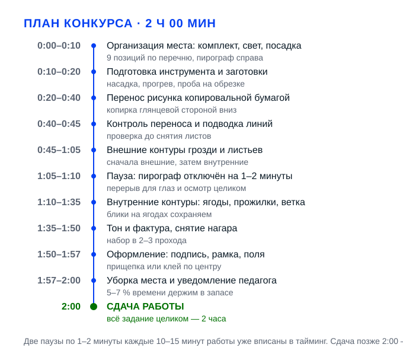
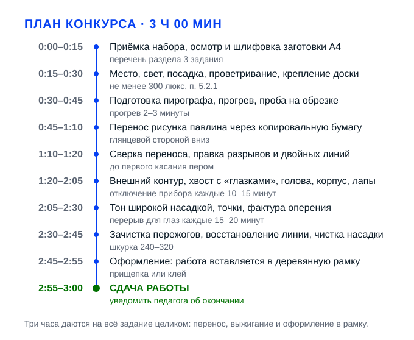
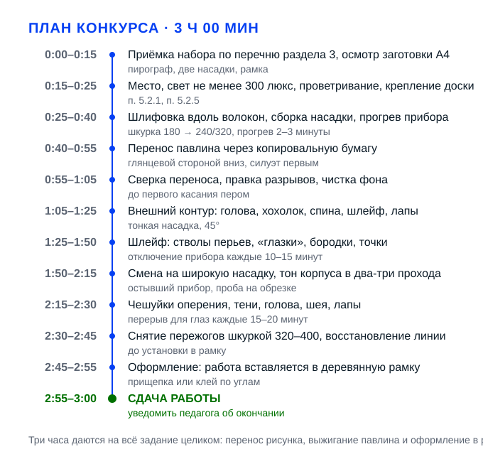

Пирография (ФВ)
Задания ниже — официальные файлы «Абилимпикс» (источник: abilympics-russia.ru), разложенные по категориям. Решения написаны по тексту задания, регламенту и критериям оценки; в них указано, что именно проверяет эксперт.
Школьник
14–16 лет, базовый уровень заданияВ официальном файле категории не разделены отдельными разделами — приводим задание целиком; различия по категориям смотрите в таблице модулей.
Пошаговое решение
Конкурсное задание школьников по компетенции «Пирография» короткое по описанию: за два часа нужно перенести рисунок грозди винограда на деревянную заготовку формата А4 через копировальную бумагу, выжечь его пирографом и оформить готовую работу в деревянную рамку. Материалы выдаются по закрытому перечню — один пирограф с двумя насадками, одна заготовка, один лист копирки, картинка, салфетки, прищепка или клей и рамка, — и второй попытки не будет. Ниже задание разложено на четыре задачи и сорок шесть шагов: от приёмки комплекта и пробы на обрезке до сдачи работы в рамке. Три вещи решают исход чаще всего: копирка кладётся красящей стороной вниз и полностью покрывает заготовку; выжигание идёт сначала по внешним контурам, потом по внутренним; каждые десять-пятнадцать минут пирограф отключают на одну-две минуты. Тон набирается постепенно — пережог не убирается ни ластиком, ни шлифовкой.

Задача 1. Организовать рабочее место и подготовить пирографПервый этап задания · организация и подготовка
Конкурсное задание школьников состоит из трёх этапов: перенос рисунка грозди винограда на деревянную заготовку через копировальную бумагу, выжигание этого рисунка пирографом и оформление готовой работы в рамку. На всё вместе даётся два часа, и первые пятнадцать минут решают, сколько из них останется на само выжигание. Поэтому начинаем не с рисунка, а с рабочего места: проверенный комплект, правильно поставленный свет, опробованный на обрезке пирограф и подготовленная копирка. Всё, что не сделано до старта, потом отнимает время у работы, а время здесь — самый дорогой ресурс.
Действие 1.1. Принять комплект и разложить зоны
Шаг 1.1.1
Раскладываем на столе всё выданное строго по перечню конкурсного задания: пирограф, две насадки к нему, деревянную заготовку формата А4, лист копировальной бумаги А4, картинку для переноса, упаковку влажных салфеток, ручку или карандаш, прищепку либо клей и деревянную рамку. Каждую позицию берём в руки, называем про себя и откладываем в свою зону, а не в общую кучу. Если чего-то не хватает или насадка одна вместо двух, поднимаем руку и говорим об этом до старта, пока замена ещё возможна.
Перечень оборудования в задании закрытый: на одного участника выдаётся ровно один пирограф, две насадки, одна заготовка А4, один лист копирки, одна картинка, упаковка салфеток, пишущий инструмент, прищепка или клей и рамка. Второй заготовки не будет, поэтому испортить первую нельзя. Проверка комплекта до старта — единственный момент, когда недостачу восполняют без потери конкурсного времени.
На столе лежат девять позиций, и каждая опознаётся с первого взгляда: насадки различимы по форме жала, копирка отличается от обычной бумаги глянцевой стороной, рамка собрана или лежит разобранной. Если сомневаетесь, что перед вами насадка нужного профиля, сравните её с картинкой на упаковке.
Самая частая ошибка — начать с заготовки, отложив насадки и копирку «на потом»: через полчаса выясняется, что тонкая игла потеряна, а копирка измята. Вторая ошибка — промолчать про недостачу и рассчитывать обойтись одной насадкой: контур и фон одной иглой ведутся вдвое дольше, и время уходит из этапа выжигания.
Эксперт проходит по рабочим местам в первые минуты и отмечает, разложен ли комплект и совпадает ли он с перечнем. Молчаливая недостача на этом осмотре читается как неготовность к заданию.
Шаг 1.1.2
Делим стол на три зоны: слева от заготовки — лист с картинкой и копирка, справа, со стороны рабочей руки, — пирограф с подставкой, в глубине стола — рамка, прищепка и салфетки. Заготовку кладём по центру, отступив от края стола ладонь, чтобы локоть рабочей руки свободно стоял на столе, а не висел в воздухе. Свободное место перед заготовкой оставляем пустым: туда будет ложиться кисть при смене насадки.
Раскладка по зонам экономит не меньше пяти минут: когда пирограф стоит справа под рукой, а картинка слева, участник не тянется через горячий инструмент и не сдвигает заготовку локтем. Локоть на столе — прямое требование задания, потому что от опоры зависит ровность линии: рука на весу ведёт жало волной.
Проверьте три расстояния: от заготовки до края стола не меньше ладони, пирограф достаётся правой рукой без наклона корпуса, лист с картинкой не накрывает рабочую зону. Между пирографом и заготовкой не должно быть ничего, что можно задеть шнуром.
Классическая ошибка — поставить пирограф слева, потому что там уже лежит копирка: при работе шнур тянется через заготовку и сдвигает её. Вторая — поставить инструмент на край стола: одно неловкое движение, и он падает на пол раскалённым.
Эксперт смотрит на организацию пространства в первые минуты и отдельно отмечает, стоит ли инструмент со стороны рабочей руки — это прямо прописано в задании.
Шаг 1.1.3
Садимся так, чтобы спина опиралась на спинку стула, а корпус не наклонялся к заготовке ближе чем на тридцать сантиметров: при работе с нагревом низкий наклон означает, что дым и нагар идут прямо в лицо, а задание требует сидеть прямо и дышать носом. Свет ставим слева и чуть спереди, чтобы тень от руки не падала на рабочую линию. Если лампа стоит справа, разворачиваем её или просим переставить до старта.
Правильная посадка — не формальность, а условие качества: при наклоне голова перекрывает обзор, и участник перестаёт видеть, что линия пошла в сторону. Требования охраны труда прямо говорят о работе в проветриваемом помещении, о прямой спине и дыхании носом, а глазам нужен перерыв каждые пятнадцать-двадцать минут, поэтому исходная посадка должна быть удобной на весь час работы.
Проверьте себя просто: положите ладонь между подбородком и заготовкой — если она задевает и голову, и доску, вы сидите слишком низко. Тень от ведущей руки не должна ложиться на контур, а свет должен падать на заготовку ровно, без бликов от глянцевой копирки. Если тень падает на контур, сдвиньте заготовку в сторону от лампы, а не наклоняйтесь сами.
Сесть «как удобно» в пол-оборота к столу: через двадцать минут начинает тянуть шею, рука теряет опору, и линия контура начинает гулять. Вторая ошибка — работать при свете сзади: заготовка в тени, и пережог виден только в конце, когда исправить уже нечего.
Эксперт обращает внимание на посадку и освещение при первом обходе, а также тогда, когда участник начинает щуриться или подносить заготовку к глазам. Отдельно фиксируется, тянется ли участник к лампе или к инструменту всем корпусом.
Шаг 1.1.4
Осматриваем заготовку до копирки: проводим ладонью по лицевой стороне, проверяем, нет ли смоляных кармашков, сучков, сколов и поднятого ворса. Мелкий ворс снимаем шлифовальной шкуркой средней зернистости вдоль волокон, а не поперёк, и после этого смахиваем пыль мягкой сухой тряпкой. Если на лицевой стороне есть сучок или тёмное пятно, заготовку переворачиваем: узор должен лечь на чистую сторону.
Смола при нагреве вскипает и выносит на поверхность тёмное пятно, которое невозможно убрать, а ворс поджигается быстрее древесины и даёт рваную, «мохнатую» линию вместо чистой. Шлифовка вдоль волокон не оставляет поперечных царапин: древесина шлифуется ровно, и при выжигании такие царапины не проступают светлыми полосами.
Поверхность на ощупь гладкая и однородная, смоляных точек нет, ворс не цепляется за ладонь. Посмотрите на заготовку под углом к свету: все неровности и следы шлифовки видны именно так, при прямом взгляде они скрываются.
Взять заготовку, не глядя на лицевую сторону, и начать перенос: сучок окажется ровно под гроздью, и работа пойдёт в брак. Вторая ошибка — шлифовать поперёк волокон: поперечные риски проявятся при первом же проходе жалом.
Эксперт осматривает заготовку до начала переноса и фиксирует дефекты древесины: работа по нешлифованной или смолистой поверхности оценивается ниже по качеству выжигания, даже если рисунок перенесён верно.
Действие 1.2. Проверить пирограф и опробовать насадки
Шаг 1.2.1
Берём пирограф и осматриваем его до включения: шнур без переломов и оголённых мест, вилка целая, ручка не обуглена у основания, наконечник сидит плотно. Разматываем шнур на всю длину и укладываем его сзади, за заготовкой, а не поперёк стола. Пирограф ставим на металлическую или керамическую подставку — она должна стоять справа, в пределах свободной зоны.
Повреждённый шнур при нагреве даёт короткое замыкание, а незакреплённая вилка в розетке — искру рядом с древесной пылью и стружкой. По требованиям охраны труда к работе допускаются прошедшие инструктаж с первой группой по электробезопасности, и проверка исправности шнура до включения — прямая часть этой подготовки. Кроме того, шнур, лежащий поперёк стола, при работе натягивается и утаскивает пирограф из руки.
Шнур целый по всей длине, вилка плотно входит в розетку и не шатается, ручка сухая и без трещин, наконечник не люфтит. Подставка стоит устойчиво и не касается заготовки. Если вилка сидит свободно и покачивается, попросите другую розетку или удлинитель до старта.
Включить пирограф, не глядя на шнур: он окажется под заготовкой, и при первом же движении рука дёрнет инструмент. Вторая ошибка — положить горячий пирограф прямо на стол: на столешнице остаётся подпалина, а инструмент остывает неровно.
Эксперт проверяет исправность инструмента и порядок на столе при первом обходе, а нарушения электробезопасности фиксирует сразу, без предупреждения. Участникам с нарушением опорно-двигательного аппарата эксперт отдельно проверяет, дотягивается ли участник до розетки без наклона.
Шаг 1.2.2
Устанавливаем насадку до включения в сеть: ослабляем винт крепления на ручке, вставляем жало нужного профиля до упора, проверяем, что оно село ровно и не выступает вбок, и затягиваем винт пальцами, без чрезмерного усилия. Тонкую иглу ставим на контур, вторую насадку откладываем в свободную зону справа: она понадобится, когда пойдёт фон и тени. Второй наконечник держим так, чтобы его не пришлось искать на ощупь в разгар работы.
Плохо затянутое жало при нагреве расширяется и проворачивается: линия начинает «гулять» по толщине, а иногда наконечник выходит из гнезда на ходу. Если жало вставлено криво, нагрев распределяется неравномерно и одна сторона линии всегда темнее другой. Вторая насадка нужна не «на всякий случай», а по заданию: перечень оборудования включает две насадки, и разные участки грозди ведутся разными профилями.
Жало сидит плотно, винт затянут, наконечник смотрит строго по оси ручки. Возьмите пирограф в рабочую руку и посмотрите на жало сбоку: оно должно быть продолжением ручки, а не торчать под углом. После затяжки ещё раз качните жало за остывшую часть: люфта быть не должно, но и винт не должен быть сорван.
Затягивать винт после включения, когда металл уже горячий: пальцы получают ожог, а винт при остывании ослабевает. Вторая ошибка — работать одной насадкой весь рисунок: контур получается либо слишком жирным, либо рваным.
Эксперт смотрит на смену насадок по ходу работы: умение подобрать профиль под участок рисунка отличает осмысленное выжигание от механического обвода. Отмечается и то, как участник обращается с горячим инструментом: за ручку, а не за металл у жала.
Шаг 1.2.3
Включаем пирограф в сеть и даём ему прогреться две-три минуты, пока жало не выйдет на рабочий накал. Пока инструмент греется, берём обрезок той же породы — небольшой кусочек заготовки или её тыльную кромку — и делаем пробные штрихи: прямую линию медленно, такую же быстро, короткий штрих с нажимом и без нажима. Смотрим, при какой скорости получается ровный коричневый след, а не бледная царапина и не чёрная яма.
Пирограф не имеет регулятора мощности в привычном виде, поэтому тон регулируется скоростью ведения и нажимом: медленно и с нажимом — тёмный широкий след, быстро и легко — светлый тонкий. Без пробы участник узнаёт эту зависимость уже на самом рисунке, то есть на работе, которую нельзя переделать. Проба на обрезке той же породы точна, потому что липа, берёза и сосна горят по-разному.
На пробном обрезке осталось четыре следа: медленный тёмный, быстрый светлый, короткий и длинный. Тот, что даёт ровный коричневый цвет без чёрных провалов, и есть ваш рабочий режим. Проверьте его ещё раз на самом краю заготовки, где разметка не видна.
Начать первую линию без пробы: либо рука слишком медленная и контур получается чёрным, либо слишком быстрая и линия выходит бледной и пунктирной. Вторая ошибка — пробовать на лицевой стороне заготовки, оставляя на ней посторонние следы.
Эксперт отмечает, делал ли участник пробные штрихи: это признак того, что человек управляет инструментом, а не наоборот. Если пробы не было, эксперт видит это по первым линиям работы: они выбиваются по тону из общего ряда.
Шаг 1.2.4
Сразу договариваемся с собой о режиме пауз: каждые десять-пятнадцать минут работы отключаем пирограф из розетки на одну-две минуты, чтобы он остыл, и в это время разминаем кисть, смотрим вдаль и проверяем рисунок целиком. Отключённый пирограф кладём только на подставку, а не на заготовку и не на салфетку. Одновременно планируем перерывы для глаз каждые пятнадцать-двадцать минут, как требует инструкция.
Непрерывная работа на одном накале перегревает ручку и жало: линия начинает идти темнее, чем в начале, и на светлых участках появляются пережоги. Пауза в одну-две минуты возвращает инструмент в тот же режим, в котором вы делали пробу. Кроме того, инструкция прямо запрещает оставлять электровыжигатель включённым во время перерывов и требует перерывов для глаз каждые пятнадцать-двадцать минут.
Проверьте по часам: между паузами не больше пятнадцати минут, сама пауза — минута-две. После паузы сделайте один пробный штрих на обрезке и сравните тон с предыдущим: он должен совпасть. Если между паузами прошло больше пятнадцати минут, тон к концу отрезка становится темнее, и это видно по контуру.
Работать без пауз «пока идёт»: к середине рисунка рука устаёт, нажим растёт, и линии становятся заметно темнее первых. Вторая ошибка — оставить пирограф включённым и уйти к другому столу: это прямое нарушение требований безопасности.
Эксперт следит за соблюдением режима труда: включённый без присмотра инструмент и работа без перерывов фиксируются как нарушение требований охраны труда.
Действие 1.3. Подготовить картинку и копировальную бумагу
Шаг 1.3.1
Кладём картинку на стол и оцениваем её под формат А4: гроздь должна занимать основную часть листа, оставляя по краям поля не меньше двух сантиметров. Проверяем ориентацию — вертикально или горизонтально ляжет заготовка, — и совмещаем низ грозди с нижним полем, чтобы композиция не «съезжала» в угол. Если картинка мятая, разглаживаем её ладонью на столе, но не утюгом и не над паром.
Поля нужны не для красоты: они войдут в рамку, и слишком близкий к кромке рисунок после установки в рамку окажется подрезанным наличником. Ориентация важна ещё и потому, что волокна древесины идут вдоль длинной стороны: контур, идущий поперёк волокон, требует более быстрого ведения жала, чем вдоль.
Приложите картинку к заготовке и отойдите на шаг: гроздь читается целиком, поля одинаковые сверху и снизу, рисунок не упирается в кромку. Если по краю остаётся меньше двух сантиметров, картинку нужно уменьшить или сдвинуть.
Приложить картинку вплотную к кромке: при оформлении в рамку часть грозди уйдёт под наличник, и работа будет выглядеть обрезанной. Вторая ошибка — взять мятую картинку: складки при обводке дают двойные и разорванные линии.
Эксперт оценивает композицию готовой работы: расположение рисунка на заготовке — часть критерия оформления, и ошибка видна сразу, даже если выжигание чистое.
Шаг 1.3.2
Берём лист копировальной бумаги А4 и определяем рабочую сторону: она глянцевая, красящая, и пачкает пальцы при касании. Кладём лист на стол красящей стороной вверх, проверяем, что он не мятый и не заломлен, и при необходимости обрезаем по формату заготовки так, чтобы он покрывал её целиком, включая края. Держим копирку за угол, а не за середину: на краске остаются отпечатки, которые потом перейдут на дерево.
Копирка переносит рисунок именно красящим слоем, поэтому глянцевая сторона при укладке должна смотреть вниз, к древесине. Мятый лист даёт разрывы и двойные линии там, где прошла складка, а лист меньше заготовки оставляет целые участки контура неперенесёнными. Пятна от пальцев на краске переходят на дерево тёмными мазками, которые приходится снимать ластиком уже после переноса, рискуя стереть и нужную линию.
Копирка ровная, без складок, по размеру больше или равна заготовке, красящая сторона определена безошибочно. Проверьте на уголке: проведите ногтем по краске — остаётся тёмный след, значит, сторона определена верно.
Положить копирку глянцевой стороной вверх: рисунок не перенесётся вообще, и участник теряет время, пока не поймёт причину. Вторая ошибка — использовать лист меньше заготовки и потом дорисовывать контур от руки.
Эксперт смотрит, как участник обращается с копиркой: аккуратность и понимание, какая сторона красящая, видны уже на этом шаге. Отдельно проверяется, не осталось ли на копирке отпечатков пальцев: они переносятся на дерево тёмными мазками.
Шаг 1.3.3
Прежде чем собирать «бутерброд» на чистовой заготовке, делаем пробу на обрезке: кладём кусочек копирки красящей стороной на дерево, сверху обрывок бумаги и проводим ручкой короткую линию. Оцениваем, насколько тёмный след остаётся: если линия бледная и прерывистая, нажим при обводке нужно усилить, если копирка мажет и размазывается — нажим ослабить и вести ручку ровнее.
Проба стоит тридцати секунд и снимает главную неопределённость первого этапа: насколько сильно давить ручкой. Слабое давление даёт контур, который виден только под углом к свету, и при выжигании участник ведёт линию «по памяти». Слишком сильное продавливает древесину и оставляет вмятины, которые после выжигания читаются как двойной контур.
На обрезке остался чёткий тёмный след без размазанных краёв и без вмятин на дереве. Это и есть ваш рабочий нажим; запомните его на ощупь, а не «на глаз». Если след выходит бледным уже при среднем нажиме, копирка, скорее всего, уже использовалась — скажите об этом до старта.
Пропустить пробу и обводить сразу на заготовке: половина контура выходит бледной, и участник обнаруживает это только при снятии листа. Вторая ошибка — давить изо всех сил, продавливая древесину: вмятины не убираются шлифовкой без риска стереть рисунок.
Эксперт отмечает, проверяет ли участник перенос до снятия копирки: это отличает спокойную работу от суеты. Экономия времени на пробе оборачивается переделкой переноса, и эксперт видит это по неровной плотности контура.
Задача 2. Перенести рисунок на заготовку через копировальную бумагуПервый этап задания · перенос рисунка
Перенос — самый недооценённый этап. Кажется, что это механическая работа на пять минут, а на деле именно здесь определяется, будет ли выжигание чистым: сдвинулась копирка — контур раздвоился, слабо нажали ручкой — половину линий придётся вести по памяти, слишком сильно продавили дерево — вмятина останется навсегда. Задание описывает перенос буквально: копирка кладётся глянцевой стороной вниз и полностью покрывает заготовку, сверху ложится картинка, одна рука фиксирует, вторая обводит контур шариковой ручкой. Ниже эта операция разложена по шагам так, чтобы её нельзя было сделать неправильно.
Действие 2.1. Собрать и зафиксировать пакет
Шаг 2.1.1
Кладём заготовку лицевой стороной вверх ровно по центру рабочей зоны, короткой стороной к себе, и больше её не двигаем. Берём копирку за противоположные углы, поднимаем и укладываем на заготовку красящей, глянцевой стороной вниз, так, чтобы лист полностью покрыл древесину до самых кромок. Разглаживаем копирку ладонью от центра к краям, чтобы под ней не осталось воздуха и складок.
Задание требует именно такого положения: глянцевая сторона вниз и полное покрытие заготовки. Если красящий слой смотрит вверх, рисунок не перенесётся вовсе, а если лист сдвинут к краю, часть контура останется на дереве неперенесённой и её придётся восстанавливать на глаз. Воздух под копиркой даёт «провалы» — участки, где линия вышла прерывистой.
Смотрим на заготовку сбоку, на уровне стола: копирка лежит без волн, края листа выходят за кромки заготовки со всех четырёх сторон. Проведите ладонью — под листом не должно быть вздутий. Если копирка легла с перекосом, поднимите её за дальние углы и уложите заново, а не подтягивайте по дереву.
Положить копирку так, что один-два сантиметра кромки остались открытыми: именно там окажется часть грозди, и она не перенесётся. Вторая ошибка — уложить лист со складкой посередине: по складке линия выйдет двойной.
Эксперт проверяет правильность укладки копирки до начала обводки — это базовое условие этапа переноса, и его нарушение видно сразу. Копирку, положенную красящей стороной вверх, эксперт замечает быстро: обводка прошла, а контура на дереве нет.
Шаг 2.1.2
Фиксируем пакет по верхней кромке: прищепкой или полоской малярного скотча прихватываем копирку и картинку к заготовке с одной стороны, лучше по верхнему краю или по левой стороне, если вы правша. Прищепку ставим так, чтобы она не закрывала рисунок и не мешала руке. Второй край оставляем свободным — его потом удобно приподнимать для проверки. Прищепку закрепляем так, чтобы её пружина не касалась лицевой стороны заготовки.
Фиксация решает главную проблему переноса: сдвиг в один-два миллиметра даёт двойной контур, который при выжигании превращается в размазанную линию, а исправить её уже нельзя. Крепление с одной стороны, а не с четырёх, оставляет возможность проверить перенос, не снимая весь пакет. Прищепка или клей прямо входят в перечень оборудования на участника, то есть задание предполагает именно такое закрепление.
Потяните лист с картинкой в сторону: он должен держаться и не смещаться относительно заготовки. Верхняя кромка совпадает с копиркой и с деревом — они двигаются как одно целое. Проверьте и свободный край: он должен приподниматься без натяжения копирки, иначе пакет поведёт.
Придерживать картинку рукой и одновременно обводить: рука устаёт, лист постепенно смещается, и к середине контура линии расходятся. Вторая ошибка — заклеить скотчем всю картинку: снять её потом, не порвав, не получится.
Эксперт смотрит на аккуратность сборки пакета и на то, как участник обращается с листами: порванная картинка на этом этапе — признак спешки. Смещённая копирка видна по раздвоенному контуру ещё до снятия листов, и это фиксируется сразу.
Шаг 2.1.3
Поверх копирки кладём лист с картинкой лицевой стороной вверх и совмещаем его с заготовкой по полям: сверху и снизу отступ одинаковый, гроздь стоит по центру. Разглаживаем лист от центра к краям, чтобы он лёг без волн, и только после этого окончательно прижимаем крепление. С этого момента положение листов не меняется до конца обводки. Если картинка меньше заготовки, центрируем её по полям, а не прижимаем к углу.
Совмещение по полям нужно, чтобы рисунок после оформления в рамку стоял ровно: если гроздь уйдёт в угол, никакое качество выжигания это не исправит. Волны на листе дают смещение линий относительно друг друга: контур на бумаге один, а переносится он с искажением.
Контрольные точки: расстояние от края грозди до кромки заготовки слева и справа отличается не более чем на пару миллиметров, лист лежит плоско, угол картинки совпадает с углом заготовки. Заодно проверьте, что крепление не закрывает ни одной линии рисунка и не мешает руке при обводке.
Приложить картинку «на глаз», без промера полей: смещение в сантиметр заметно только на готовой работе в рамке, когда исправлять поздно. Вторая ошибка — разглаживать лист уже после начала обводки. Третья — приклеить картинку по всей площади и потом рвать её при снятии.
Эксперт оценивает композицию по готовой работе, но на этапе переноса уже видно, промеряет ли участник поля или кладёт лист наугад. Промер полей на глаз виден по готовой работе: гроздь уходит в сторону от центра заготовки.
Шаг 2.1.4
Перед обводкой делаем проверку на сдвиг: легко прижимаем ладонью весь пакет и пробуем сдвинуть верхний лист пальцем. Если лист пошёл — перекрепляем. Затем проверяем, что под рукой нет крошек и стружки: любая песчинка между копиркой и деревом даст точку-вмятину и светлое пятно в готовой работе. Если на столе после шлифовки осталась пыль, смахиваем её сухой тряпкой и только потом укладываем копирку.
Проверка занимает полминуты, а предотвращает самый дорогой брак этапа. Песчинка под копиркой при нажатии ручкой вдавливается в древесину: получается локальная вмятина, которая при выжигании темнеет сильнее окружающего фона и читается как случайная клякса. Убрать её потом можно только шлифовкой, а шлифовать рядом с выжженным контуром нельзя.
Лист не смещается, поверхность под копиркой чистая, стружки и пыли нет. Пройдите ладонью по пакету: он должен лежать ровно, без бугорков. Поднимите пакет за свободный край и осмотрите дерево: ни одной светлой точки от вдавленной крошки быть не должно.
Пренебречь проверкой и начать обводку: сдвиг обнаруживается на середине контура, когда половина грозди уже обведена. Вторая ошибка — работать на столе, где осталась стружка от шлифовки заготовки. Третья — укладывать копирку на стол, где лежали насадки и стружка от шлифовки.
Эксперт отмечает чистоту рабочей зоны: пыль и стружка на заготовке — типичная причина точечных дефектов выжигания. Чистота поверхности проверяется до переноса: точечные дефекты потом не отличить от пережога.
Действие 2.2. Обвести контур шариковой ручкой
Шаг 2.2.1
Берём шариковую ручку и обводим рисунок по контуру, начиная с верхней точки грозди и ведя линию в одном направлении, без разворотов на полпути. Одной рукой плотно прижимаем пакет у самой линии обводки — ладонь ставим рядом с тем участком, который обводим, а не в стороне. Нажим средний, ровный, такой, какой вы отработали на пробе: линия должна продавиться до копирки, но не вмять древесину.
Задание описывает именно эту механику: одной рукой фиксируем рисунок, второй обводим шариковой ручкой по контуру. Фиксация рядом с линией обводки, а не за противоположный край листа, убирает малейший сдвиг. Ровный нажим важен потому, что разный нажим даёт разную плотность красящего слоя: часть контура получается яркой, часть — бледной, и при выжигании участник не видит, где линия есть, а где её надо домыслить.
Через десять-пятнадцать сантиметров линии приподнимите свободный край и посмотрите на дерево: след должен быть непрерывным и одинаково тёмным. Если след бледнеет — усильте нажим на этом участке. Так же проверяйте каждый следующий участок, не дожидаясь конца обводки: исправлять по ходу дешевле.
Вести линию, придерживая лист за противоположный край: лист «дышит» под рукой, и контур расходится на два-три миллиметра. Вторая ошибка — обводить быстро, «чтобы успеть»: копирка требует времени, при быстром ведении линия выходит пунктиром.
Эксперт наблюдает за техникой обводки: прижата ли рука, ровен ли темп, не сдвигается ли пакет. Если участник держит руку далеко от линии обводки, эксперт ждёт сдвига пакета и смотрит контур особенно внимательно.
Шаг 2.2.2
Порядок обводки держим такой: сначала внешний контур всей грозди и листьев, затем внутренние линии — границы ягод, прожилки листьев, ветка и усики. Каждый элемент обводим целиком, не перескакивая с одной ягоды на другую: так видно, что уже сделано, и легче проверить полноту. Мелкие детали обводим последними, потому что именно они чаще всего остаются забытыми.
Задание прямо предписывает порядок выжигания — сначала внешние контуры, затем внутренние, — и обводка должна ему соответствовать, иначе участник путается, какие линии уже есть. Обводка элемента целиком исключает «висящие» разомкнутые линии: незамкнутый контур при выжигании выглядит как обрыв, и его приходится домысливать.
Проверьте полноту по картинке: приложите лист к исходному рисунку и пройдите взглядом по каждой ягоде и каждому листу. Все видимые на картинке линии должны быть обведены, включая тонкие прожилки. Отдельно пройдите по мелким деталям: усики и хвостик ветки обведены последними, их забывают чаще всего.
Обводить только крупные контуры, оставляя прожилки и границы ягод «на потом»: в спешке про них забывают, и гроздь получается плоской. Вторая ошибка — обводить линии второпях, разрывая их на стыках. Третья — обводить линии в обратном порядке, начиная с мелких деталей и заканчивая контуром грозди.
Эксперт сверяет готовую работу с исходной картинкой: отсутствие части линий читается как неполное выполнение задания. Пропущенная прожилка обнаруживается при сверке с картинкой, и это сразу минус по точности исполнения.
Шаг 2.2.3
Ведите линию с небольшим запасом на поворотах: в местах изгиба, где ягода переходит в соседнюю, ручку не отрываем, а замедляем и слегка приподнимаем нажим. На стыке двух линий доводим одну до пересечения со второй, а не останавливаемся за миллиметр до неё. Если линия всё же разорвалась, возвращаемся и доводим её с нахлёстом в два-три миллиметра. На очень крутых изгибах помогаем себе поворотом заготовки, а не разворотом кисти.
Разрывы и недоведённые стыки — самая частая причина «грязного» выжигания: участник видит две отдельные линии, ведёт жало дважды и получает двойной след с тёмной точкой на стыке. Нахлёст в два-три миллиметра безопаснее недотянутой линии, потому что при выжигании он читается как одно утолщение, а не как разрыв.
Пройдите по контуру пальцем, не нажимая на лист: стыки должны встречаться, а не заканчиваться рядом. Поднимите угол и посмотрите на дерево — все пересечения на месте. Если на стыке видна светлая щель шире миллиметра, доведите линию сейчас, пока место видно под листом.
Останавливать линию за миллиметр до пересечения, чтобы «не испортить»: при выжигании на этом месте остаётся светлая щель. Вторая ошибка — обводить один и тот же участок дважды, получая раздвоенную линию.
Эксперт смотрит на целостность контура в готовой работе: разрывы и двойные линии снижают оценку качества выжигания. Стыки линий эксперт рассматривает под углом к свету — именно так видны и разрывы, и двойные следы.
Шаг 2.2.4
Не снимая картинку, проверяем перенос по контрольным участкам: приподнимаем лист с картинкой вместе с копиркой за свободный край и смотрим на дерево в трёх-четырёх местах — верх грозди, середина, нижняя ягода, крайний лист. Если где-то линия не перенеслась, возвращаем лист на место, совмещаем по прищепке и доводим этот участок. Проверку делаем при том же свете, при котором работаете, а не у окна: иначе контраст обманчив.
Проверка до снятия пакета — единственный способ исправить пропуск без переделки всей работы: пока картинка на месте, легко найти нужную линию и обвести её повторно. После снятия листов остаётся только домысливать контур карандашом, и точность падает. Контроль по четырём точкам покрывает всю площадь заготовки, а не только центр.
На дереве видны все четыре контрольных участка, линии сплошные, двойных следов нет. Сомнительные места обведены повторно, лишние следы от пальцев не появились. Если поднять лист неудобно, проверяйте по краям заготовки: там копирка чаще всего не достаёт до кромки.
Снять картинку сразу после обводки, не проверив перенос: пропуски обнаруживаются только при выжигании, когда линии уже нужны. Вторая ошибка — проверять только центр, забывая про края заготовки, где чаще всего не хватает копирки.
Эксперт отмечает, проверяет ли участник результат до снятия копировальной бумаги, — это признак технологической дисциплины. Снятая без проверки копирка означает, что пропуски будут найдены уже при выжигании, когда исправить сложно.
Действие 2.3. Снять листы и закрепить контур
Шаг 2.3.1
Снимаем пакет в два приёма: сначала открепляем прищепку и поднимаем лист с картинкой строго вверх, не отводя его в сторону, затем так же вверх снимаем копирку, держа её за угол. Копирку не тянем по дереву: красящий слой на снятом листе ещё свежий и может смазать уже перенесённый контур. Снятые листы сразу убираем из рабочей зоны, а не кладём на заготовку.
Движение вверх, а не в сторону, оставляет перенесённый контур чистым: при сдвиге листа краска мажет по дереву и даёт серые полосы поперёк рисунка. Свежая копирка пачкает особенно сильно, потому что красящий слой не закрепился. Убранные листы нужны и позже: по картинке вы будете сверять полноту выжигания, поэтому её лучше отложить в зону слева, а не выбрасывать.
На дереве остался контур без серых разводов и отпечатков пальцев. Снятые листы лежат в стороне, картинка не порвана и доступна для сверки. Если на дереве остались серые полосы, смахивайте их мягким ластиком вдоль полосы, а не поперёк контура.
Стянуть копирку вбок: по рисунку идут серые полосы, которые приходится снимать ластиком, рискуя стереть нужные линии. Вторая ошибка — выбросить картинку: сверять полноту выжигания станет не с чем. Третья — положить снятую копирку на заготовку, пока работаете с контуром.
Эксперт смотрит на чистоту переноса: размазанная копирка портит внешний вид заготовки ещё до начала выжигания. Снятие листов в сторону — заметная деталь: по ней видно, работал участник с пирографией раньше или нет.
Шаг 2.3.2
Оцениваем контраст перенесённого контура при дневном или рабочем свете: линии должны читаться без напряжения. Бледные участки подводим карандашом — тонкой линией, повторяя форму, а не обводя её заново с отступом. Жирные тёмные пятна от случайного нажима не стираем полностью, а ослабляем мягким ластиком, стараясь не задеть соседние линии. Карандаш берём мягкий и заточенный: толстый грифель даёт линию шире выжигаемой, и контур утолщается.
Дальше вы будете вести жало точно по линии: бледный контур заставляет вести «по памяти», и рука уходит в сторону — на готовой работе это видно как дрожащая, неровная линия. Слишком тёмные пятна от копирки при выжигании складываются с собственным следом жала и дают локальный пережог, который невозможно убрать.
Пройдите взглядом по всему контуру: все линии одинаково различимы, нет участков, которые приходится рассматривать. Между линиями нет серых мазков. Светлые участки подведите так, чтобы линия была видна при рабочем свете, а не только при наклоне заготовки.
Подводить бледные линии жирно, с нажимом: карандаш продавливает дерево, и при выжигании получается двойной контур. Вторая ошибка — стирать пятно копирки вместе с частью рисунка. Третья — подводить контур фломастером или гелевой ручкой: при нагреве такие чернила плавятся и растекаются.
Эксперт оценивает читаемость контура перед выжиганием: рваный или местами отсутствующий контур означает, что участок будет выжжен наугад. Толщина подведённых линий сравнивается с остальным контуром: утолщённые участки видны на просвет.
Шаг 2.3.3
Обеспыливаем заготовку перед выжиганием: смахиваем карандашную и древесную пыль мягкой сухой кистью или сухой тряпкой по направлению от центра к краям, не касаясь линий влажной салфеткой. Влажные салфетки из комплекта оставляем для рук и для чистки нагара в конце работы, а не для подготовки поверхности. После обеспыливания заготовку больше не трогаем пальцами за лицевую сторону.
Пыль под жалом превращается в тёмный налёт вокруг линии, и контур выглядит грязным даже при аккуратном ведении. Влажная салфетка размывает карандашный контур и поднимает ворс древесины: поднятый ворс при нагреве обугливается первым и даёт «мохнатую» линию. Поэтому подготовка поверхности — сухая, а салфетки остаются для других операций.
Поверхность сухая, пыли нет, контур читается так же, как до обеспыливания. Проведите тыльной стороной ладони над заготовкой — она должна остаться чистой. Если пыль остаётся, смахивайте её мягкой кистью от центра к краям, не проводя по линиям контура.
Пройтись по заготовке влажной салфеткой: контур поплыл, ворс поднялся, и выжигание пойдёт рвано. Вторая ошибка — смахивать пыль ладонью: на дереве остаются жировые следы, которые темнеют при нагреве. Третья — протирать заготовку спиртовой салфеткой: она снимает карандашный контур целиком.
Эксперт обращает внимание на чистоту поверхности перед выжиганием и на то, чем участник пользуется: салфетки по назначению, а не «на всякий случай». Салфетки в работе видны: эксперт смотрит, для чего участник их использует — для рук или для поверхности.
Задача 3. Выжечь изображение пирографомВторой этап задания · выжигание
Главный этап: на перенесённый контур ложится горячее жало, и работу уже нельзя отменить. Задание задаёт жёсткую последовательность — сначала внешние контуры, затем внутренние, — и это не формальность: пока внешний контур не замкнут, участник не видит композицию целиком и легко уводит рисунок в сторону. Работаем короткими проходами, с опорой локтя на стол, с паузой на остывание каждые десять-пятнадцать минут. Тон набираем постепенно, от светлого к тёмному: пережог не убирается ни ластиком, ни шлифовкой, а недожжённый участок всегда можно усилить вторым проходом.
Действие 3.1. Включить инструмент и поставить руку
Шаг 3.1.1
Включаем пирограф в розетку, ждём две-три минуты прогрева и проверяем накал на обрезке той же породы: короткий штрих должен дать ровный коричневый след без искр и без запаха горелой пыли. Если жало раскалено до малинового свечения, оно слишком горячее для контура — даём ему минуту остыть или начинаем с быстрого, лёгкого ведения. Проверку делаем вне заготовки, на её тыльной кромке.
Тон при выжигании зависит от накала и скорости, и первый штрих после включения всегда темнее, чем через пять минут работы: жало только вышло на режим. Если начать сразу с контура грозди, первая линия получится чёрной и грубой на фоне остальных. Проверка на обрезке выравнивает этот разброс и заодно подтверждает, что насадка держится и не проворачивается.
На обрезке остался коричневый след, одинаковый в начале и в конце штриха. Жало не искрит, дыма почти нет, запах — древесный, без горелого лака. Если на обрезке осталась светлая царапина без коричневого следа, накал ещё не вышел — подождите минуту и повторите.
Начинать сразу с рисунка, не прогрев инструмент: первые сантиметры контура уходят в чёрное. Вторая ошибка — проверять накал пальцем или подносить жало к лицу: наконечник раскалён до нескольких сотен градусов.
Эксперт наблюдает за первыми минутами выжигания: прогрев и проверка накала — признак того, что участник работал с пирографом раньше, а не первый раз. Прогрев пропускают чаще всего из спешки в первые минуты, и это видно по первой линии работы.
Шаг 3.1.2
Берём ручку пирографа как обычную шариковую: тремя пальцами, ближе к основанию, там, где ручка ещё не нагревается, и опираем локоть рабочей руки на стол. Кисть держим так, чтобы мизинец или ребро ладони касались заготовки и служили опорой, а жало шло под углом примерно сорок пять градусов к поверхности. Металлическую часть у основания жала и вилку не трогаем: они горячие даже там, где кажется тёплыми.
Опора на стол и на заготовку — то, что делает линию ровной: без неё рука ведёт жало волной, и контур получается дрожащим. Задание прямо предписывает держать ручку как пишущий предмет с опорой локтя на столе, потому что при выжигании работает не сила, а точность. Угол около сорока пяти градусов даёт оптимальное пятно контакта: жало не режет дерево остриём и не ложится плашмя, размазывая тон.
Рука лежит устойчиво, кисть не висит в воздухе, жало касается заготовки всей рабочей кромкой. Сделайте пробный штрих на обрезке, не меняя хвата: линия должна выйти ровной с первого раза. Если линия «пляшет», значит, кисть висит в воздухе и опоры нет — опустите ребро ладони на заготовку.
Держать пирограф «над» заготовкой на весу: линия получается волнистой, а кисть быстро устаёт. Вторая ошибка — брать ручку за самое основание у жала: пальцы получают ожог уже на третьей минуте работы. Третья — работать в рукаве, который цепляется за шнур и тянет инструмент в сторону.
Эксперт смотрит на постановку руки: хват и опора видны с первого шага и напрямую влияют на качество линии. Опора кисти на заготовку различима по следу: у работающего с опорой линия идёт ровно даже на длинных участках.
Шаг 3.1.3
Начинаем с самого верхнего элемента грозди и ведём линию в одном темпе, без остановок на полпути: остановка оставляет тёмную точку, потому что жало продолжает жечь дерево на месте. Скорость подбираем так, чтобы след был ровного коричневого цвета; толщина получается сама — примерно миллиметр у тонкой иглы. Там, где линия должна быть тоньше, ведём быстрее и почти без нажима.
Скорость — единственный регулятор тона у простого пирографа, и тренируется она быстро, но только на практике. Остановки и «покачивания» на месте дают точечные пережоги, которые при рассматривании работы читаются как грязь. Ровный темп важен ещё и потому, что весь внешний контур потом сравнивается глазом: разная толщина по длине линии бросается в глаза сильнее, чем общий тон.
Проведите пальцем в сантиметре от линии: след ровный, без утолщений и светлых провалов. Наложите обрезок с пробным штрихом рядом — тон должен совпасть. Сравните два сантиметра линии в начале и в конце штриха: тон должен быть одинаковым по всей длине.
Вести линию «с передышками», останавливаясь на каждом сантиметре: получается пунктир из тёмных точек. Вторая ошибка — давить изо всех сил, чтобы линия была «поярче»: жало проваливается в дерево, и вокруг линии появляется тёмный ореол.
Эксперт оценивает ровность и толщину линии внешнего контура — это первый и самый заметный признак качества выжигания. Толщина линии на прямых участках — первый признак ровного темпа ведения жала, эксперт смотрит её сразу.
Действие 3.2. Пройти внешний контур целиком
Шаг 3.2.1
Обходим внешний контур по порядку, начиная сверху: сначала абрис всей грозди от верхней ягоды вниз по левой стороне, затем по правой, затем контур листьев. Каждый крупный элемент замыкаем, прежде чем перейти к следующему. Мелкие детали — усики, хвостик ветки — оставляем на второй проход, потому что они тонкие и требуют свежего, не уставшего глаза. Линию ведём от верхней точки вниз, а не наоборот: так проще удерживать форму.
Порядок «сверху вниз и от крупного к мелкому» исключает главную ошибку новичка — потерю ориентации: когда контур обойдён целиком, видно, где рисунок «поехал». Замыкание каждого элемента сразу даёт законченные формы, по которым удобно контролировать пропорции. Задание задаёт ту же последовательность: сначала внешние контуры, потом внутренние.
Все крупные элементы обойдены по замкнутому контуру, композиция читается целиком. Отойдите от стола на шаг и посмотрите: гроздь должна просматриваться как единая форма, а не как набор отдельных линий.
Идти по контуру «как получится», перескакивая с ягоды на лист: часть линий остаётся разомкнутой, и рисунок распадается. Вторая ошибка — начинать с мелких деталей: на них уходит время, а общий абрис остаётся невыжженным.
Эксперт оценивает композицию и полноту: незамкнутые контуры читаются как недоделанная работа. Разомкнутые контуры видны при общем осмотре: работа выглядит как набросок, а не как законченное изображение.
Шаг 3.2.2
В местах поворота не разворачиваем кисть, а поворачиваем саму заготовку свободной рукой: дерево скользит по столу, а жало идёт по линии в неизменном положении. На крутых изгибах слегка замедляемся и снимаем нажим, на прямых участках ведём чуть быстрее. Если заготовка большая и неудобно поворачивать, придерживаем её ладонью у самого места поворота, а не за противоположный край.
Поворот заготовки вместо разворота кисти сохраняет угол наклона жала, а значит, и ширину линии: при развороте кисти жало встаёт на остриё, линия истончается, а на выходе из поворота получается клякса. Снятие нажима на изгибе предотвращает пережог, который случается именно там, где рука замедляется.
Пройдите по изгибам взглядом: толщина линии на поворотах такая же, как на прямых участках, тёмных точек нет. Проверьте на ощупь — вмятин от жала не осталось. Сравните толщину линии на трёх поворотах: она должна совпадать с толщиной на прямых участках контура.
Разворачивать кисть на повороте: линия сужается, а на вершине угла появляется тёмное пятно. Вторая ошибка — держать заготовку за край и тянуть к себе: она сдвигается вместе с контуром под жалом. Третья — придерживать заготовку за дальний край: она уходит из-под жала в самый неподходящий момент.
Эксперт смотрит на углы и изгибы: именно там видно, управляет ли участник инструментом или просто «обводит». Поворот заготовки вместо кисти — приём, который видно по положению рук на рабочем месте.
Шаг 3.2.3
Замыкая контур, доводим линию до уже выжженного участка и снимаем жало точно в точке стыка, не протягивая его дальше. Если стык получился с недожогом — светлой щелью, — возвращаемся и коротким движением закрываем промежуток. Второй раз по уже выжженной линии не проходим: повторный проход всегда темнее первого. Если стык получился темнее остального контура, дальше по этой линии не идём вовсе.
Стык — самое заметное место в контуре: недожатая щель выглядит как разрыв, а пережжённый стык — как узел. Аккуратное замыкание делает контур цельным, и именно по нему эксперт судит о владении инструментом. Повторный проход по той же линии складывается с первым по тону и даёт участок вдвое темнее остального контура.
Стыки закрыты, переход тона между концом и началом линии не виден. Посмотрите на замыкание под углом к свету: щели не должно быть ни в одной точке. Проверьте замыкание пальцем, не нажимая: вы должны чувствовать ровную линию без бугорка от повторного прохода.
Протягивать жало за точку стыка, оставляя «хвост» в сторону: на работе появляется лишняя линия. Вторая ошибка — проходить стык дважды, чтобы «наверняка»: получается тёмная клякса. Третья — замыкать контур «на глаз», не доводя линию до прежнего конца и оставляя зазор.
Эксперт проверяет замыкания контуров в готовой работе: разрывы и хвосты читаются как небрежность. Замыкания эксперт смотрит в первую очередь: по ним видно, доводит ли участник линии до конца или бросает на полпути.
Шаг 3.2.4
После внешнего контура делаем контрольный проход взглядом и паузу: отключаем пирограф на одну-две минуты, откидываемся и смотрим на заготовку целиком, а не на последний участок. Сравниваем тон контура в разных местах — он должен быть одинаковым по всей длине, кроме участков, где по замыслу нужна тень. Найденные светлые провалы помечаем карандашом на полях обрезка, чтобы не забыть.
Пауза нужна не для отдыха, а для смены масштаба восприятия: вблизи глаз адаптируется к тону и перестаёт замечать разницу, а с расстояния вытянутой руки видно, где контур ушёл в чёрноту. Отключение инструмента на паузу — прямое требование инструкции: во время перерывов электровыжигатель не оставляют включённым. Заодно остывает ручка, и хват не «плывёт».
Контур одинаков по тону, композиция читается с расстояния, найденные дефекты записаны. Пирограф отключён и лежит на подставке. Если тон где-то выбивается, отметьте участок карандашом на обрезке и вернитесь к нему после паузы, а не сразу.
Работать без пауз «пока идёт»: рука привыкает к неправильному тону, и разница между началом и концом контура становится очевидной только эксперту. Вторая ошибка — оставить инструмент включённым на подставке во время паузы.
Эксперт отмечает, делает ли участник паузы и осматривает ли работу целиком: умение видеть свою работу со стороны входит в оценку. Пауза с отключением инструмента фиксируется отдельно от общего времени работы над контуром.
Действие 3.3. Проработать внутренние контуры грозди
Шаг 3.3.1
Переходим к ягодам: каждую обводим отдельной окружностью, ведя линию от верхней точки в одну сторону до замыкания, не пересекая соседнюю ягоду. Внутри каждой ягоды оставляем светлое пятно — блик — в верхней или верхне-левой части, не закрашивая его и не подводя к нему линию вплотную. Ягоды, которые лежат в глубине грозди, обводим более тонкой и светлой линией, чем передние.
Гроздь читается не отдельными кругами, а разницей тона между ягодами: передние тёмные, дальние светлые. Если все ягоды обвести одинаково, получится плоский узор из одинаковых кружков. Светлое пятно внутри ягоды имитирует блик и делает форму объёмной. Разделение на передний и задний план — это уже художественная работа, за которую дают баллы отдельно от техники.
На каждой ягоде контур замкнут, блик сохранён, внутри круга нет случайных линий. Отойдите на шаг: ягоды должны читаться как объёмные шарики, а не как плоские окружности. Блики на всех ягодах должны быть с одной стороны — со стороны света, иначе гроздь рассыпается.
Обводить ягоды одной жирной линией, заходя на соседнюю: границы сливаются, и гроздь превращается в сетку. Вторая ошибка — закрашивать блик: ягода становится тёмным пятном без объёма. Третья — обводить ягоды в одной грозди с разным нажимом: передние и дальние перестают различаться.
Эксперт рассматривает проработку ягод: сохранённые блики и разница тона между передними и дальними ягодами — признак осмысленной работы. Разница тона между передними и дальними ягодами проверяется на расстоянии вытянутой руки.
Шаг 3.3.2
На листьях прорабатываем прожилки: центральную жилку ведём от основания листа к кончику одним движением, боковые — от центральной к краям, слегка не доводя до кромки. Тон прожилок делаем светлее внешнего контура: ведём быстрее и с меньшим нажимом. Если лист должен быть тёмным, прожилки оставляем светлыми, то есть не выжигаем их вовсе, а затемняем пространство между ними.
Прожилки — то, что превращает силуэт листа в лист: без них форма читается как пятно. Светлые прожилки на тёмном листе дают естественную фактуру, потому что именно так выглядит лист винограда на свет. Недоведённые до кромки боковые жилки выглядят естественнее, чем упёршиеся в контур: настоящая жилка истончается к краю.
Прожилки читаются как единая система: центральная идёт от основания к кончику, боковые расходятся в обе стороны. Тон прожилок светлее контура листа. Сравните лист с картинкой: количество боковых жилок должно совпадать, иначе лист выглядит чужим.
Вести прожилки с той же силой, что и контур: лист становится чёрным, и фактура пропадает. Вторая ошибка — рисовать жилки «по памяти», не сверяясь с картинкой: направление расходится с исходным рисунком.
Эксперт сверяет проработку листьев с исходной картинкой: направление и количество прожилок — часть критерия точности. Направление жилок эксперт сверяет с картинкой: расхождение читается как ошибка рисунка, а не как стилизация.
Шаг 3.3.3
Ветку и усики ведём тонкой линией с переменной толщиной: у основания ветки жало идёт медленнее и линия толще, к концу ветки скорость растёт и линия истончается. Усики, если они есть в рисунке, ведём почти без нажима, короткими плавными движениями от закрутки к концу. Все тонкие элементы делаем на остывшем или чуть остывшем жале, чтобы не прожечь линию насквозь.
Толщина линии — единственное, чем передаётся жёсткость ветки и нежность усика: одинаковая линия делает рисунок схематичным. Тонкие элементы на перегретом жале прогорают до чёрного и теряют форму: усик превращается в точку. Кроме того, тонкие линии делаются быстро, и именно на них проверяется владение темпом.
Ветка толще у основания и тоньше к концу, усики ровные, без обрывов и утолщений. Тонкие линии не прожжены насквозь — на просвет дерево не потемнело пятном. Толщина линии у основания ветки и у её конца должна различаться заметно, но без резкого перехода.
Вести ветку и усики так же, как контур: получается грубая линия, не соответствующая масштабу детали. Вторая ошибка — делать усики на раскалённом жале, сразу после плотной штриховки: они прожигаются и чернеют.
Эксперт смотрит на проработку тонких деталей: обрывы и чёрные точки на усиках снижают оценку качества линии. Тонкие линии — самая частая причина чёрных точек: эксперт смотрит на усики и хвостик ветки отдельно.
Шаг 3.3.4
Заканчиваем внутренние контуры полным проходом снизу вверх: от нижних ягод к верхним, проверяя каждую линию на непрерывность. Одновременно смотрим, не осталось ли в рисунке участков с перенесённым, но не выжженным контуром, — их видно по карандашному следу. Найденные пропуски закрываем сразу, пока рука в том же режиме и жало в той же температуре. Сверку ведём по картинке, а не по памяти: именно память подсказывает несуществующие линии.
Проход в обратном направлении — приём самоконтроля: глаз, идущий по уже знакомому пути, замечает то, что пропустил при движении сверху вниз. Незакрытые карандашные линии при оформлении работы видны отчётливо, особенно на светлой древесине, и выглядят как небрежность. Закрывать пропуски сразу важно потому, что после паузы жало выходит на другой тон и заплатка будет отличаться.
Карандашных линий на заготовке не осталось, все внутренние контуры замкнуты, тон в местах правок совпадает с соседними участками. Сверьтесь с картинкой: ни один элемент не пропущен. Карандашные линии видны под углом к свету — проверяйте работу именно в этом положении.
Оставить часть внутренних контуров невыжженными, посчитав их «неважными»: на готовой работе это читается как незавершённость. Вторая ошибка — закрывать пропуски после долгой паузы, когда тон жала уже другой.
Эксперт сверяет полноту проработки с исходным рисунком и отдельно отмечает участки, где карандашный контур остался невыжженным. Пропущенные внутренние линии эксперт находит при сверке с рисунком, и это читается как незавершённость.
Действие 3.4. Набрать тон и убрать нагар
Шаг 3.4.1
Начинаем тонировать с теней на ягодах: затемняем нижнюю и правую часть каждой ягоды, оставляя светлое пятно нетронутым. Работаем короткими дугообразными штрихами по форме ягоды, а не поперёк неё, и набираем тон в два-три прохода: первый светлый, второй темнее, третий только у самой границы. Каждый следующий проход делаем после того, как предыдущий перестал быть виден как отдельные линии.
Тень по форме — то, что делает изображение объёмным: штрих, идущий поперёк формы, разрушает её и читается как случайные полосы. Набор тона в несколько проходов безопаснее одного плотного: пережог необратим, а недобор всегда можно усилить. Плавный переход от света к тени — признак хорошего владения инструментом, и именно его эксперт ищет на ягодах.
Тень лежит по форме, переход от светлого к тёмному плавный, без резких границ и без «полос». Посмотрите на заготовку под углом: тон должен выглядеть как сплошное затемнение, а не как набор штрихов. Тень не должна обрезаться по краю ягоды: граница тона идёт внутри формы, а не по контуру.
Штриховать поперёк формы ягоды: тень «разрезает» шар, и объём пропадает. Вторая ошибка — сразу вести жалом плотно, чтобы «получилось темнее»: на месте тени остаётся чёрное пятно с обугленными краями. Третья — набирать тень одним плотным проходом в самом начале, когда рука ещё не чувствует тон.
Эксперт оценивает объём и плавность тональных переходов — это ключевой критерий художественной части работы. На ягодах эксперт ищет плавный переход в три-пять ступеней тона: резкая граница читается как плоское пятно.
Шаг 3.4.2
Добавляем фактуру листьям: пространство между прожилками затемняем редкими точками и короткими штрихами, оставляя прожилки светлыми. Точки ставим кончиком жала, легко касаясь поверхности, с разной частотой: у основания листа плотнее, к краю реже. Листья, лежащие на дальнем плане, затемняем меньше, чем передние. Точки ставим на чуть остывшем жале, иначе они прожигаются до чёрного и дают грязные крапины.
Точечная фактура даёт ощущение шероховатой поверхности и при этом не убивает светлые прожилки: если просто заштриховать лист линиями, прожилки исчезнут под тоном. Разная плотность точек у основания и по краю повторяет реальное строение листа. Разница между передними и дальними листьями строит глубину, без неё композиция выглядит плоской.
Прожилки читаются светлыми на затемнённом листе, точки не сливаются в сплошное пятно, дальние листья светлее передних. Проверьте на расстоянии вытянутой руки: фактура должна быть видна, но не «рябить».
Заливать лист сплошным тоном: прожилки исчезают, и лист превращается в тёмное пятно. Вторая ошибка — ставить точки слишком часто и с нажимом: получаются обугленные крапины с тёмными ореолами. Третья — ставить точки на горячем жале сразу после плотной штриховки листа.
Эксперт смотрит на фактуру листьев и на то, сохранены ли светлые прожилки: это различает аккуратную работу и «залитую». Плотность точек эксперт оценивает на расстоянии: слишком частые сливаются в сплошное пятно.
Шаг 3.4.3
Оформляем пространство вокруг грозди: если фон в рисунке предусмотрен, проходим его редкой светлой штриховкой по направлению волокон, не подходя вплотную к контуру — оставляем светлый промежуток в один-два миллиметра. Если фона нет, оставляем древесину чистой и только проверяем, что рядом с контуром нет случайных точек и нагара. Светлый промежуток вокруг грозди сохраняем обязательно: он отделяет рисунок от фона.
Светлый «воздух» вокруг контура — профессиональный приём: он делает силуэт читаемым и не даёт рисунку слипнуться с фоном. Штриховка по направлению волокон ложится ровнее и не «лохматит» поверхность, потому что жало идёт вдоль плотных волокон, а не поперёк них. Случайные точки у контура читаются как грязь, даже если сама линия проведена чисто.
Вокруг грозди осталась светлая полоса, фон не подходит к контуру вплотную, случайных точек нет. Посмотрите на работу при боковом свете: край рисунка должен быть чётким. Ширина светлой полосы должна быть одинаковой по всему контуру грозди, без сужений на поворотах.
Заштриховать фон вплотную к контуру: силуэт сливается с фоном, и работа теряет читаемость. Вторая ошибка — штриховать поперёк волокон: поверхность «лохматится», и появляются светлые царапины. Третья — штриховать фон, не глядя на направление волокон: поверхность начинает лохматиться.
Эксперт оценивает целостность композиции и чистоту фона: слипшийся с фоном рисунок читается хуже, даже при хорошей проработке деталей. Светлая полоса вокруг рисунка проверяется при боковом свете: при прямом она почти не видна.
Шаг 3.4.4
Убираем нагар: даём заготовке полностью остыть, затем мягкой сухой тряпкой или тыльной стороной ластика смахиваем нагар и пыль, не проводя по самим линиям. Затем осматриваем работу целиком при боковом свете, сравниваем тон в разных участках и решаем, нужен ли ещё один проход. Если тон где-то выбивается — выравниваем его точечно, короткими касаниями, а не сплошной линией.
Нагар лежит поверх выжженных линий и делает их мутными: снятый нагар открывает истинный тон, и только после него видно, ровно ли набрана тень. Тереть ластиком по линиям нельзя — он осветляет сам выжженный след и оставляет светлые полосы. Точечное выравнивание тона безопаснее сплошного прохода: одно лишнее движение жалом по большой площади даёт заметное пятно.
Поверхность чистая, нагара нет, тон ровный по всей работе, контур читается. Проведите ладонью над заготовкой — на руке не должно остаться сажи. Если после снятия нагара тон где-то стал заметно светлее, это место требует одного короткого прохода жалом.
Смахивать нагар, пока заготовка горячая, или тереть линии ластиком: остаются светлые полосы и разводы. Вторая ошибка — выравнивать тон широкими движениями: вместо ровного тона получается тёмное пятно.
Эксперт осматривает работу после снятия нагара: именно на этом этапе видно реальный тон и все неровности проработки. Чистота поверхности после снятия нагара — последнее, что видно перед оформлением работы в рамку.
Задача 4. Оформить работу в рамку и сдать её педагогуТретий этап задания · оформление и сдача
Задание заканчивается не последней выжженной линией, а готовой пирогравюрой в рамке: третий этап так и называется — оформление, и готовая работа помещается в рамку. Здесь легко потерять то, что уже набрано: небрежно вставленная работа с перекошенными полями выглядит хуже, чем чуть более скромное выжигание. Поэтому оставляем на оформление пятнадцать минут, ещё до начала работы зная, что они уйдут именно на это. Завершается всё уборкой места и уведомлением педагога об окончании — это прямо прописано в последовательности выполнения задания.
Действие 4.1. Подготовить работу к оформлению
Шаг 4.1.1
Даём заготовке остыть полностью, минут пять, и только потом берём её в руки. Осматриваем лицевую сторону при боковом свете: проверяем кромки на заусенцы, снимаем их мелкой шлифовальной шкуркой вдоль кромки, а не поперёк. Затем переворачиваем заготовку и на обратной стороне мягким карандашом пишем фамилию, имя и дату — тонко, без нажима, у нижней кромки.
Остывшая заготовка не оставит отпечатков и не поведёт себя при установке в рамку. Заусенцы на кромке цепляют ткань и кожу, а при вставке в рамку могут отколоться вместе с кусочком древесины, испортив край работы. Подпись с обратной стороны нужна для идентификации работы при оценке: без неё эксперт не всегда может соотнести изделие с участником, а на выставках работа остаётся безымянной.
Кромки гладкие, заусенцев нет, пальцы не цепляются. Подпись читается, но не продавливает дерево на лицевую сторону — проверьте, перевернув заготовку. Проверьте кромку пальцем по всему периметру: заусенец чувствуется как шершавая полоска на торце.
Шлифовать кромку поперёк: на торце появляются сколы, и край выглядит рваным. Вторая ошибка — подписывать работу шариковой ручкой с сильным нажимом: на лицевой стороне остаются вмятины. Третья — подписывать работу на лицевой стороне, поверх выжигания, где подпись читается как дефект.
Эксперт проверяет наличие подписи при приёмке работы и осматривает кромки: сколы на краю снижают оценку оформления. Подпись проверяется на обороте: без неё работу сложно соотнести с участником при оценке.
Шаг 4.1.2
Убираем случайные следы: пятна копирки и карандашные линии, оставшиеся вне рисунка, снимаем мягким ластиком короткими движениями, стараясь не задевать выжженные линии. Если след не убирается сухим ластиком, не трём сильнее — оставляем как есть и учитываем при компоновке рамки: край с дефектом можно сместить под наличник. Пыль от ластика смахиваем сухой тряпкой.
Карандашные линии вне рисунка при оформлении видны особенно отчётливо, потому что рамка задаёт границы и взгляд идёт по всей поверхности. Тереть ластиком по выжженному нельзя: он снимает верхний обугленный слой и оставляет светлую полосу, которая не восстанавливается повторным выжиганием — тон ляжет неровно. Смещение дефектного края под наличник — законный приём, если рисунок при этом не съезжает из центра.
Лицевая сторона чистая, посторонних следов нет, выжженные линии не осветлены. Посмотрите на работу под углом к свету: карандашные штрихи видны именно так. Если пятно копирки осталось, оцените, уйдёт ли край под наличник: тогда дефект не будет виден в рамке.
Стирать карандаш ластиком «до чистого»: вместе с карандашом уходит часть выжженного тона, и на этом участке появляется светлое пятно. Вторая ошибка — смахивать пыль от ластика ладонью: остаются жировые следы.
Эксперт осматривает работу перед установкой в рамку и отмечает случайные следы как небрежность исполнения. Осветлённые ластиком участки эксперт видит сразу: они отличаются от общего тона и не восстанавливаются.
Шаг 4.1.3
Проверяем ориентацию работы: гроздь должна стоять вертикально, верх рисунка совпадать с верхней кромкой заготовки. Кладём заготовку на стол, отходим на шаг и смотрим, не «завален» ли рисунок в сторону. Если есть небольшой перекос композиции, компенсируем его посадкой в рамку: сдвигаем заготовку внутри рамки на миллиметр-два в противоположную сторону, а не подрезаем кромку.
Перекос, незаметный при работе за столом, отчётливо виден, когда работа висит вертикально: рамка даёт прямые линии, относительно которых наклон читается сразу. Компенсация посадкой — единственный безопасный способ: подрезка кромки уменьшает заготовку, и она может перестать держаться в рамке. Ориентация входит в критерий оформления наряду с аккуратностью.
Рисунок стоит вертикально, поля сверху и снизу сопоставимы. Проверьте, приложив к работе лист бумаги с прямым краем и сравнив с ним вертикаль грозди. Проверьте вертикаль по краю стола: наклон в один градус уже заметен на расстоянии шага, а в рамке — тем более.
Подрезать кромку «чтобы выровнять»: заготовка уменьшается, и в рамке появляется щель. Вторая ошибка — не заметить перекос вообще, потому что работа всё время лежала на столе. Третья — ориентироваться на положение рук при работе, а не на кромки заготовки: руки всегда стоят чуть иначе.
Эксперт оценивает композицию готовой работы в рамке: наклон рисунка относительно рамки — заметный дефект. Наклон рисунка относительно кромки заготовки проверяется на столе приёмки под прямым углом зрения.
Действие 4.2. Вставить работу в деревянную рамку
Шаг 4.2.1
Разбираем рамку и проверяем её до установки работы: внутренняя сторона чистая, без пыли и стружки, стекло, если оно есть, протёрто с двух сторон, задняя стенка ровная. Протираем внутренние поверхности сухой мягкой тканью и стряхиваем пыль с задника. Рамку кладём лицевой стороной вниз на мягкую подложку — лист бумаги или чистую тряпку, чтобы не поцарапать лицевую поверхность.
Пыль внутри рамки оседает на стекле и на работе, и через неделю работа выглядит небрежной, хотя сделана аккуратно. Стружка, попавшая под заготовку, не даёт ей лечь ровно: появляется бугорок и перекос. Лицевая сторона рамки царапается о стол при малейшем движении, а полированное дерево такие царапины не скрывает.
Внутри рамки чисто, стекло прозрачное без разводов, задник сухой. Проведите пальцем по внутреннему фальцу — пыли и стружки быть не должно. Протрите фальц рамки бумажной салфеткой и посмотрите на неё: следов пыли и стружки остаться не должно.
Ставить работу в рамку, не протерев её внутри: пыль оказывается запечатанной внутри, и убрать её уже нельзя. Вторая ошибка — работать с рамкой на голом столе: на лицевой стороне остаются царапины. Третья — собирать рамку на коленях, где заготовка ложится неровно и её легко поцарапать.
Эксперт открывает рамку или смотрит на работу через стекло: пыль и стружка внутри читаются как небрежное оформление. Пыль внутри рамки видна через стекло под углом: эксперт смотрит работу именно так, а не сверху.
Шаг 4.2.2
Укладываем заготовку в рамку лицевой стороной вверх и выравниваем поля: расстояние от рисунка до наличника должно быть одинаковым со всех четырёх сторон. Закрепляем заготовку по перечню оборудования — прищепкой или клеем: прищепку ставим на задник с нажимом на заготовку, клей наносим тремя-четырьмя точками по краям задней стороны, не ближе сантиметра к кромке, и прижимаем на полминуты.
Равные поля — то, что отличает оформленную работу от вставленной наспех: разница в сантиметр видна сразу, потому что наличник даёт прямую рамку для сравнения. Точечное нанесение клея по краям нужно, чтобы клей не выступил на лицевую сторону и чтобы заготовку при необходимости можно было снять. Крепление по перечню — прищепка или клей — предусмотрено заданием, и оно должно держать работу, а не просто присутствовать.
Поля одинаковые со всех сторон, заготовка не смещается при лёгком нажатии, клей не выступил на лицевую сторону. Проверьте, перевернув рамку и слегка встряхнув её над столом: работа не должна садиться вниз.
Нанести клей по всей кромке: излишки выступают на лицевую сторону, и убрать их, не повредив выжигание, невозможно. Вторая ошибка — закрепить заготовку за один угол: она перекашивается внутри рамки. Третья — закреплять заготовку только сверху: снизу она отходит, и в рамке появляется щель.
Эксперт проверяет равномерность полей и надёжность крепления: смещённая работа внутри рамки оценивается ниже. Точки клея по краям проверяются на обороте: их расположение показывает, думал ли участник о том, что работу снимут.
Шаг 4.2.3
Ставим задник на место и закрепляем его штатными держателями или прищепкой, затем переворачиваем рамку и проверяем работу в вертикальном положении: подвешиваем или прислоняем к опоре, отходим на два шага. Смотрим на поля, на вертикаль грозди и на то, не видно ли сдвига заготовки относительно наличника. Только после этого считаем оформление законченным.
Оформление проверяется только в вертикальном положении: на столе, под углом зрения сверху, перекос и разница полей не читаются. Два шага расстояния дают тот масштаб, в котором работу будет видеть эксперт и зритель на выставке. Это последняя возможность поправить положение заготовки, пока клей не схватился окончательно.
Работа висит ровно, поля одинаковые, рисунок вертикален, заготовка не выступает за наличник. Сделайте фотографию или просто отойдите и посмотрите свежим взглядом. Если работа «садится» вниз под собственным весом, крепление слабое — добавьте точку клея или прищепку.
Считать оформление готовым, не проверив работу в вертикали: перекос обнаруживается уже на выставке. Вторая ошибка — закрепить задник так, что он выгибает заготовку. Третья — прислонять рамку к неустойчивой опоре: падение портит и работу, и оценку за оформление.
Эксперт осматривает работу в вертикальном положении на столе приёмки: именно так проверяются поля и перекосы. Оформление оценивается в сборе: рамка, поля и вертикаль смотрятся вместе, а не по отдельности.
Действие 4.3. Сдать работу и привести место в порядок
Шаг 4.3.1
Отключаем пирограф из розетки и даём ему полностью остыть, не снимая насадку: снимать жало с горячего инструмента нельзя, винт и металл обжигают пальцы. Остывший пирограф укладываем в отведённое место, шнур сматываем свободными витками, не перегибая у вилки. Насадку снимаем после остывания, протираем от нагара сухой салфеткой и кладём рядом с инструментом.
Инструмент сдают в том состоянии, в котором его выдали: остывший, с целым шнуром, без нагара на жале. Сматывание шнура свободными витками предотвращает перелом жилы у вилки — самая частая поломка пирографов. Требование не оставлять электровыжигатель включённым относится и к концу работы: до сдачи инструмент должен быть обесточен.
Пирограф холодный на ощупь, шнур целый, насадка снята и очищена, всё лежит на своём месте. Розетка свободна. Проверьте ещё раз, что вилка вынута из розетки: остывающий инструмент не должен оставаться под напряжением.
Снимать насадку сразу после работы: ожог пальцев, а остывшее жало к тому же прикипает и вынимается с усилием, ломаясь. Вторая ошибка — оставить пирограф включённым, пока убираете стол. Третья — сматывать шнур вокруг ручки: изоляция мнётся у основания, и жила ломается.
Эксперт проверяет сдачу инструмента: обесточенный и чистый пирограф — часть оценки организации работы и соблюдения требований безопасности. Сдача инструмента проверяется до ухода с места: пирограф должен быть холодным, чистым и обесточенным.
Шаг 4.3.2
Убираем стол в обратном порядке той последовательности, в которой его готовили: сначала стружку и нагар мягкой щёткой в мусор, затем копирку и обрезки в отходы, использованные салфетки — отдельно. Рамку с работой ставим в сторону, где на неё не попадут пыль и стружка. Стол протираем сухой тканью, влажную уборку делаем только после того, как работа убрана с поверхности.
Порядок на рабочем месте — отдельный пункт последовательности выполнения задания: привести рабочее место в порядок входит в обязательные действия наряду с изготовлением изделия. Стружка и нагар на столе пачкают одежду и переносятся на руки, а потом на светлую древесину следующего изделия. Работа, убранная со стола до влажной протирки, не пострадает от брызг.
Стол чистый и сухой, мусор разделён, инструмент на месте, работа в стороне от рабочей зоны. Пройдите по столу взглядом: не осталось ли стружки в углах и под краем заготовки. Загляните под заготовку и в углы стола — там чаще всего остаётся стружка после шлифовки кромки.
Смахнуть стружку рукой на пол: мусор остаётся под столом, а на ладони — нагар, который потом перейдёт на работу. Вторая ошибка — протереть стол влажной салфеткой рядом с готовой работой. Третья — оставлять на столе использованную копирку: она пачкает всё, что на неё положат.
Эксперт осматривает рабочее место после сдачи: чистота стола входит в общую оценку организации работы. Порядок места эксперт оценивает после сдачи: стол должен выглядеть так, будто на нём можно начинать заново.
Шаг 4.3.3
Берём готовую работу, подходим к педагогу или эксперту и уведомляем об окончании работы: называем компетенцию, категорию и то, что сделано, — пирогравюра с изображением грозди винограда на заготовке А4 в деревянной рамке. Проверяем время: всё задание занимает два часа, и сдача должна произойти внутри этого срока, с небольшим запасом на спокойный подход, а не в последнюю минуту.
Задание прямо требует уведомить педагога об окончании: без этого работа может считаться не сданной, а участник — продолжающим работу. Два часа даются на всё задание целиком, включая оформление и уборку, поэтому время на сдачу нужно закладывать заранее. Спокойная сдача с запасом в три-пять минут выглядит уверенно; бег с работой в руках в последние секунды — нет.
Работа передана, педагог подтвердил приём, время сдачи внутри двух часов. Убедитесь, что подпись на обороте читается и рамка не повреждена при передаче. Уточните у педагога, оставить работу на столе приёмки или отнести на общий стол: порядок сдачи объявляют до старта.
Доводить последний штрих до последней минуты и сдавать на бегу: в спешке рамку роняют, а работу ставят так, что она падает. Вторая ошибка — уйти, не уведомив педагога, и считать работу сданной. Третья — уходить, оставив рабочее место неубранным и не сказав о недостаче инструмента.
Эксперт фиксирует время сдачи: работа, сданная после окончания времени, не принимается, а при сдаче без уведомления уточняет статус у главного эксперта.
Студент
учащиеся колледжей и техникумовВ официальном файле категории не разделены отдельными разделами — приводим задание целиком; различия по категориям смотрите в таблице модулей.
Пошаговое решение
Задание по компетенции «Пирография» для студентов — это павлин, нанесённый пирографом на декоративную дощечку формата А4. От школьного варианта оно отличается не приёмами, а объёмом: вместо грозди винограда нужно выжечь птицу с распущенным веером хвоста, семью-девятью крупными перьями с «глазками», короной на голове и лапами, и уложиться при этом в три часа вместо двух. Последовательность в задании короткая и жёсткая: организовать рабочее место, выполнить изделие по описанию и иллюстрациям, привести место в порядок, уведомить педагога об окончании работы. Балльной таблицы в конкурсном задании нет, поэтому смотреть будут на соответствие образцу, ровность и чистоту линии, равномерность тона, отсутствие пережогов и на то, как работа посажена в деревянную рамку. Набор на одного участника закрытый: пирограф, две насадки, заготовка А4, копировальная бумага А4, картинка для переноса, влажные салфетки, ручка или карандаш, прищепка или клей и рамка. Ниже — весь путь по трём этапам с временными окнами, потому что главный риск здесь не техника выжигания, а распределение трёх часов.

Задача 1. Организовать рабочее место и вывести пирограф на рабочий режимЗадание · 3 часа · этап 1 из 5, ориентировочно 45 минут
На всё задание студентам дают три часа, и первые сорок пять минут уходят не на выжигание, а на то, чтобы прибор был прогрет и предсказуем, заготовка лежала неподвижно, а свет падал так, чтобы самая тонкая линия читалась без напряжения. В задании организация рабочего места стоит первым пунктом последовательности — раньше выполнения изделия, — потому что все остальные этапы на неё опираются: сдвинутая заготовка рвёт контур, непрогретое перо даёт бледную линию, а плохой свет превращает работу в угадывание. Здесь же снимаются риски из раздела 5 требований охраны труда: проветривание, прямая посадка и остывание прибора в перерывах. Балльной таблицы в конкурсном задании нет, поэтому порядок на месте оценивается не отдельной строкой, а через качество линий, которые вы получите дальше.
Действие 1.1. Принять набор и подготовить заготовку к работе
Шаг 1.1.1
Получаем набор и раскладываем его на столе в том порядке, в котором он описан в разделе 3 задания: пирограф, две насадки, деревянная заготовка формата А4, копировальная бумага А4, картинка с павлином для переноса, упаковка влажных салфеток на десять штук, ручка или карандаш, прищепка или клей и деревянная рамка. Каждую позицию называем и ставим на постоянное место: прибор справа от рабочей руки, насадки в мелкой плошке рядом с его подставкой, копирка и картинка слева, чтобы не тянуться через горячее перо. Если чего-то не хватает, говорим об этом сразу и не начинаем работу в расчёте обойтись.
Перечень в задании закрытый: на одного участника выдают именно этот набор, и второй заготовки не будет. Пропущенная на приёмке позиция обнаруживается в самом неудобном месте — без второй насадки не сделать тон, без рамки работа остаётся просто листом. Приёмка идёт до старта, и это единственное время, когда нехватку закрывают без потери конкурсных минут.
На столе девять позиций, каждая названа и лежит на своём месте. Насадки пересчитаны — их ровно две, и обе надеваются на прибор. Рамка приложена к заготовке и перекрывает её по наружному размеру.
Частая ошибка — увидеть прибор и заготовку, а мелочи вроде прищепки или упаковки салфеток не проверить: прищепка держит копирку, без неё лист ползёт под рукой и контур двоится. Вторая — начать работу, не убедившись, что насадок две: вторая понадобится на тоне, когда переигрывать уже поздно.
Эксперт обходит места в первые минуты и сверяет набор с перечнем раздела 3. Нехватку он фиксирует до старта, и вопрос снимается без последствий для оценки.
Шаг 1.1.2
Осматриваем заготовку со всех сторон при свете лампы. Ищем сучки, сколы на кромке, синеву и следы клея, проверяем геометрию — формат А4 это примерно 210 на 297 миллиметров, и рамка рассчитана именно на него. Отдельно смотрим ворс: проведите ладонью по пласти — там, где ладонь идёт с зацепами, ворс поднят и линия ляжет рвано. Выбираем лицевую сторону: та, где меньше сучков и ровнее тон, идёт под павлина, обратная останется под крепление.
Сучок или скол под хвостом павлина не замаскировать: при выжигании смола вокруг сучка вскипает и даёт тёмное пятно с сажей, а скол на кромке потом закроет рамка — но только если он с той стороны, которую она перекрывает. Плотный ворс поднимает перо выше над поверхностью, линия становится прерывистой, и половина времени уйдёт на подчистку. Выбор стороны — это решение, которое принимают до первого касания пером.
Заготовка ровная, без трещин на кромке, лицевая сторона без смолы и синевы. Ладонь идёт по ней гладко, без зацепов. Размер по длинной стороне не меньше 290 миллиметров, иначе рамка не закроет край.
Классический промах — взять сторону с красивым рисунком волокон и не заметить сучок под будущим хвостом: при выжигании он вспыхивает тёмным пятном, и убрать его уже нельзя. Второй — не проверить кромку и выжечь рисунок со смещением, после чего скол оказывается на виду, а не под рамкой.
Эксперт смотрит заготовку до начала работы и отмечает, выбрана ли сторона осознанно. Сучок или скол, оказавшийся в открытой части композиции, читается как невнимательность на этапе подготовки.
Шаг 1.1.3
Шлифуем лицевую сторону мелкой шкуркой — зерно 180 или 240, движения вдоль волокон, без нажима, двумя-тремя проходами по всей площади. Поперёк волокон не шлифуем: риски от абразива останутся навсегда и проявятся при первом же прогреве. После шлифовки снимаем пыль сухой мягкой тканью или сухой салфеткой, а не влажной: вода поднимает ворс, и заготовка сохнет полчаса, которых у вас нет.
Пирограф не рисует поверх дерева, он обжигает волокна, поэтому всё, что лежит между пером и поверхностью, сгорает вместе с ними: пыль даёт грязный серый след, риски поперёк волокон превращаются в двойные тени под каждой линией. Шлифовка вдоль волокон сглаживает поверхность, не оставляя собственного рисунка, и линия потом ложится ровно на любой скорости ведения. Это две минуты работы, которые возвращаются на каждом из двухсот с лишним линий павлина.
На просвет у лампы поверхность однородная, без светлых рисок поперёк волокон. Проведите пальцем в тонкой перчатке или тыльной стороной ладони — зацепов нет, пыли на ладони не остаётся.
Шлифовать поперёк волокон или крупным зерном: поверхность кажется гладкой, но при выжигании проявляются полосы, и весь фон приходится перекрывать тоном, теряя время. Не менее частая ошибка — протереть заготовку влажной салфеткой из набора: ворс поднимается, и перо начинает спотыкаться о него.
Эксперт проверяет поверхность под боковым светом, когда работа уже сдана: риски поперёк волокон видны именно так. Заметная шлифовка поперёк читается как нарушение технологии, а не как мелочь.
Действие 1.2. Обустроить место так, чтобы рука и глаз не уставали
Шаг 1.2.1
Садимся так, чтобы локоть рабочей руки свободно лежал на столе, а предплечье было параллельно столешнице: пирограф держат как карандаш, опираясь локтем, и при завышенном или заниженном стуле кисть быстро деревенеет. Лампу ставим слева и чуть впереди, для левши — справа, свет направляем на заготовку под углом около шестидесяти градусов, не в глаза и не в контражур. Если работаете с остаточным зрением, добивайтесь освещённости не менее 300 люкс, как требует раздел 4 задания, и уточняйте у эксперта, есть ли лупа с подсветкой.
Раздел 4 задания прямо требует индивидуального равномерного освещения не менее 300 люкс, и это не формальность: при недостатке света вы не видите разницы между только что проведённой линией и её продолжением, начинаете вести медленнее и пережигаете. Свет слева и спереди нужен ещё и потому, что тень от собственной руки не падает на рабочую зону. Посадка с опорой на локоть — единственный способ держать одинаковую скорость на двухсот линиях подряд.
Локоть лежит на столе, спина прямая, глаза на расстоянии тридцати-сорока сантиметров от заготовки. Тень от руки не закрывает линию, на которую вы смотрите. На поверхности нет бликов, в которых линия исчезает.
Наклониться низко над изделием — прямое нарушение пункта 5.2.3 требований охраны труда, и оно даёт не только замечание: дышать над горящим деревом вредно, а глаза на близком расстоянии устают вдвое быстрее. Вторая ошибка — поставить лампу сзади: в контражуре линия видна, пока она одна, а на штриховке вы перестаёте различать шаг между линиями.
Эксперт оценивает посадку и освещение в первые минуты и возвращается к этому, если видит, что участник ложится на стол. Освещённость ниже нормы — основание предложить лампу, но не оправдание для наклона над работой.
Шаг 1.2.2
Освобождаем столешницу: убираем всё, что не участвует в работе, оставляем три зоны — заготовка по центру, прибор с подставкой справа, копирка, картинка и карандаш слева. Ставим рядом подставку под горячее перо: годится керамическая плитка, металлическая крышка или штатная подставка прибора. Проверяем вентиляцию — работы по выжиганию ведутся только в хорошо проветриваемом помещении по пункту 5.2.1, поэтому окно или фрамуга должны быть открыты до первого включения, а не после первого дыма.
Выжигание даёт дым и продукты пиролиза древесины, и проветривание требуется по правилам, а не по самочувствию: в непроветриваемом помещении через час начинает болеть голова, а вместе с ней уходит и точность руки. Свободная зона вокруг заготовки нужна потому, что перо раскалено до нескольких сотен градусов и любое движение в тесноте заканчивается ожогом или сколом. Подставка под горячее перо — то, куда вы кладёте прибор каждые десять-пятнадцать минут, и она должна стоять на своём месте с самого начала.
На столе нет ничего лишнего: ни упаковок, ни телефона, ни сумки рядом. Окно или фрамуга открыты, в помещении нет сквозняка, который задувает дым в лицо. Подставка стоит справа и не перекрывает ход руки.
Работать с закрытым окном, потому что в помещении прохладно: через сорок минут появляется головная боль, а вместе с ней дрожание кисти, и линии начинают гулять по толщине. Вторая ошибка — класть раскалённое перо прямо на заготовку или на бумагу: остаётся прожжённая метка, и это уже не исправить.
Эксперт проверяет проветривание и наличие подставки до старта: пункт 5.2.1 и 5.2.2 требований проверяются визуально. Прожжённая метка на заготовке от положенного на неё пера видна сразу и стоит дорого.
Шаг 1.2.3
Закрепляем заготовку так, чтобы она не двигалась ни на миллиметр: подкладываем под неё лист бумаги или тонкий картон, прижимаем к столу прищепкой за кромку или фиксируем по углам двусторонним скотчем с обратной стороны. Проверяем фиксацию просто — нажимаем на заготовку ладонью и пробуем провернуть: она должна стоять мёртво. Прищепку или скотч ставим только туда, что потом закроет рамка, то есть на поля шириной полтора-два сантиметра.
Линия при выжигании ведётся с постоянной скоростью, и если заготовка поддаётся, рука непроизвольно ведёт перо за доской, а не по линии: стыки расходятся на миллиметр, и вернуть их уже нельзя. Фиксация по краям, а не по центру, нужна потому, что центральная часть уйдёт под рисунок и рамка её не закроет. Подложка под заготовку защищает стол и гасит тепло, которое иначе уходит в столешницу и заставляет греть перо дольше.
Заготовка не смещается при нажатии и при попытке провернуть её ладонью. Прищепка держит кромку, а не лежит на лицевой стороне. Под заготовкой нет крошек и мусора, иначе при нажиме она играет на них.
Работать без крепления, придерживая заготовку второй рукой: кисть устаёт, и на длинных линиях хвоста появляется дрожь. Вторая ошибка — приклеить скотч на лицевую сторону: при снятии он поднимает волокна, и на фоне остаётся светлое пятно.
Эксперт смотрит, закреплена ли заготовка, в момент, когда участник начинает перенос: подвижная доска — признак того, что контур поедет. След от скотча на лицевой стороне он находит при финальном осмотре.
Действие 1.3. Подготовить пирограф и откалибровать руку
Шаг 1.3.1
Ставим тонкую насадку — ту, которой будете вести контур. Крепление проверяем покачиванием: винт или цанга должны держать насадку так, чтобы она не ходила в гнезде. Осматриваем провод по всей длине, особенно у вилки и у рукояти: перегибы и оплавленная изоляция — повод заменить прибор до старта. Включаем в розетку с заземлением, вилку берём за корпус, а не за провод, и до первого касания заготовки проверяем, что рукоять не греется.
Пункт 5.2.5 требует оберегать руки и одежду от раскалённого наконечника, но половина ожогов случается не от наконечника, а от плохо закреплённой насадки: она выходит из гнезда в самый неподходящий момент. Осмотр провода — единственная защита от короткого замыкания на столе, где лежат дерево и бумага. Проверка нагрева рукояти нужна потому, что у разных приборов рукоять греется по-разному, и на это надо заложить режим перерывов.
Насадка сидит плотно и не качается. Провод целый по всей длине, вилка сухая и вставлена до упора. Через две-три минуты после включения рукоять тёплая, но держится без боли, насадка при этом уже горячая.
Взять прибор, у которого насадка держится на одном витке винта: при нажиме она проворачивается, и линия вместо тонкой получается двойной, рваной. Вторая ошибка — включить в розетку без заземления рядом с металлическим столом: при пробое изоляции корпус окажется под напряжением.
Эксперт проверяет исправность прибора и крепление насадки вместе с участником до старта. Плохо закреплённая насадка или повреждённый провод — основание для замены, после старта это уже нарушение.
Шаг 1.3.2
Даём прибору прогреться две-три минуты, держа его на подставке и не касаясь заготовки. Если на приборе есть регулятор мощности, ставим его на середину шкалы и дальше работаем не регулятором, а скоростью ведения: на тонких линиях быстрее, на тенях медленнее. Первое касание делаем на обрезке, а не на работе: так с насадки сходит нагар и старый окисел, который иначе ляжет на заготовку грязной точкой.
Холодная насадка оставляет бледную линию и заставляет давить, а давление на тонкое перо — прямой путь к поломке проволоки. Нагар, оставшийся с прошлого раза, при первом нагреве размягчается и переносится на дерево, оставляя чёрные мазки, которые невозможно снять без шлифовки. Среднее положение регулятора даёт запас в обе стороны: его хватает и на самый светлый тон, и на глубокую тень, если вести медленнее.
На обрезке первая линия идёт ровно, без разрывов и без чёрных клякс. Насадка после касания чистая, цвет линии ровный коричневый, а не чёрный с сажей. Регулятор стоит в среднем положении и зафиксирован от случайного сдвига рукой.
Начать работу на полной мощности и компенсировать передержку скоростью: тонкие линии выходят рваными, а перо прожигает дерево до уголька. Вторая ошибка — не снять нагар на обрезке и получить на лицевой стороне первое же пятно сажи.
Эксперт смотрит на первое касание: если участник сразу ведёт по заготовке, не прогрев прибор, это видно по бледной и прерывистой начальной линии. Пятно сажи на фоне он замечает на финальном осмотре.
Шаг 1.3.3
Калибруем руку на обрезке той же породы и той же толщины, что и заготовка: проводим три линии по десять сантиметров с разной скоростью — быстро, средне и медленно, не меняя нажима. Сравниваем: быстрая даёт светлый тон, медленная — тёмный. Повторяем дважды, чтобы убедиться, что повторяемость есть, и запоминаем темп, при котором получается средний тон: именно с него начинается вся работа, а тени наращиваются замедлением.
Тон в пирографии задаётся не нажимом, а временем контакта: чем медленнее ведёшь перо, тем глубже прогрев и тем темнее линия. Нажим для этого не годится — он ломает тонкую проволоку и продавливает дерево. Три пробные линии дают вам шкалу из трёх значений, к которой вы будете возвращаться весь конкурс: без неё тени делаются наугад, и половина работы уходит в пережог.
На обрезке видно три отчётливо разных тона, все три линии одинаковой толщины. Повторный проход по быстрой линии дал тот же светлый тон, что и первый. Толщина линии не меняется по всей длине, без утолщений на старте.
Регулировать тон нажимом: проволока прогибается, линия становится толще и глубже, а на тонком пере кончается обрывом. Вторая ошибка — не сделать пробу вообще и начать с самого тёмного тона на хвосте: убрать пережог нельзя, а хвост — самая заметная часть композиции.
Эксперт наблюдает за пробой: участник, который калибрует руку до начала работы, сразу виден по ровной первой линии на заготовке. Отсутствие пробы обычно выдаёт себя пережогом в первых же сантиметрах контура.
Шаг 1.3.4
Договариваемся с собой о режиме перерывов и сразу ставим рядом часы или включаем таймер. Каждые десять-пятнадцать минут отключаем прибор на одну-две минуты, чтобы он остыл, а каждые пятнадцать-двадцать минут делаем перерыв для глаз: смотрим в дальнюю точку комнаты секунд тридцать, не на заготовку. Во время перерыва прибор не оставляем включённым даже на подставке — пункт 5.2.2 требует выключать его, а не просто откладывать.
Режим задан в самом задании: отключение на одну-две минуты каждые десять-пятнадцать минут работы и перерыв для глаз каждые пятнадцать-двадцать минут по пункту 5.2.4. Это не про комфорт: на третьем часу непрерывной работы с раскалённым пером кисть теряет чувствительность к скорости, и участник начинает вести линию на два темпа медленнее, чем думает, — отсюда большинство пережогов в хвосте. Две минуты простоя дешевле, чем испорченное перо.
Таймер выставлен, ближайший перерыв назначен на конкретное время. Прибор после перерыва отключён от сети, а не просто лежит на подставке. После третьего-четвёртого перерыва рука не дрожит, а линия на обрезке повторяет утренний тон.
Работать полтора часа подряд, экономя время: к концу второго часа линии утолщаются, потому что рука замедляется незаметно для вас, и весь хвост уходит в тёмное. Вторая ошибка — оставить прибор включённым на подставке во время перерыва: это прямое нарушение пункта 5.2.2 и риск пожара рядом с бумагой.
Эксперт следит за перерывами по ходу работы и отмечает нарушения пунктов 5.2.2 и 5.2.4. Участник, который отключает прибор на каждом перерыве, виден по ровному тону работы к концу третьего часа.
Задача 2. Перенести рисунок павлина на заготовкуЗадание · 3 часа · этап 2 из 5, ориентировочно 35 минут
Перенос — единственный этап, где ошибку ещё можно стереть, поэтому в него вкладывают время, а не скорость: тридцать пять минут на лист, обведённый шариковой ручкой через копировальную бумагу. В задании способ указан прямо — копировальная бумага кладётся глянцевой стороной вниз, сверху ложится картинка, рисунок обводится по контуру, после чего оба листа снимаются. Сложность здесь не в механике, а в композиции: павлин с распущенным хвостом занимает почти всё поле А4, и надо так посадить его на доску, чтобы хвост не упёрся в кромку, а рамка потом не съела кончики перьев. От качества переноса зависит всё дальнейшее: вести перо по жирной смазанной линии невозможно, а по бледной — приходится додумывать, и контур уходит.
Действие 2.1. Определить композицию и уложить копировальную бумагу
Шаг 2.1.1
Кладём картинку на заготовку и прикидываем посадку, ничего пока не обводя. Павлин с веером хвоста должен встать так, чтобы от кончиков перьев до кромки оставалось полтора-два сантиметра: этот запас уйдёт под рамку. Отмечаем карандашом на обороте картинки две оси — вертикаль через центр головы и корпуса и горизонталь через линию лап, — и проверяем, что фигура не съезжает в угол. Если хвост не помещается целиком, разворачиваем лист, а не подрезаем рисунок.
Рамка перекрывает заготовку по краям примерно на полтора-два сантиметра, и всё, что попало в эту полосу, после оформления исчезнет. Павлин устроен так, что самое интересное — кончики перьев с «глазками» — оказывается как раз по краям композиции, поэтому поле боя считается заранее. Оси, нанесённые на обороте картинки, дают вам две неподвижные линии, по которым потом проверяется любой сдвиг: без них смещение на три миллиметра замечают только на выжигании.
От крайних точек рисунка до кромки не меньше полутора сантиметров со всех четырёх сторон. Оси на обороте картинки пересекаются в одной точке и параллельны кромкам заготовки. Фигура читается целиком, без обрезанного хвоста.
Прижать рисунок к самому краю «чтобы крупнее было»: после установки в рамку кончики перьев уходят под наличник, и самая выразительная часть работы пропадает. Вторая ошибка — расположить павлина по диагонали без осей и обнаружить перекос уже после переноса, когда стирать приходится всё.
Эксперт смотрит композицию до переноса и после: смещённая к краю фигура видна сразу, а исправлять её на выжженной доске уже невозможно. Запас под рамку он проверяет наложением рамки на заготовку.
Шаг 2.1.2
Берём копировальную бумагу формата А4 и укладываем её на заготовку глянцевой стороной вниз, красящим слоем к дереву — так указано в описании последовательности. Проверяем направление до начала работы: прикладываем копирку к чистому уголку заготовки, проводим по ней ногтем и смотрим, остался ли след. Если след не остался, копирка лежит не той стороной, и обводить рисунок бессмысленно. Накрываем копирку картинкой так, чтобы её оси совпали с намеченными.
Красящий слой у копировальной бумаги только с одной стороны, и если положить её наоборот, вы потратите двадцать минут на обводку, не получив ни одной линии, — а время в трёхчасовом задании распределено плотно. Проба ногтем занимает пять секунд и снимает весь риск. Совмещение по осям нужно потому, что после укладки двух листов вы больше не видите заготовку и контролировать посадку сможете только по этим меткам.
На уголке заготовки остался след от ногтя. Копирка закрывает заготовку целиком, без выступов за кромку. Оси картинки совпадают с осями, намеченными на обороте, и листы не смещены друг относительно друга.
Положить копирку глянцевой стороной вверх: рисунок обведён, листы сняты, заготовка чистая, и двадцать минут ушли впустую. Вторая ошибка — взять копирку меньшего формата и не заметить, что правый край павлина оказался за её пределами: там линия просто не пропечатается.
Эксперт проверяет укладку копирки у тех, кто начал обводку: отсутствие линий на заготовке он замечает раньше участника. Правильная укладка красящим слоем вниз — требование описания последовательности в задании.
Шаг 2.1.3
Фиксируем весь пакет: прищепкой за кромку сверху или полосками малярного скотча по двум смежным сторонам — сверху и слева для правши. Скотч клеим на картинку и на заготовку, минуя зону рисунка, и приглаживаем большим пальцем. Одна рука при обводке остаётся свободной и лежит на пакете, придерживая его от сдвига, вторая ведёт ручку. Пакет проверяем на сдвиг: тянем картинку в сторону, она не должна ползти.
Копировальная бумага смещается незаметно: сдвиг на два миллиметра в середине обводки даёт разрыв контура, который потом приходится сшивать на глаз. Фиксация по двум смежным сторонам выбрана не случайно — если закрепить все четыре, листы натянутся и при обводке будут пружинить, давая двойные линии. Прищепка из набора в задании указана именно для этой операции, вместе с клеем как альтернативой для рамки.
Пакет не сдвигается при попытке потянуть картинку за угол. Скотч или прищепка не заходят на поле рисунка. Между листами нет воздушных пузырей, картинка лежит плоско.
Обводить, придерживая пакет только левой рукой без крепления: на длинной дуге хвоста листы ползут, и контур расходится на несколько миллиметров, причём вы этого не увидите до снятия копирки. Вторая ошибка — заклеить скотчем весь периметр: листы пружинят, ручка идёт рывками.
Эксперт обращает внимание на фиксацию в момент обводки: подвижный пакет — самая частая причина разъехавшегося контура. Разрывы и двойные линии на переносе он видит при сверке.
Действие 2.2. Обвести рисунок и снять копировальную бумагу
Шаг 2.2.1
Обводим шариковой ручкой, начиная с крупных форм: сначала силуэт хвоста-веера, потом корпус, шею и голову. Нажим умеренный, ровный, без продавливания: ручка должна оставлять след на копирке, а не канавку на дереве. Ведём сверху вниз и слева направо, чтобы не касаться ладонью уже обведённого и не размазывать красящий слой. Каждую линию доводим до конца прежде, чем начать следующую.
Порядок от крупного к мелкому нужен потому, что после обводки силуэта видно, помещается ли фигура целиком, и если нет — можно сдвинуть пакет и начать заново, потеряв пять минут вместо тридцати. Продавливание дерева ручкой вредно дважды: остаётся канавка, которую перо потом проваливает, и в этой канавке скапливается красящий слой, давая жирную смазанную линию. Проведение линий до конца защищает от стыков, которые на выжигании превращаются в утолщения.
На заготовке виден сплошной контур без разрывов. Нажим не оставил канавок — проведите пальцем поперёк линии, она не ощущается как борозда. Красящий слой не размазан ладонью, фон чистый.
Давить на ручку изо всех сил, чтобы линия была виднее: на дереве остаётся канавка, и при выжигании перо проваливается в неё, обжигая края, — линия выходит грязной и вдвое толще задуманной. Вторая ошибка — обводить, опираясь ладонью на уже пройденный участок: краска смазывается, и фон покрывается серыми пятнами.
Эксперт смотрит нажим по следу на заготовке: канавки и размазанный фон видны при первом же взгляде. Смазанный перенос он отмечает как потерю качества уже на этом этапе.
Шаг 2.2.2
Переходим к деталям: перья хвоста, «глазки» на них, хохолок-корона, клюв, лапы, прожилки на пере. Каждое перо обводим от стержня к краю, «глазки» — по внешнему овалу, затем по внутреннему, чтобы получить два концентрических контура. Мелкие элементы ведём короткими движениями, не отрывая ручку внутри одной линии, и после каждой группы проверяем, не сдвинулся ли пакет относительно осей.
«Глазки» на перьях павлина — главный декоративный элемент композиции, и они держатся на двух контурах: внешнем овале пера и внутреннем кольце. Если обвести их одной линией, при выжигании нечего будет замыкать, и вместо кольца получится пятно. Проверка относительно осей после каждой группы — единственный способ поймать сдвиг пакета на раннем этапе, когда ещё можно переложить листы без потерь.
Все перья хвоста имеют замкнутый контур, у каждого «глазка» прорисованы два овала. Хохолок читается как три-пять тонких перьев, а не как сплошное пятно. Оси на обороте по-прежнему совпадают с намеченными на заготовке.
Обвести «глазки» одним овалом, решив, что внутренний контур добавите пером: на выжигании внутреннее кольцо приходится вести на глаз, и оно выходит неровным. Вторая ошибка — не заметить сдвиг пакета и получить в середине хвоста разрыв в сантиметр.
Эксперт разглядывает «глазки» на перьях в первую очередь: это центр композиции, и качество их контура определяет, читается ли павлин как павлин. Перерисованные на глаз кольца он отличает от перенесённых.
Шаг 2.2.3
Снимаем пакет, начиная сверху: отклеиваем скотч или снимаем прищепку, приподнимаем картинку за верхний угол и уводим её вверх, не протаскивая по заготовке. Копировальную бумагу снимаем следом, тоже за верхний край и вверх, а не вбок: красящий слой при боковом движении мажет фон полосами. Обе бумаги убираем со стола в отведённое место, а не оставляем рядом с раскалённым пером.
Копирка снимается вверх потому, что её красящий слой лежит на поверхности и при любом боковом смещении оставляет следы именно там, где вы их не ждёте — на фоне вокруг хвоста. Отработанная копирка на столе рядом с прибором опасна ещё и физически: она тонкая, легко подхватывается движением руки и попадает под горячее перо. Уборка листов сразу освобождает зону, в которой вы будете работать следующие два часа.
На заготовке не осталось полос и пятен от копирки, фон чистый. Картинка и копирка лежат в стороне, не на рабочей зоне. Под заготовкой нет просыпавшейся краски, которая потом попадёт под ладонь.
Сдёрнуть копирку вбок одним движением: по фону протягивается серая полоса, которая проявляется при выжигании как грязный тон, и убрать её можно только шлифовкой. Вторая ошибка — оставить копирку на столе: она цепляется за руку и прожигается пером.
Эксперт осматривает фон после снятия копирки: полосы и пятна от красящего слоя не убираются и остаются на работе. Аккуратность снятия он относит к общему впечатлению от переноса.
Действие 2.3. Сверить перенос и подготовить линии к выжиганию
Шаг 2.3.1
Читаем перенос как чертёж: проходим глазами по контуру сверху вниз и отмечаем все места, где линия прервалась, задвоилась или расплылась. Сверяем количество перьев в хвосте и «глазков» с картинкой — их должно быть столько же. Отдельно смотрим края заготовки: там обводка чаще всего недопечатывается, потому что копирка не доходила до кромки.
Разрыв в два миллиметра на переносе означает, что при выжигании вы поведёте перо наугад, и стык будет виден как утолщение или провал. Задвоенная линия хуже разрыва: вести перо придётся между двумя следами, и контур выйдет толще остальных. Сверка по количеству элементов — самая быстрая проверка полноты: у павлина в веере семь-девять крупных перьев, и если на заготовке их шесть, значит, часть просто не пропечаталась.
Контур замкнут по всему периметру фигуры. Количество перьев и «глазков» совпадает с картинкой. Линии одинарные, без раздвоений, и по толщине не отличаются больше чем в полтора раза.
Пропустить сверку и начать выжигание: разрывы обнаруживаются уже с пером в руке, и сшивать их приходится на глаз, теряя точность. Вторая ошибка — принять задвоенную линию за одну и повести перо по внешнему краю, из-за чего весь контур смещается в сторону.
Эксперт сверяет перенос с картинкой до начала выжигания, если участник приглашает его или если сам проходит мимо. Недопечатанные элементы он видит по пустым местам в веере.
Шаг 2.3.2
Допереводим пропущенное, приподнимая картинку локально: положите копирку обратно под нужный участок, совместите по соседним линиям, придержите рукой и обведите только этот фрагмент. Задвоенные и слишком жирные линии ослабляем мягким ластиком — короткими движениями поперёк линии, без нажима, чтобы не поднять ворс. Если линия расплылась пятном, снимаем лишнее лезвием или мелкой шкуркой и подрисовываем контур карандашом.
Жирная линия на переносе — это ловушка: перо ведут по краю такого следа, и контур выходит толще задуманного, а на мелких «глазках» жирный след вообще сливается в пятно. Ослабление ластиком поперёк линии сохраняет направление и не разрушает поверхность, тогда как стирание вдоль волокон поднимает ворс. Подрисовка карандашом после зачистки восстанавливает ориентир, по которому можно вести перо.
Пропущенные фрагменты переведены и совпадают по толщине с соседними. Жирных линий не осталось, все линии читаются как одинарные. Зачищенные участки не имеют ворса и не светятся на фоне.
Тереть ластиком вдоль волокон с нажимом: ворс поднимается, и при выжигании перо спотыкается, оставляя пунктир. Вторая ошибка — оставить жирную линию, решив, что она даже удобнее: контур на выжигании расползётся, и тонкая работа на «глазках» станет невозможной.
Эксперт смотрит на однородность линий переноса: разнокалиберные и жирные линии он отмечает как слабую подготовку. Ворс от ластика виден под боковым светом.
Шаг 2.3.3
Убираем с заготовки всё, что не является контуром: карандашные метки осей стираем мягким ластиком, пыль от копирки снимаем сухой мягкой тканью или сухой салфеткой. Влажными салфетками из набора лицевую сторону не протираем — они для рук и для чистки остывшей насадки. В конце проводим тыльной стороной ладони по всей плоскости: поверхность должна быть гладкой и сухой, без крупинок.
Карандашный графит и пыль от копирки при прогреве впитываются в дерево и дают серый фон, который невозможно убрать, не сняв слой шлифовкой. Влажная салфетка на этом этапе — грубая ошибка: вода поднимает ворс, заготовка набухает, и сохнуть ей негде, а через двадцать минут перо начнёт вырывать волокна. Сухая уборка занимает минуту и сохраняет поверхность такой, какой вы её отшлифовали.
На заготовке нет карандашных осей и серых разводов. Поверхность сухая и гладкая, ладонь скользит без зацепов. Под лампой не видно блестящих участков, где дерево сглажено ладонью.
Протереть заготовку влажной салфеткой «чтобы убрать графит»: ворс поднимается, и выжигание превращается в борьбу с ним, а часть линий выходит рваной. Вторая ошибка — оставить карандашные оси: они обугливаются вместе с контуром и читаются как лишние линии на фоне.
Эксперт проверяет чистоту поверхности под лампой перед выжиганием. Поднятый ворс и серый фон от графита он видит уже на сданной работе, когда исправить ничего нельзя.
Задача 3. Выжечь контур павлина и проработать хвостЗадание · 3 часа · этап 3 из 5, ориентировочно 45 минут
Самый долгий и самый заметный этап: на него уходит почти половина из трёх часов, потому что павлин держится не на корпусе, а на веере хвоста — семи-девяти крупных перьях с «глазками», каждое из которых требует двух контуров и бородок по обе стороны стержня. В задании порядок указан прямо: сначала оформляются внешние контуры, затем внутренние, и этот порядок не случаен — внешний силуэт задаёт границы, внутри которых вы больше не боитесь выйти за поле. Работаем тонкой насадкой, держим перо как карандаш, опираясь локтем на стол, и отключаем прибор каждые десять-пятнадцать минут на одну-две минуты. Здесь же начинают действовать правила раздела 5: сидеть прямо, не наклоняться над изделием, дышать носом.
Действие 3.1. Провести внешний контур от крупного к мелкому
Шаг 3.1.1
Начинаем с внешнего силуэта: ведём линию по границе веера хвоста, затем по спине, шее, голове и груди, и только после этого переходим к лапам. Перо держим как шариковую ручку, но чуть выше, чтобы видеть кончик; локоть лежит на столе, кисть движется от локтя, а не от пальцев. Заготовку поворачиваем левой рукой под удобный угол, а не выкручиваем запястье: на длинной дуге хвоста это единственный способ сохранить одинаковую скорость.
Внешний контур первым делают потому, что он замыкает композицию: пока силуэт не проведён, вы не видите границ, за которые нельзя выходить при внутренней проработке, и на пере и «глазках» начинаете экономить место. Поворот заготовки вместо выкручивания кисти даёт ровную линию на дугах: запястье в неудобном положении всегда замедляется, а замедление — это пережог. Опора на локоть переносит движение на крупные мышцы, которые не устают так быстро, как пальцы.
Силуэт замкнут: линия начинается и заканчивается в одной точке. Толщина линии по всей длине одинаковая, без тёмных сгустков на поворотах. Заготовка поворачивалась не меньше четырёх раз, а кисть при этом оставалась в удобном положении.
Вести длинную дугу хвоста от пальцев, не поворачивая заготовку: к середине дуги запястье выкручивается, скорость падает, и на этом участке появляется тёмное пятно. Вторая ошибка — начать с мелких деталей, а силуэт оставить на конец: внутренняя проработка съезжает к краю, и композиция разваливается.
Эксперт смотрит ровность силуэта в первую очередь: он читается на расстоянии и определяет первое впечатление от работы. Сгустки на поворотах он объясняет именно замедлением кисти и отмечает как потерю качества линии.
Шаг 3.1.2
Держим постоянную скорость: считаем про себя ровный темп, примерно сантиметр в секунду, и ведём линию без остановок и без ускорений на прямых участках. Нажим не меняем вообще — тон регулируется только скоростью. Если чувствуете, что рука замедляется, лучше оторвать перо, перевести дух и продолжить с того же места, чем тянуть линию на ползучей скорости: разница в тоне между участками будет видна.
Тон в пирографии зависит от времени контакта пера с деревом, и при постоянной мощности прибора единственный регулятор — скорость. Остановка на полсекунды прожигает точку, которая на фоне читается как клякса, а плавное замедление даёт постепенное потемнение, которое потом невозможно выровнять. Оторвать перо и продолжить — приём, которым пользуются все: стык в один миллиметр незаметен, а растянутый пережог — нет.
На линии нет тёмных точек и утолщений. Проведите пальцем вдоль линии: глубина канала одинаковая. Стыки после отрыва пера не читаются как переломы, линия продолжается по той же траектории.
Останавливаться, чтобы поправить положение руки: под пером остаётся тёмная точка, и на светлом фоне хвоста она выглядит как дефект печати. Вторая ошибка — ускорять движение на прямых участках, из-за чего линия становится бледной и прерывистой.
Эксперт ведёт взглядом вдоль контура: точки от остановок и бледные участки он находит сразу. Ровная по тону линия — главный признак того, что участник владеет скоростью, а не нажимом.
Шаг 3.1.3
Стыкуем линии аккуратно: каждую линию доводим до конца, а следующую начинаем точно в точке окончания предыдущей. Если стык не получился, не возвращаемся по горячему следу сразу — даём остыть секунду и подводим перо с другой стороны с перекрытием в один-два миллиметра. На пересечениях, где контур перьев сходится у основания хвоста, ведём одну линию насквозь, а не двумя отрезками.
Возврат по только что прожжённому следу почти всегда даёт утолщение: дерево уже обуглено, и перо снимает ещё слой, оставляя тёмную кромку. Перекрытие с другой стороны даёт стык, который на глаз не отличается от цельной линии. Сквозное ведение на пересечениях нужно потому, что два встречных отрезка дают утолщение ровно в узле, а узел у основания хвоста — самое заметное место композиции.
Стыки не читаются как переломы или утолщения. В узлах пересечения толщина линии такая же, как на остальном контуре. Нет участков, где линия проходит дважды, — проверьте под лампой, двойной проход темнее.
Возвращаться по горячему следу, чтобы «подправить»: след становится вдвое темнее, и на светлом фоне это выглядит как разрыв линии с чернильным пятном. Вторая ошибка — оставлять недоведённые линии в надежде доделать потом: потом вы не найдёте точку стыка.
Эксперт ищет именно двойные проходы: они выдают неуверенную руку. Сквозные линии в узлах он отличает от встречных отрезков по толщине.
Шаг 3.1.4
Проверяем контур при боковом свете: наклоняем лампу так, чтобы свет шёл вдоль доски, и смотрим на силуэт под углом. Ищем разрывы, бледные участки и места, где линия ушла с переноса. Найденное подводим сразу, пока помните, где именно была линия, и не откладываем на конец работы: через час вы уже не восстановите траекторию.
При прямом свете бледный участок сливается с деревом, а при боковом он читается как провал в линии. Проверка под углом занимает две минуты и ловит именно те дефекты, которые потом видит эксперт, разглядывая работу со всех сторон. Подводка по горячим следам памяти точнее, чем восстановление траектории по фотографии картинки в конце.
При боковом свете силуэт непрерывен по всему периметру. Бледных участков нет, линия одинаково тёмная. Отклонений от переноса больше чем на миллиметр не видно.
Смотреть на работу только сверху вниз, при прямом свете: половина бледных участков не видна, и они остаются в сданной работе. Вторая ошибка — отложить подводку на финал, когда траектория уже забыта и линия восстанавливается наугад.
Эксперт осматривает работу под наклоном и при боковом свете — это стандартный приём оценки выжигания. Разрывы контура он находит именно так, поэтому проверять надо тем же способом.
Действие 3.2. Проработать веер хвоста и «глазки» на перьях
Шаг 3.2.1
Разбиваем хвост на перья и определяем порядок: сначала центральное перо по оси, затем по одному перу вправо и влево от него, от центра к краям веера. У каждого пера намечаем стержень — линию от основания к кончику, и только после этого обводим само перо по контуру. Крупных перьев в веере семь-девять, и работать надо именно в этом порядке, а не по кругу.
Порядок от центра к краям держит симметрию: хвост павлина симметричен относительно оси, и если вести перья подряд справа налево, к концу веера накапливается смещение, которое бросается в глаза. Стержень намечается первым потому, что он задаёт направление бородок, которые вы будете добавлять на следующем шаге: без стержня штрихи идут хаотично. Работа по одному перу за раз позволяет вовремя заметить пережог и сменить темп.
Центральное перо совпадает с осью симметрии всей фигуры. Расстояние между соседними перьями одинаковое по всей длине веера. У каждого пера есть стержень, и он доходит до кончика, а не обрывается на середине.
Вести перья подряд с одного края: к противоположному краю веер заметно перекошен, а ось композиции уходит в сторону. Вторая ошибка — пропустить стержень и начать сразу с контура: бородки потом ложатся поперёк, и перо читается как пятно, а не как перо.
Эксперт проверяет симметрию веера на расстоянии вытянутой руки: перекос в три-четыре миллиметра уже заметен. Отсутствие стержней он видит по хаотичным штрихам внутри пера.
Шаг 3.2.2
Прорабатываем «глазки»: у каждого крупного пера в верхней части рисуем два концентрических овала — внешний по контуру пятна и внутренний, отступив от него полтора-два миллиметра, — и ставим точку в центре. Овалы ведём тонкой насадкой, каждый за один проход, начиная с дальней от вас стороны. Точку в центре ставим коротким касанием, а не вдавливанием: перо касается дерева на долю секунды и уходит вверх.
«Глазок» — то, ради чего смотрят на павлина, и он держится на концентричности: если внутренний овал смещён к одному краю, пятно читается как клякса. Два контура нужны потому, что между ними потом ляжет тёмное кольцо, и оно должно быть одинаковой ширины по всему кругу. Точка ставится касанием: при вдавливании перо прожигает глубокую ямку с чёрной сажей вокруг, и убрать её невозможно.
Внутренний овал отстоит от внешнего на одинаковом расстоянии по всему периметру. Оба овала замкнуты. Точка в центре круглая, не более двух миллиметров, вокруг неё нет ореола сажи.
Вести овалы на глаз без переноса: они выходят разного размера, и в веере сразу видно, какой «глазок» сделан наспех. Вторая ошибка — вдавить перо в центр: вместо точки получается прожжённая ямка с чёрным ободком, которая на светлом фоне выглядит как дефект.
Эксперт смотрит на «глазки» вблизи и в первую очередь: это смысловой центр композиции. Концентричность и чистота точки для него показатель уровня работы.
Шаг 3.2.3
Добавляем бородки: короткие штрихи длиной четыре-восемь миллиметров от стержня к краю пера, под углом тридцать-сорок градусов к стержню, с обеих сторон. Шаг между штрихами два миллиметра, длина у основания пера больше, к кончику короче. Штрихи ведём от стержня наружу, а не наоборот: тогда у стержня они сходятся плотно, а к краю разрежаются, и перо получает естественную фактуру.
Бородки — это то, что отличает перо от овала: без них контур остаётся пустым, и хвост читается как схема. Направление от стержня к краю задаёт естественное утолщение у основания и разрежение к кончику, как у настоящего пера. Равномерный шаг в два миллиметра держит ритм: при разном шаге одни участки выглядят пустыми, другие — забитыми, и перо теряет объём.
Штрихи с обеих сторон стержня, угол примерно одинаковый. Шаг между штрихами ровный на глаз, без сгустков. Штрихи не выходят за контур пера.
Вести штрихи хаотично, как придётся: перо превращается в серое пятно, и вся работа на хвосте пропадает. Вторая ошибка — выходить штрихом за контур: линия пера рвётся изнутри, и соседнее перо получает лисью отметину.
Эксперт оценивает ритм штриховки: ровный шаг читается как уверенная рука, сгустки — как спешка. Выход за контур он находит при боковом свете.
Шаг 3.2.4
Наращиваем тон к краю пера постепенно: сначала проходим перо один раз средним темпом, затем добавляем второй слой у края и у основания «глазка», оставляя середину светлой. Между слоями делаем паузу на остывание, если прошло десять-пятнадцать минут работы. Тёмное кольцо вокруг внутреннего овала делаем широкой частью той же тонкой насадки, ведя по кругу без нажима.
Тон в пирографии набирается слоями, а не одним медленным проходом: один слой можно усилить, а пережог убрать нельзя, поэтому первый проход всегда делается светлее задуманного. Светлая середина пера нужна для объёма — она читается как блик, и перо перестаёт выглядеть плоским. Кольцо вокруг «глазка» делается без нажима потому, что на малом радиусе рука замедляется сама, и нажим тут же даёт чёрную сажу.
В пере видно три тона: светлая середина, средний тон по площади и тёмный край. Кольцо вокруг «глазка» одинаковой ширины по всему кругу. Тон не «забит» до чёрного ни в одном месте.
Сразу вести перо медленно, рассчитывая получить тёмный край за один проход: передержка даёт чёрное пятно с сажей, и перо приходится зачищать шкуркой, теряя фактуру. Вторая ошибка — залить кольцо целиком, и тогда «глазок» перестаёт читаться на тёмном фоне.
Эксперт смотрит на градацию тона: три различимых ступени в пере — признак того, что участник понимает слоистость. Чёрные забитые участки он отмечает как пережог.
Действие 3.3. Сделать голову, хохолок, корпус и лапы
Шаг 3.3.1
Хохолок-корону делаем из трёх-пяти тонких перьев-«булавок»: каждое ведём от макушки вверх короткой линией полтора-два сантиметра и завершаем маленькой точкой-каплей на конце. Тонкие перья ведём быстрее среднего, чтобы линия осталась светлой. Расстояние между перьями делаем одинаковым, а их длину — разной, с постепенным уменьшением от центра к краям.
Корона — единственный элемент, который сразу говорит, что перед вами павлин, а не индюк или фазан, поэтому её делают отдельно и аккуратно. Светлая линия нужна потому, что тонкие перья на тёмном фоне превращаются в частокол. Разная длина перьев даёт естественный веер: одинаковые «булавки» выглядят как расчёска и разрушают образ.
Перьев в короне три-пять, расстояние между ними одинаковое. Каждое перо заканчивается точкой, точки не сливаются в одну полосу. Линии светлее, чем контур хвоста.
Сделать корону одним толстым мазком: голова теряет силуэт, и птица читается как бесформенное пятно. Вторая ошибка — вести тонкие перья медленно, из-за чего они выходят такими же тёмными, как контур, и корона сливается с головой.
Эксперт разглядывает голову отдельно: она задаёт вид всей птицы. Слитая с головой корона читается как небрежность в самой заметной части.
Шаг 3.3.2
Голову ведём тонкой линией по контуру, клюв делаем двумя короткими линиями с точкой ноздри, глаз — маленьким овалом с точкой внутри. Шею проходим более плотно у основания, оставляя светлую полосу вдоль передней стороны. Если глаз получился слишком крупным, не закрашиваем его целиком, а оставляем светлое кольцо вокруг точки — это читается как блик.
Голова у павлина маленькая относительно хвоста, и любая ошибка в её пропорциях видна сразу: крупный глаз или толстый клюв превращают птицу в карикатуру. Плотная тень у основания шеи даёт объём и отделяет голову от корпуса, а светлая полоса вдоль шеи работает как подсветка. Светлое кольцо вокруг точки вместо сплошного зрачка — приём, который спасает положение, когда овал вышел больше задуманного.
Глаз не больше двух-трёх миллиметров, внутри точка с читаемым светлым ободком. Клюв не длиннее трети головы. Шея темнее головы, переход плавный, без полосы.
Закрасить глаз полностью: он превращается в чёрную дыру, и вся голова выглядит испорченной. Вторая ошибка — сделать клюв длинным и толстым: птица теряет узнаваемость, хотя хвост может быть сделан безупречно.
Эксперт смотрит на голову вблизи и с расстояния: вблизи проверяет пропорции, издалека — читаемость силуэта. Испорченный глаз он замечает первым.
Шаг 3.3.3
Корпус проходим короткими мазками по направлению оперения — от шеи к хвосту, с шагом в два-три миллиметра, оставляя светлую полосу на груди. Лапы делаем двумя-тремя линиями каждая, с тремя короткими коготками, и следим, чтобы они не оказались длиннее корпуса. Заканчиваем корпус раньше, чем хвост: он уходит в тень под веером, и там тон можно набирать позже.
Корпус у павлина небольшой и почти скрыт веером, поэтому его задача — не привлекать внимание, а держать фигуру: мазки по направлению оперения дают фактуру без лишнего тона. Светлая полоса на груди отделяет птицу от фона. Лапы — самая частая ошибка пропорций: на рисунке они короткие, а на выжигании их удлиняют, и птица начинает «стоять на ходулях».
Мазки на корпусе идут в одном направлении и не выходят за контур. Лапы не длиннее трети высоты корпуса, коготки читаются. Светлая полоса на груди сохранилась, корпус не залит тёмным.
Затемнить корпус целиком в один тон: птица сливается с тенью под хвостом, и вся композиция теряет центр. Вторая ошибка — сделать лапы длинными и тонкими, отчего фигура выглядит неустойчивой.
Эксперт проверяет пропорции фигуры целиком: соотношение головы, корпуса и хвоста для него важнее мелких деталей. Слитый с фоном корпус он отмечает как потерю композиции.
Задача 4. Набрать тон широкой насадкой и убрать огрехиЗадание · 3 часа · этап 4 из 5, ориентировочно 40 минут
Контур делает рисунок узнаваемым, а тон — живым: сорок минут уходят на то, чтобы хвост перестал быть плоским, перья получили объём, а фон вокруг фигуры перестал спорить с ней. Здесь работает вторая насадка из набора — широкая, ею набирают полутона и точки, тогда как тонкой доводили контур. Главное правило этапа: тон наращивается слоями от светлого к тёмному, потому что убрать лишнюю темноту можно только шкуркой и уже с потерей фактуры. Заодно в эти минуты решается судьба случайных пережогов: часть из них ещё можно спасти зачисткой, если заметить сразу, а не после сдачи.
Действие 4.1. Сменить насадку и набрать полутона
Шаг 4.1.1
Отключаем прибор от сети и даём насадке остыть хотя бы минуту — раскалённую проволоку руками не берут. Снимаем тонкую насадку, ставим широкую, проверяем крепление покачиванием и снова включаем. Прогреваем две-три минуты и делаем пробу на обрезке: широкая насадка при той же мощности даёт более широкий и более тёмный след, поэтому темп придётся увеличить по сравнению с контуром.
Широкая насадка отдаёт больше тепла на единицу длины, и если сохранить прежнюю скорость, вместо полутона получится чёрная полоса. Проба на обрезке обязательна: у разных приборов разница между насадками доходит до двух ступеней тона. Смена насадки на остывшем приборе — правило безопасности, а не осторожность: раскалённая проволока оставляет ожог мгновенно, и пункт 5.2.5 просит беречь руки и одежду.
Широкая насадка сидит плотно и не качается. На обрезке она даёт след в полтора-два раза шире, чем тонкая, при этом ровный по тону. Прибор прогрет, рукоять держится без боли.
Менять насадку на горячем приборе, придерживая её пальцами: ожог, и работать дальше вы уже не сможете. Вторая ошибка — начать работать широкой насадкой в прежнем темпе: первые же линии ложатся чёрным, и светлый полутон на пере уже не вернуть.
Эксперт следит, как участник меняет насадку: попытка взяться за раскалённую проволоку — нарушение требований охраны труда. Резкий переход к чёрному тону он видит на пере и относит к потере градации.
Шаг 4.1.2
Штрихуем параллельными линиями: ведём их под одним углом к оси пера, с шагом один-два миллиметра, сначала в одном направлении по всей площади, потом, если нужно темнее, накладываем второй слой под тем же углом. Начинаем с самых светлых участков — середина пера, грудь, фон у головы, — и только потом переходим к среднему тону. Каждый слой проходим целиком, а не отдельными пятнами.
Параллельная штриховка даёт ровный полутон, который читается как фактура, а не как грязь: хаотичные линии сливаются в пятно. Слой за слоем наращивать тон нужно потому, что разница между одним и двумя слоями предсказуема, а между одним медленным проходом и пережогом — нет. Проход целиком, а не пятнами, спасает от полосатости: границы между участками видны даже при одинаковом тоне.
Шаг между линиями ровный, линии не пересекаются под случайными углами. Тон на светлых участках равномерный, без полос. Второй слой наложен только там, где нужен средний тон.
Штриховать в разных направлениях, заполняя площадь как получится: полутон превращается в грязное пятно, и работа теряет аккуратность, хотя контур может быть безупречным. Вторая ошибка — пройти один участок дважды, а соседний один раз, получив видимую границу.
Эксперт оценивает равномерность тона на глаз с расстояния: полосы и пятна видны сразу. Ровная параллельная штриховка для него признак владения инструментом.
Шаг 4.1.3
Добавляем перекрёстную штриховку в тенях: под веером хвоста, у основания шеи, на нижней части корпуса. Второй слой ведём под углом около сорока пяти градусов к первому, с тем же шагом, и только на тех участках, которые должны читаться как тень. Границу тени смягчаем: последние два-три штриха делаем реже и короче, чтобы тон сходил на нет.
Перекрёстная штриховка — единственный способ получить глубокую тень, не пережигая дерево: два слоя под углом дают плотность, недостижимую одним медленным проходом. Смягчение границы нужно потому, что резкая кромка тени на дереве выглядит как наклеенное пятно и разрушает объём. Тени накладываются в последнюю очередь, когда видно, где работа уже достаточно тёмная.
Тени читаются как тени: под хвостом темнее, чем на самом хвосте, но без чёрных провалов. Граница между тоном и светлым участком плавная, без ступеньки. Перекрёстные линии не превратились в сплошную заливку.
Залить тень сплошным чёрным: она читается как дыра, и весь объём пропадает. Вторая ошибка — сделать резкую границу тени, которая на светлом фоне выглядит как линия обреза.
Эксперт смотрит, есть ли в работе объём: перекрёстная штриховка в тенях — его основной признак. Провалы в чёрное он отмечает как пережог, а не как тень.
Действие 4.2. Добавить точки, фактуру и удержать руки в форме
Шаг 4.2.1
Ставим точечный тон: перо касается дерева на долю секунды и сразу уходит вверх, точка остаётся размером с булавочную головку или мельче. Плотность точек задаём расстоянием между ними: у края пера чаще, к середине реже. Этим приёмом проходим фон вокруг головы и светлые участки груди, где штриховка была бы слишком грубой.
Точки дают самый мягкий переход из всех приёмов: между ними остаётся нетронутое дерево, и глаз достраивает полутон сам. На мелких участках, где штрих не помещается, точечный тон — единственная возможность добавить тень, не разрушая форму. Плотность вместо силы нажатия — то же правило, что и со скоростью: тон задаётся количеством, а не давлением.
Точки круглые, одинакового размера, без ореолов сажи. Плотность меняется плавно, без видимых границ между зонами. Фон вокруг головы не превратился в сплошное серое поле.
Вдавливать перо, чтобы точки были темнее: вокруг каждой появляется сажевый ореол, и фон становится грязным. Вторая ошибка — ставить точки вплотную, получая ту же заливку, что и штриховкой, только дольше.
Эксперт разглядывает точечный тон вблизи: ореолы сажи он отличает от чистых точек сразу. Плавность перехода для него показатель аккуратности.
Шаг 4.2.2
Вписываем фактуру дерева в рисунок: сучки, смена направления волокон и светлые прожилки не забиваем тоном, а обыгрываем — прожилку оставляем светлой и проводим рядом штрих, сучок обходим и делаем тёмным кольцом, если он попадает в перо, или оставляем как часть фона. Перед наложением тона на участок сначала смотрим на него при боковом свете и решаем, что в нём стоит сохранить.
Пирография работает на дереве, и попытка превратить доску в лист бумаги всегда проигрывает: забитая тоном древесина выглядит мёртвой, а сохранённые прожилки дают работе живой фон. Сучок, обойдённый тёмным кольцом, читается как декоративный элемент, а сучок, закрашенный поверх, — как брак заготовки. Боковой свет показывает рельеф, который при прямом не виден вовсе.
Светлые прожилки сохранены и не перекрыты штрихом. Сучков, залитых тоном, нет. При взгляде на работу видно, что фон — дерево, а не бумага.
Пройти тоном весь фон до однородного коричневого: работа теряет глубину, а вместе с ней и время, потраченное на штриховку. Вторая ошибка — обвести сучок случайным штрихом и получить на фоне постороннее пятно.
Эксперт оценивает, насколько участник использовал материал: сохранённые прожилки и обыгранные сучки он считает работой с деревом. Залитый фон читается как непонимание материала.
Шаг 4.2.3
Держим режим до конца этапа: прибор отключаем каждые десять-пятнадцать минут на одну-две минуты, для глаз делаем перерыв каждые пятнадцать-двадцать минут и смотрим в дальнюю точку комнаты. Сидим прямо, к изделию не наклоняемся, дышим носом, окно держим открытым. Если чувствуете, что рука начала дрожать или контур пошёл волнисто, отключите прибор и дайте руке минуту отдыха — это дешевле, чем зачищать пережог.
Тон набирается в конце, когда позади больше двух часов работы, и именно здесь проявляется усталость: кисть теряет чувствительность к скорости, и полутон уходит в тёмное. Правила перерывов заданы в пунктах 5.2.1, 5.2.3, 5.2.4 требований охраны труда, и они же защищают качество работы. Проверка «дрожит ли рука» — практический индикатор: волна на линии появляется раньше, чем вы её заметите.
Перерывы сделаны по таймеру, прибор в перерывах отключён от сети. Штрихи ложатся ровно, без волны. Спина прямая, глаза не приходится приближать к работе.
Тянуть последние полчаса без перерывов: к концу этапа линии идут волной, и исправлять их придётся зачисткой. Вторая ошибка — работать с наклоном над доской: это нарушение пункта 5.2.3 и прямая дорога к головной боли и ошибкам в тоне.
Эксперт следит за посадкой и перерывами на протяжении всей работы: нарушения пункта 5.2.3 фиксируются, а не обсуждаются. Волнистые линии к концу работы он связывает с усталостью.
Действие 4.3. Убрать пережоги и восстановить повреждённые линии
Шаг 4.3.1
Находим пережог при боковом свете — он читается как тёмное пятно с сажевым ободком, а не как линия. Снимаем его мелкой шкуркой, зерно 240 или 320, движениями вдоль волокон и только по пятну, стараясь не выйти за его границы. После зачистки восстанавливаем тон более светлым слоем, чем был, и накладываем его на большую площадь, чтобы не осталось светлого островка.
Пережог невозможно перекрыть: обугленное дерево темнее любого тона, который вы можете положить сверху, поэтому единственный путь — снять слой. Вдоль волокон шкурка оставляет риски, которые совпадают с текстурой и почти незаметны, а поперёк — светлые полосы, читаемые как брак. Наложение тона на большую площадь маскирует границу зачистки: локально восстановленный участок всегда выделяется.
Пятно пережога не читается при боковом свете. Риски от шкурки идут вдоль волокон. Восстановленный участок не выделяется пятном другого тона.
Пытаться закрасить пережог поверх: пятно остаётся, только становится ещё темнее и получает чёткий контур. Вторая ошибка — шлифовать поперёк волокон и оставить светлую полосу, которую уже ничем не скрыть.
Эксперт ищет пережоги под наклоном и находит их даже после зачистки, если она сделана грубо. Следы шкурки поперёк волокон он считает грубым исправлением.
Шаг 4.3.2
Восстанавливаем повреждённую линию: если контур разошёлся или потерял толщину, зачищаем участок лезвием или мелкой шкуркой, подрисовываем карандашом нужную траекторию и ведём по ней перо средним темпом. Подрисовка карандашом обязательна: вести новую линию на глаз рядом со старой почти всегда означает получить расхождение в миллиметр, которое видно.
Карандашная подрисовка возвращает вам ориентир, по которому рука ведёт перо, — тот же, что был при переносе. Без неё восстановленная линия отклоняется, и в месте стыка появляется излом, заметный на светлом фоне. Средний темп выбран потому, что новая линия должна совпасть по тону с соседними, а не выделиться темнотой.
Восстановленная линия совпадает по толщине и тону с соседними участками. В месте стыка нет излома и утолщения. Карандашный след после выжигания не остался.
Вести восстановленную линию по памяти, без подрисовки: она уходит в сторону, и на пере появляется ступенька. Вторая ошибка — вести медленно, чтобы точно попасть, и получить участок темнее остального контура.
Эксперт проверяет контур на непрерывность и одинаковость тона: восстановленный участок он отличает по смене темпа. Излом в месте стыка виден даже на расстоянии.
Шаг 4.3.3
Чистим насадку от нагара: на остывшем приборе снимаем нагар мягким абразивом или наждачной бумагой, не меняя форму проволоки, и снова прогреваем на обрезке. Нагар проверяем на каждом перерыве: если линия начала рваться или пошла с чёрными точками, дело не в руке, а в насадке. Широкая насадка обрастает быстрее тонкой, поэтому на тоне её чистят чаще.
Нагар на проволоке работает как изолятор: перо перестаёт отдавать тепло равномерно, линия становится прерывистой, и вы начинаете давить, чтобы её продавить. Это самая частая причина внезапной потери качества в середине работы, когда участник уверен, что дело в усталости. Чистка занимает полминуты и возвращает прибор к исходному поведению.
Насадка чистая, без наплывов. На обрезке линия идёт ровно, без разрывов и чёрных вкраплений. Форма проволоки не изменилась, насадка по-прежнему сидит плотно.
Работать заросшей насадкой, списывая рваную линию на усталость: ошибка накапливается, и к концу этапа весь тон приходится переделывать. Вторая ошибка — чистить насадку, не дав ей остыть, и обжечься или погнуть проволоку.
Эксперт замечает, когда участник начинает давить на перо, и смотрит на насадку: нагар он считает причиной, а не оправданием. Уход за инструментом входит в общее впечатление от работы.
Задача 5. Оформить работу в рамку, убрать место и сдатьЗадание · 3 часа · этап 5 из 5, ориентировочно 20 минут
Последние двадцать минут из трёх часов решают, как работа выглядит на стенде: дощечка с павлином, вставленная в деревянную рамку, читается совсем иначе, чем просто лист, — рамка задаёт границу и собирает композицию. В задании оформление вынесено отдельным третьим пунктом последовательности, а в перечне оборудования стоит деревянная рамка и прищепка или клей. Здесь же закрываются два оставшихся требования: привести рабочее место в порядок и уведомить педагога об окончании работы. Ошибка этих двадцати минут стоит дороже, чем кажется: пыль под стеклом, перекошенная посадка или капля клея на лицевой стороне портят впечатление от всей предыдущей работы.
Действие 5.1. Осмотреть работу и снять всё лишнее
Шаг 5.1.1
Кладём работу на стол и отходим на два шага, чтобы увидеть её целиком. Смотрим три вещи: читается ли павлин как павлин, не спорит ли фон с фигурой, нет ли пятен темнее, чем задумано. Затем возвращаемся и проходим при боковом свете, ища разрывы контура, пятна сажи и следы пальцев. Всё найденное отмечаем для себя, но исправляем не подряд, а по степени заметности — сначала то, что видно с расстояния.
С расстояния видно композицию, а вблизи — дефекты, и это два разных осмотра, которые нельзя совмещать: приблизившись, вы теряете общее впечатление, по которому работу оценивают в первую очередь. Боковой свет выявляет разрывы и сажу, невидимые сверху. Порядок исправлений по заметности нужен потому, что времени осталось двадцать минут и его хватит не на всё.
С двух шагов силуэт павлина читается сразу, без объяснений. При боковом свете контур непрерывен. Список дефектов составлен, и в нём не больше трёх пунктов, которые реально успеть исправить.
Начать исправлять мелочи, не посмотрев на работу целиком: время уходит на царапину в углу, а перекошенная композиция остаётся. Вторая ошибка — править всё подряд и в спешке добавить новые пережоги.
Эксперт оценивает работу сначала с расстояния, потом вблизи: первое впечатление он фиксирует раньше, чем находит дефекты. Поэтому и вам начинать надо с того же ракурса.
Шаг 5.1.2
Снимаем с поверхности всё, что не является выжиганием: остатки карандаша стираем мягким ластиком, пыль и стружку — сухой мягкой тканью или сухой салфеткой, следы пальцев — сухой тканью с лёгким нажимом. Влажными салфетками из набора лицевую сторону не трогаем: вода поднимет ворс и размоет тон. Если на поверхности осталась капля клея, снимаем её аккуратно ногтем или деревянной палочкой, не соскабливая верхний слой.
Пыль и стружка под рамкой видны как светлые крупинки на тёмном фоне, и убрать их после сборки можно только разобрав рамку. Влажное протирание на этом этапе опаснее, чем кажется: поднятый ворс даёт шероховатость, которая на готовой работе читается как брак поверхности. Следы пальцев на выжженном дереве темнеют со временем, поэтому их лучше снять сейчас, а не оставлять на хранение.
Поверхность сухая, гладкая, без крупинок и разводов. Карандашных следов нет даже в углах. При наклоне к свету не видно отпечатков и блеска от пальцев.
Протереть работу влажной салфеткой перед установкой в рамку: ворс поднимается, тон в светлых местах размывается, и поверхность выглядит так, будто её трогали мокрыми руками. Вторая ошибка — оставить пыль: под рамкой она собирается по кромке и видна отчётливо.
Эксперт осматривает поверхность перед установкой в рамку и после: крупинки и разводы он находит на тёмном фоне сразу. Поднятый ворс он относит к нарушению технологии обработки дерева.
Шаг 5.1.3
Прикладываем рамку к работе и проверяем посадку до крепления: линии рамки должны быть параллельны кромкам рисунка, поля — одинаковыми со всех четырёх сторон, а кончики перьев хвоста не должны попадать под наличник. Отмечаем карандашом на обороте положение работы относительно окна, чтобы при сборке не сдвинуть её на миллиметр. Если композиция смещена, лучше сдвинуть её на два-три миллиметра сейчас, чем обнаружить перекос на стенде.
Рамка перекрывает полтора-два сантиметра по краям, и работа, посаженная без примерки, теряет часть хвоста — а хвост у павлина самая выразительная часть. Параллельность рамки и рисунка важнее симметрии полей: глаз замечает перекос в один градус раньше, чем разницу полей в пять миллиметров. Метка на обороте нужна потому, что при вставке в рамку вы работаете с изнанки и ориентира не видите.
Поля одинаковые по всем четырём сторонам. Линии рамки параллельны кромкам рисунка. Ни одно перо хвоста не уходит под наличник, и от кончиков до окна остаётся хотя бы два-три миллиметра.
Вставить работу в рамку без примерки: кончики перьев срезаются наличником, и композиция выглядит обрезанной. Вторая ошибка — посадить работу с перекосом в два-три градуса, который на стенде бросается в глаза сильнее любого дефекта выжигания.
Эксперт проверяет посадку в рамку наложением линейки или просто на глаз: перекос он замечает первым. Обрезанные наличником перья — самая обидная потеря, потому что исправить её нельзя.
Действие 5.2. Закрепить работу в рамке
Шаг 5.2.1
Готовим рамку: протираем сухой тканью окно и внутреннюю поверхность, проверяем, нет ли на стекле или оргстекле пыли с обеих сторон, убираем стружку из фальца. Работу кладём лицевой стороной на чистую бумагу и накрываем рамкой сверху, совмещая по сделанным меткам. Если рамка со стеклом, стекло ставим так, чтобы оно не касалось выжженной поверхности: прижим только по кромке.
Пыль на внутренней стороне стекла после сборки убрать невозможно, не разбирая рамку, а на тёмном выжженном фоне она видна как звёзды. Совмещение по меткам с оборота сохраняет посадку, которую вы проверили на предыдущем шаге. Стекло не должно касаться работы потому, что выжженное дерево — рельеф, и точка контакта со временем даёт потёртость на самом видном месте.
Стекло чистое с обеих сторон, пыли нет. Работа совмещена по меткам, поля одинаковые. Между стеклом и поверхностью есть зазор, стекло опирается на фальц, а не на рисунок.
Собирать рамку, не протерев стекло изнутри: пыль остаётся навсегда и видна на сданной работе. Вторая ошибка — прижать стекло прямо к выжженной поверхности: на рельефе остаётся потёртость.
Эксперт поворачивает рамку к свету: пыль под стеклом он видит сразу. Потёртости от стекла он относит к ошибкам сборки, а не к выжиганию.
Шаг 5.2.2
Крепим работу: прищепкой за кромку или клеем, как указано в перечне оборудования. Клей наносим четырьмя точками на обратную сторону заготовки, отступив от края полтора сантиметра, и прижимаем на двадцать-тридцать секунд. Если рамка с обратной стенкой, работа дополнительно держится ею, и тогда хватает одной прищепки. Клей на лицевую сторону и на кромку, которая видна из окна, не наносим ни в каком случае.
Клей по четырём точкам, а не по периметру, нужен потому, что сплошная полоса клея при высыхании тянет дерево и даёт волну на тонкой заготовке. Отступ в полтора сантиметра — та самая зона, которую перекрывает наличник, поэтому следы крепления не видны. Прищепка в наборе указана как альтернатива: она держит работу без клея, если рамка плотная, и это безопаснее, чем капля клея, попавшая на лицевую сторону.
Работа держится и не смещается при лёгком наклоне рамки. На лицевой стороне и на видимых полях клея нет. Заготовка не покоробилась, поверхность осталась плоской.
Промазать клеем весь периметр: после высыхания заготовку ведёт волной, и на работе появляется заметная деформация. Вторая ошибка — капнуть клеем на лицевую сторону: выжженное дерево впитывает его мгновенно, и убрать пятно без шлифовки нельзя.
Эксперт проверяет крепление, слегка наклонив рамку: подвижная работа — признак недоделанного этапа. След клея на лицевой стороне он находит при осмотре и относит к порче работы.
Шаг 5.2.3
Собираем рамку полностью: ставим заднюю стенку, закрепляем штатными фиксаторами или прищепкой, проверяем, что работа не сместилась относительно окна. Переворачиваем и осматриваем лицевую сторону при свете: поля, чистота, отсутствие отпечатков на стекле. Если рамка имеет подвес, оставляем его как есть и не переставляем — ориентация павлина вертикальная.
Ориентация важна: павлин с веером хвоста читается только в вертикальном положении, и рамка, повешенная набок, разрушает композицию, хотя работа выжжена правильно. Финальный осмотр с лицевой стороны нужен потому, что все предыдущие проверки шли с оборота или сбоку. Подвес оставляют как есть, чтобы не сместить центр тяжести и не получить перекос на стенде.
Работа в рамке стоит вертикально, хвост внизу, голова вверху. Поля одинаковые, стекло чистое снаружи. Ничего не болтается и не смещается при покачивании.
Повесить или поставить рамку горизонтально: композиция читается как лежащая птица, и весь замысел теряется. Вторая ошибка — оставить отпечатки пальцев на стекле, которые видно на фотографии работы.
Эксперт смотрит готовую работу в рамке целиком: ориентация и чистота стекла для него часть оформления. Горизонтально повешенный павлин читается как ошибка композиции.
Действие 5.3. Убрать место, остудить прибор и сдать работу
Шаг 5.3.1
Отключаем пирограф от сети, ставим его на подставку и даём полностью остыть — не меньше пяти минут, трогать насадку до этого нельзя. После остывания снимаем насадку, укладываем её в отведённое место, провод сматываем свободными кольцами диаметром десять-пятнадцать сантиметров, без перегибов у вилки. Горячий провод не сматываем: изоляция мнётся и трескается именно в местах изгиба.
Пункт 5.2.2 требует не оставлять электровыжигатель включённым во время перерывов, а после работы — тем более: прибор остаётся горячим несколько минут после выключения, и на столе рядом лежат дерево, бумага и копирка. Сматывание горячего провода ломает изоляцию, и прибор, исправный сегодня, завтра может дать пробой на корпус. Порядок с инструментом — часть оценки организации работы, а не уборка ради уборки.
Прибор отключён от сети и остыл, насадка снята и убрана. Провод смотан кольцами без перегибов. На столе нет раскалённых предметов, рядом с прибором ничего не лежит.
Смотать провод сразу после выключения: горячая изоляция деформируется, и на следующий день прибор опасен. Вторая ошибка — оставить пирограф включённым, увлекшись уборкой: это прямое нарушение пункта 5.2.2.
Эксперт смотрит, выключен ли прибор к моменту сдачи, и как смотан провод: небрежно брошенный горячий провод он отмечает как нарушение. Порядок с инструментом входит в оценку организации.
Шаг 5.3.2
Убираем рабочее место по пункту 2.3 задания: копировальную бумагу и картинку складываем и убираем, обрезки и стружку сметаем со стола, использованные салфетки выбрасываем, стол протираем сухой тканью. Инструмент раскладываем на свои места, стул задвигаем. Столешница должна остаться в том виде, в каком вы её получили, — пустой и чистой, с прибором на подставке.
Приведение рабочего места в порядок — отдельный пункт последовательности выполнения задания, наравне с выжиганием и оформлением, то есть это оцениваемая часть работы, а не вежливость. Стружка и обрезки на столе после сдачи выглядят так, будто работа брошена, а не закончена. Сухая протирка нужна потому, что влажная тряпка на деревянном столе оставляет разводы, а сохнуть им некогда.
Стол пустой и сухой, стружки и обрезков нет. Копирка и картинка убраны, салфетки выброшены. Инструмент на месте, стул задвинут, пол под столом чистый.
Оставить на столе обрезки и копирку, считая, что главное — работа: порядок на месте входит в последовательность задания, и его отсутствие читается как незавершённость. Вторая ошибка — протереть стол влажной тряпкой и оставить мокрые разводы.
Эксперт проходит по местам после сдачи: пустой чистый стол он отмечает, а гору обрезков и брошенную копирку — тоже. Порядок он проверяет после того, как работа уже сдана.
Шаг 5.3.3
Уведомляем педагога об окончании работы — это последний пункт последовательности в задании, и он обязателен. Говорим коротко: работа готова, оформлена в рамку, прибор выключен, место убрано. Держим наготове короткое объяснение: с чего начали, в каком порядке вели контур и хвост, чем набирали тон, — эксперт может спросить. Работу ставим туда, куда укажут, не оставляя её лежать на столе под инструментом.
Без уведомления работа может остаться неучтённой: сдачу фиксируют по факту сообщения, и молчание здесь стоит дороже любой технической ошибки. Короткое объяснение нужно потому, что эксперту важно видеть, понимает ли участник, что он делал: порядок «контур, затем хвост, затем тон» показывает осознанную работу, а не механическое копирование. Работа, оставленная на столе, рискует быть задета при уборке соседних мест.
Педагог уведомлён, факт сдачи зафиксирован. Работа стоит в указанном месте, в рамке, лицом к зрителю. Вы можете за минуту назвать порядок своих действий и объяснить, почему тон набирали слоями.
Досидеть до звонка молча, решив, что и так видно: работу могут не зафиксировать вовремя, и три часа окажутся потрачены впустую. Вторая ошибка — оставить работу на столе рядом с горячим прибором и уйти убирать инструмент.
Эксперт подходит к работе после уведомления и задаёт два-три вопроса по технологии: порядок этапов и работа с тоном. Уверенный ответ он учитывает наравне с качеством выжигания.
Специалист
работающие профессионалыВ официальном файле категории не разделены отдельными разделами — приводим задание целиком; различия по категориям смотрите в таблице модулей.
Пошаговое решение
Конкурсное задание категории «специалисты» компетенции «Пирография» выполняется за три часа и состоит из трёх этапов: перенос рисунка павлина на деревянную заготовку формата А4 через копировальную бумагу, нанесение изображения пирографом и оформление готовой работы в деревянную рамку. Набор на одного участника одинаков для школьников, студентов и специалистов: пирограф, две насадки, заготовка А4, копировальная бумага А4, картинка для переноса, упаковка влажных салфеток на десять штук, карандаш, прищепка или клей и рамка, — но времени специалистам даётся на час больше, и тратится он на глубину проработки: тон, фактуру оперения, «глазки» на пере. Работают в проветриваемом помещении, с освещением не менее 300 люкс, отключая прибор каждые 10–15 минут на 1–2 минуты для остывания и делая перерывы для глаз каждые 15–20 минут. Разбивка на пять задач ниже дана в том порядке, в котором идут операции: место и подготовка, перенос, выжигание, оформление и сдача; на каждый шаг указано, что делать, зачем, как проверить результат, что обычно идёт не так и на что в этот момент смотрит эксперт.

Задача 1. Организовать рабочее место и принять наборЭтап 1 задания · организация работы · первые 15 минут
Конкурсное задание категории «специалисты» по компетенции «Пирография» — нанести изображение павлина пирографом на деревянную заготовку формата А4 и оформить работу в деревянную рамку; на всё задание отводится три часа, и первые пятнадцать минут уходят не на рисунок, а на место. Это не формальность: за три часа рука с горячим пером проходит по доске сотни раз, и любая неудобная мелочь — косой свет, шатающаяся доска, провод под локтем — превращается в пережог и потерянные линии. Здесь вы выстраиваете рабочее место под себя, принимаете набор по перечню раздела 3 конкурсного задания и снимаете риски, из-за которых работу могут остановить по охране труда.
Действие 1.1. Устроить место, свет и посадку
Шаг 1.1.1
Заходим на площадку и первым делом устраиваемся за столом: стул подвигаем так, чтобы предплечья свободно лежали на столешнице, а спина оставалась прямой — пирограф ведут, опираясь локтем на стол, и при низкой посадке рука «висит», линия начинает дрожать уже на втором десятке сантиметров. Доску кладём строго перед собой, ближе к дальнему краю стола, оставляя от кромки доски до кромки стола не меньше десяти сантиметров: туда вы будете ставить руку и класть пробный обрезок. Свет разворачиваем так, чтобы он падал слева и чуть спереди — тогда тень от собственной кисти не ложится в рабочую зону.
Место и свет — первое, что видит эксперт, и первое, что начинает мешать в работе. КЗ требует индивидуального равномерного освещения не менее 300 люкс: при слабом свете линия пропила от копировальной бумаги почти не отличается от текстуры дерева, и вы ведёте перо «по памяти», промахиваясь на миллиметр-полтора. Три часа в неправильной посадке дают к финалу такое дрожание кисти, что тон уже невозможно набрать ровно.
Стол перед вами пуст, доска лежит параллельно кромке стола, лампа светит слева и спереди, тень от руки не падает на рисунок. Предплечья лежат на столешнице без наклона, локти не висят, спина прямая. Отойдите на шаг и посмотрите на доску: бликов от лампы на поверхности быть не должно, иначе вы не увидите ни линию переноса, ни степень прожога.
Самая частая ошибка — сесть лицом к окну или к лампе: поверхность доски блестит, и половина контура просто не видна. Вторая — поставить доску на самый край стола, чтобы удобнее было наклоняться: тогда опереться локтем некуда, кисть «плывёт», а к середине работы появляются линии разной толщины на одинаковых участках.
Эксперт обходит площадку в первые пять-семь минут и смотрит именно это: посадку, свет, порядок на столе. По этим признакам сразу видно, работал ли человек с выжигателем раньше, и первое впечатление потом переносится на оценку всей работы.
Шаг 1.1.2
Закрепляем доску на столе так, чтобы она не сдвигалась от давления пера: подкладываем под неё лист бумаги или тонкий картон, а саму доску фиксируем струбциной либо прищепкой за кромку, если струбцины в наборе нет. Проверяем рукой: при нажатии ладонью в центр доска не ездит и не «играет». Провод от пирографа укладываем по дальнему краю стола, а не поперёк рабочей зоны, и следим, чтобы он не лежал под локтем и не цеплялся за рамку или салфетки.
Незакреплённая доска — источник самых обидных дефектов: при каждом движении она смещается на десятые доли миллиметра, стыки линий не совпадают, а на хвосте павлина, где перья идут плотно одно к другому, такой сдвиг читается как грязь. Провод под локтем опасен дважды: рывок за него дёргает руку с раскалённым пером, а по правилам безопасности из КЗ прибор нельзя оставлять включённым без присмотра.
Толкните доску ладонью — она не двигается. Провод лежит по дальнему краю, имеет запас длины сантиметров двадцать и не натянут. Рамка, салфетки и картинка для переноса лежат в стороне от рабочей зоны, но в пределах вытянутой руки: тянуться через горячее перо за салфеткой — типичная причина ожога.
Ошибка новичка — придерживать доску левой рукой во время выжигания: рано или поздно перо задевает пальцы, а на длинных линиях левая рука ещё и тянет доску на себя, и контур уходит дугой. Вторая ошибка — оставить провод натянутым через стол: достаточно одного движения корпусом, чтобы прибор поехал по доске.
Эксперт замечает фиксацию доски сразу, потому что она видна по отсутствию сдвигов на стыках. Отдельно фиксируется соблюдение требований безопасности при работе с электроприбором — в КЗ они вынесены в раздел 5.
Действие 1.2. Принять набор по перечню
Шаг 1.2.1
Раскладываем набор и сверяем его с перечнем оборудования раздела 3: пирограф — одна штука, две насадки к нему, деревянная заготовка формата А4, копировальная бумага А4, картинка для переноса, упаковка влажных салфеток на десять штук, ручка или карандаш, прищепка либо клей, деревянная рамка. Каждую позицию не просто осматриваем, а называем про себя и откладываем в свою зону: инструмент справа, материалы слева, крепёж и рамка — в дальний угол стола, чтобы не мешали до финала.
Приёмка набора — единственный момент, когда недостачу можно закрыть без потери времени: дальше любая замена идёт через эксперта и съедает минуты из трёх часов задания. Кроме того, работа без двух насадок сразу меняет технологию: одной тонкой насадкой тон и заливку не набрать, а одной широкой не сделать контур головы и «глазки» на пере. Замеченная сразу недостача — это спокойный разговор на старте, замеченная в середине — потерянный этап.
Все позиции перечня на месте, количество совпадает: две насадки, упаковка салфеток не вскрыта, заготовка целая, рамка без сколов на лицевой стороне. Если чего-то нет или материал повреждён, скажите об этом до начала работы, а не после первой линии — дальше претензию не примут.
Обычная ошибка — увидеть, что насадка одна, и решить «обойдусь, начну, потом попрошу»: к моменту, когда понадобится вторая, прибор уже горячий, а вы уже в работе. Вторая — не проверить рамку до финала и обнаружить скол или слишком узкий паз в тот момент, когда доска уже выжжена.
Эксперт фиксирует приёмку набора и то, насколько осмысленно участник разложил материалы. Порядок на столе в начале и в середине работы — часть оценки организации.
Шаг 1.2.2
Осматриваем деревянную заготовку А4: поверхность должна быть сухой, ровной, без следов клея, сучков-вырывов и синевы. Проводим ладонью по всей плоскости — ворс и шероховатости чувствуются рукой лучше, чем видны глазом. Отдельно смотрим кромки: сколы по краю дадут зацепы и подпалины, а трещина, дошедшая до лицевой стороны, при нагреве пойдёт дальше. Картинку для переноса проверяем на читаемость: контур должен быть виден на просвет, а не «угадываться».
Доска — основа всей работы, и её дефекты не исправляются выжиганием: сучок прогорает быстрее соседней древесины и даёт тёмное пятно на светлом фоне, а ворс при контакте с пером вспыхивает и оставляет «искры» вокруг линии. Формально качество изделия оценивается по готовой работе, но восемьдесят процентов дефектов заложены именно здесь, на осмотре, до первой линии.
Доска сухая на ощупь, без холодных влажных участков, лицевая сторона однородная по цвету, кромки целые. Картинка видна целиком, без обрезанных фрагментов и заломов на сгибах: работать по мятой картинке — гарантированные двойные линии. Если заготовка вызывает сомнение, поменяйте её сразу.
Часто берут первую попавшуюся доску, не глядя на обратную сторону: там может оказаться сучок, который проступит при нагреве. Ещё одна ошибка — начать работу по картинке с заломом: при переносе линия ломается в месте сгиба, и вы потом «дорисовываете» перо по памяти, теряя симметрию хвоста.
Эксперт смотрит на доску до начала переноса — ему важно, отобрана ли заготовка осознанно. Ровная однородная поверхность сразу читается в готовой работе: на ней одинаково ложится и тон, и тонкая линия.
Шаг 1.2.3
Проверяем копировальную бумагу: лист формата А4, глянцевая сторона с красящим слоем должна быть чистой, без осыпавшихся комков и старых отпечатков. Если лист побывал в работе, его краска уже «села» и перенос получится бледным и прерывистым, поэтому лучше взять свежий. Карандаш или ручку берём с мягким грифелем — твёрдый рвёт картинку и продавливает доску, а шариковая ручка с пастой на холоде оставляет пропуски.
Качество переноса решает, увидите ли вы контур вообще: по бледному следу перо ведёшь наугад, и на тонких элементах — хохолок, клюв, «глазки» на пере — ошибка в полтора миллиметра уже заметна. Старая копирка даёт пропуски именно на плотных участках, где линия идёт по светлому фону. Проверка занимает полминуты, а исправление бледного переноса — это перерисовка всей доски.
Красящий слой однородный, серо-чёрный, без блестящих сухих пятен. На уголке листа можно сделать пробу: прижмите копирку к обрезку доски и проведите карандашом короткую черту — след должен быть чётким и одинаковым по всей длине. Карандаш оставляет ровную линию без вмятин на обратной стороне картинки.
Взять копирку, которая уже отслужила: перенос получится пятнами, и вы потратите лишние десять минут на обводку повторно, рискуя сдвинуть рисунок. Вторая ошибка — обводить твёрдым карандашом НВ: линия тонкая, местами рвётся, а на доске остаются вмятины, которые при выжигании дают «двойной» контур.
Эксперт смотрит на перенос в момент его выполнения: важно, как участник держит копирку, фиксирует ли картинку и не сдвигает ли слои. По этому видно, делал ли он это раньше десятки раз.
Действие 1.3. Снять риски охраны труда
Шаг 1.3.1
Проверяем помещение и рабочую зону по разделу 5 конкурсного задания: работы по выжиганию проводятся только в хорошо проветриваемом помещении, поэтому убеждаемся, что окно или форточка открыты и в зоне работы нет сквозняка, который сдувает стружку и остужает перо. Убираем со стола всё легковоспламеняющееся: бумажные обрезки, упаковку, салфетки держим не под рукой, а сбоку. Уточняем у эксперта, где находится огнетушитель и аптечка — по правилам конкурса участник должен быть информирован о местах расположения первичных средств пожаротушения.
Дым от выжигания — это не «запах дерева», а продукты горения, и при работе без проветривания к концу второго часа болит голова, а точность руки падает. Пункт 5.2.1 КЗ прямо требует проветриваемого помещения, а пункт 5.2.3 — сидеть прямо и не наклоняться низко над изделием: при наклоне вы дышите прямо в зону горения. Бумага рядом с раскалённым пером — реальный риск возгорания, и за нарушение требований безопасности работу могут остановить.
Форточка открыта, по столу не тянет, запах дыма уходит. На столе нет бумажных обрезков ближе десяти сантиметров от рабочей зоны, упаковка и салфетки убраны в сторону. Вы знаете, где огнетушитель, и можете показать на него рукой, не вставая с места.
Оставить копировальную бумагу и обрезки прямо под доской: они тонкие, греются мгновенно и могут затлеть от упавшего пера. Вторая ошибка — работать при закрытом окне «чтобы не дуло»: через час появляется головная боль, а к контуру хвоста рука уже не держит линию.
Инструктаж по охране труда и пожарной безопасности проводится до старта, и эксперт проверяет готовность помещения вместе с участником. Нарушения по разделу 5 фиксируются отдельно от качества работы.
Шаг 1.3.2
Ещё раз проговариваем для себя правила работы с раскалённым пером и раскладываем под них рабочую зону: перо после выключения остаётся горячим минуты три, поэтому для него нужно место на металлической подставке или на краю керамической плитки, а не на доске. Рукава одежды застёгиваем или подворачиваем, длинные волосы убираем — по пункту 5.2.5 задания руки и одежду нужно оберегать от раскалённого наконечника. Рядом кладём влажную салфетку из упаковки: ею удобно и пыль снять, и остудить пальцы.
Пирограф — прибор без защитного кожуха, и ожог получают не от неосторожности в работе, а от «секунды между делами»: положил перо на доску, потянулся за карандашом, задел рукой. Подставка и убранные волосы убирают этот риск полностью, а время, потраченное на ожог, из трёх часов никто не вернёт. Кроме того, аккуратно убранная рабочая зона — это ещё и чистая доска: следы пальцев на светлой древесине при нагреве въедаются и остаются тёмными пятнами.
Перо лежит на подставке отдельно от доски, рукава не свисают, волосы убраны, салфетка под рукой. Проверьте расстояние от кисти до провода: при работе кисть не должна касаться ни провода, ни металлической части ручки — в КЗ отдельно указано, что вилка прибора может быть очень горячей.
Класть горячее перо на доску «на секундочку» — самая частая причина подпалины на чистом поле работы, которую уже не убрать. И вторая — держать пирограф за металлическую часть ручки: рука нагревается, и вы начинаете быстрее вести перо, теряя контроль над толщиной линии.
Эксперт наблюдает за обращением с прибором всё время, но особенно в первые минуты и в паузах: именно в паузах происходят ожоги и подпалины. Перо, положенное на доску, он замечает по подпалине, которая остаётся на чистом поле.
Задача 2. Подготовить доску и пирограф к работеЭтап 1 задания · подготовка инструмента · около 20 минут
К этому моменту доска принята, но ещё не готова: поверхность нужно довести до состояния, в котором перо идёт ровно, а прибор — собрать, прогреть и настроить под конкретную породу и конкретную насадку. Настройка делается не «на глаз», а по пробной линии на обрезке той же доски: именно там вы понимаете, с какой скоростью вести перо, чтобы линия получалась коричневой, а не чёрной и не пунктирной. Экономить на этом этапе нельзя — двадцать минут здесь сохраняют час на исправление пережогов в конце.
Действие 2.1. Довести поверхность доски
Шаг 2.1.1
Шлифуем лицевую сторону мелкой шкуркой — зерно 180, затем 240 или 320, — двигая её строго вдоль волокон, без круговых движений. Нажим лёгкий: задача не снять слой дерева, а поднять и срезать ворс. Углы и кромки проходим отдельно, не заваливая плоскость. После каждой шкурки смахиваем пыль мягкой сухой кистью или влажной салфеткой и даём доске просохнуть две-три минуты.
Ворс на поверхности — это волоски, которые при контакте с раскалённым пером вспыхивают и обгорают мгновенно: вокруг линии появляются тёмные точки и «усы», и контур перестаёт быть чистым. Шлифовка поперёк волокон оставляет риски, которые после выжигания читаются как царапины на всём поле. Кроме того, шлифовка вдоль волокон выравнивает способность дерева принимать тон — без неё одно и то же движение пера даёт разный цвет на соседних участках.
Проведите ладонью вдоль и поперёк: поверхность должна быть одинаково гладкой, без зацепов за кожу. На косой свет от лампы не должно быть видно поперечных рисок. Пыли на доске нет, углы не зализаны до скругления. Если под пальцами чувствуется шероховатость — пройдите ещё раз зерном 320.
Шлифовать поперёк волокон «быстрее же» — риски останутся навсегда, и по ним перо будет идти рывками, оставляя утолщения. Вторая ошибка — не смахнуть пыль: она забивается в поры, при нагреве темнеет, и светлые участки вокруг хвоста выходят грязными. Третья — шлифовать после переноса рисунка и стереть контур.
Эксперт проверяет доску до переноса: смотрит на свет и проводит пальцем. Подготовленная поверхность — это и есть тот «чистый лист», на котором потом оценивают качество линии.
Шаг 2.1.2
Протираем доску влажной салфеткой вдоль волокон и даём полностью высохнуть — на воздухе это две-три минуты, на сквозняке быстрее, но сквозняк нам не нужен. Если на поверхности остались капли, ждём: выжигать по влажному дереву нельзя, вода под пером вскипает и оставляет тёмные точки с белым ободком. Одновременно проверяем, что на доске нет карандашных пометок с обратной стороны и следов клея от упаковки.
Влажная салфетка в перечне оборудования стоит не для рук: ею снимают пыль после шлифовки и убирают размазанный след копировальной бумаги. Однако влага в порах дерева меняет теплопроводность — участок сохнет неравномерно, и перо на нём «проваливается», давая тёмное пятно вместо ровной линии. Просушка входит в те двадцать минут подготовки и стоит дешевле, чем исправление пятен на готовой работе.
Доска сухая на ощупь, не холодная, при поглаживании ладонью не отдаёт сыростью. На поверхности нет ни капель, ни разводов от воды. Салфетка после протирки осталась светлой — значит, пыль снята, а не размазана по полю.
Начать выжигание сразу после протирки: на влажном участке перо оставляет тёмные точки и «кипит», а линия получается прерывистой. Вторая ошибка — протирать доску после переноса рисунка: копировальный слой размазывается, и контур превращается в серое пятно, которое уже не читается.
Эксперт смотрит на доску перед первым касанием пера: сухая, чистая, без разводов поверхность — признак того, что участник понимает материал, а не просто выполняет пункты.
Действие 2.2. Собрать и прогреть пирограф
Шаг 2.2.1
Ставим пирограф со стороны рабочей руки — обычно справа — так, чтобы провод шёл от прибора назад и не пересекал рабочую зону. Устанавливаем тонкую насадку: проволочное перо вставляется в держатель до упора и затягивается винтом, при этом жало должно смотреть вниз-вперёд, как кончик карандаша, а не вбок. Проверяем затяжку пальцами: насадка не должна проворачиваться в держателе — от этого линия гуляет по толщине.
Две насадки в наборе даны не для комплекта: тонкая проволочная нужна для контура и мелких деталей вроде клюва и хохолка, широкая — для тона и заливки. Если начать тонкой и не переставлять её вовремя, на заливке вы получите полосы и потратите лишний час. Правильно установленная и затянутая насадка — это стабильная температура жала: неплотный контакт в держателе греет насадку неравномерно, и линия получается пятнами.
Насадка сидит до упора, винт затянут, жало направлено вниз-вперёд, проворот отсутствует. Провод не пересекает рабочую зону и имеет запас. Прибор стоит устойчиво на подставке, а не на весу за провод. Провод при этом остаётся на месте.
Вставить насадку «достаточно плотно», не затянув винт: во время работы она провернётся, и контур на хвосте пойдёт неровной, «пилой». Вторая ошибка — держать прибор на весу, потянув за провод: рывок опрокинет его прямо на доску.
Эксперт проверяет сборку инструмента в начале работы. Неправильно установленная насадка видна по характеру линии уже на первых сантиметрах. Проворот в держателе он отмечает по «пиле» на пробном штрихе.
Шаг 2.2.2
Включаем пирограф в розетку и даём прогреться две-три минуты, не касаясь пером работы. Держим ручку как карандаш или шариковую ручку — тремя пальцами близко к вилке, но саму вилку и металлическую часть не обхватываем: она нагревается сильнее всего. Локоть ставим на стол, кисть — на ребро, чтобы движение шло от предплечья, а не от плеча. В это время можно разложить картинку и копирку, но прибор из виду не выпускаем.
Прогрев — это выход на рабочую температуру: непрогретое перо даёт бледную линию и «клюёт» при движении, потому что металл ещё не вышел на режим и температура скачет. Постановка руки («как карандаш, локоть на столе») взята прямо из последовательности задания и определяет, сможете ли вы держать одинаковую толщину линии на длинных перьях хвоста — а именно по ровности линии и оценивают качество выжигания.
Через две-три минуты жало устойчиво горячее: капля воды на нём шипит и испаряется сразу. Ручка держится тремя пальцами, мизинец или ребро кисти опираются на стол, запястье не висит. Движение кисти вперёд-назад повторяет линию, не требуя перехвата.
Начать работу через тридцать секунд после включения: перо ещё не вышло на режим, линия получается пунктирной, вы прибавляете нажим — и на следующем сантиметре пережигаете. Вторая ошибка — держать прибор на весу, «чтобы видеть лучше»: линия уходит волной, а рука устаёт втрое быстрее.
Эксперт смотрит на постановку руки сразу после включения: по хвату видно, работал ли человек инструментом. Хват «в кулак» или за самый кончик провода — признак того, что линия будет неровной.
Действие 2.3. Подобрать и удержать режим выжигания
Шаг 2.3.1
Готовим пробный обрезок: от заготовки ничего не отпиливаем, а берём люфтную дощечку той же породы, если она есть, либо прогоняем пробные линии на обратной стороне заготовки — в углу, который точно не попадёт в композицию. Ведём три линии с разной скоростью и с разным наклоном пера: медленно, средне и быстро; наклон 45 градусов и почти вертикально. Смотрим, при каком сочетании получается ровная коричневая линия без искр и без пропусков.
Проба нужна потому, что одинаковое положение регулятора на липе и на фанере даёт разный результат: плотная фанера требует медленного ведения, мягкая липа — быстрого. Без пробы первые сантиметры контура вы выжигаете «вслепую» и почти наверняка пережигаете, а стирать пережог с дерева нечем — только срезать шкуркой, и на этом месте останется светлое пятно. Три пробные линии занимают минуту и снимают главный риск этапа выжигания.
На пробе видно чёткую коричневую линию одинаковой толщины по всей длине, без тёмных точек и без светлых пропусков. Вы понимаете, с какой скоростью вести перо (обычно это два-три миллиметра в секунду на контуре) и под каким углом держать. Обратная сторона заготовки в месте пробы не пропалена насквозь.
Пропустить пробу и начать с контура головы: голова — самая мелкая часть рисунка, и именно на ней пережог необратим. Вторая ошибка — делать пробу по центру лицевой стороны: даже бледная линия останется в композиции, а выжечь её «в тон» не получится.
Эксперт отмечает, делал ли участник пробу: это отличает специалиста от новичка и напрямую влияет на первое впечатление от техники. Отсутствие пробы не запрещено, но первая же подпалина на контуре выдаёт спешку.
Шаг 2.3.2
Запоминаем выбранный режим не «на ощупь», а по трём признакам: положение регулятора, скорость ведения и наклон пера. Кладём перед собой обрезок с пробными линиями — он остаётся эталоном на все три часа: перед каждой новой зоной проводим рядом короткий штрих и сверяем цвет с эталоном. При переходе с контура на тон и после каждой паузы сверяемся заново, потому что остывшее жало выходит на режим иначе. Регулятор без нужды не крутим.
Пирограф не держит температуру идеально: после паузы, после смены насадки и просто по ходу работы жало греет то сильнее, то слабее, и одинаковый штрих даёт разный тон. Эталонная линия на обрезке ловит это расхождение за полсекунды — до того, как испорчен участок работы, тогда как пережог придётся снимать шкуркой вместе с фактурой. Постоянство тона видно и без сравнения с оригиналом: разнобой в силе линии читается как небрежность.
Штрих рядом с эталоном совпадает по цвету и толщине. Регулятор стоит в одном положении с начала и до конца работы, и вы можете назвать это положение. На стыке зон нет «ступеньки» по тону: переход от контура к заливке выглядит цельным, а не склеенным из двух разных работ.
Крутить регулятор после каждой паузы «пока не потемнеет»: к середине работы настройки уходят далеко от исходных, и шлейф выходит темнее корпуса, хотя выжигались они одинаково. Вторая ошибка — выбросить обрезок с эталоном: сверять становится не с чем, и первая же перегретая насадка после паузы ставит тёмное пятно на светлом участке.
Эксперт может спросить, что участник делает для постоянства тона, и посмотреть на обрезок с эталонными линиями: такой эталон — зрелый приём, который отличает специалиста от школьника.
Задача 3. Перенести рисунок павлина копировальной бумагойЭтап 1 задания · перенос рисунка · около 25 минут
Первый пункт последовательности специалистов из конкурсного задания: перенос рисунка на деревянную заготовку при помощи копировальной бумаги. Копирка кладётся глянцевой стороной вниз, сверху — лист с павлином, одной рукой рисунок фиксируется, второй обводится по контуру. Звучит просто, но именно здесь закладывается симметрия хвоста: сдвиг на два миллиметра на этом этапе невозможно исправить выжиганием, потому что «глазки» на пере должны стоять строго в узлах сетки. Дальше вы работаете по этому следу три часа, поэтому перенос делается медленно и с двумя проверками.
Действие 3.1. Разметить композицию и зафиксировать слои
Шаг 3.1.1
Определяем, как лежит рисунок на доске формата А4: верх павлина — на 25–30 мм ниже верхней кромки, по бокам равные поля, низ композиции оставляет место под лапы. Отмеряем карандашом по линейке четыре контрольные точки — центр головы, центр основания хвоста, нижние точки шлейфа с двух сторон — и только после этого укладываем картинку. Проверяем симметрию: расстояние от левой точки до кромки должно совпадать с правой, расхождение больше двух миллиметров уже видно на готовой работе.
Павлин — композиция с выраженной осью симметрии, и весь хвост держится на ней. Если рисунок положен с перекосом, шлейф упирается в кромку доски, а с другой стороны остаётся пустое поле: работа выглядит недоделанной, сколько бы сил ни ушло в выжигание. Контрольные точки дают объективный ориентир вместо «на глаз вроде ровно» и экономят минуты на переукладку, которая всё равно случилась бы после первой же ошибки.
Поля со всех сторон одинаковые, ось симметрии вертикальна, верх и низ композиции не выходят на кромку ближе 20 мм. Проверьте линейкой два размера — слева и справа, — а потом отойдите на метр и посмотрите на доску: перекос на таком расстоянии виден сразу, вблизи — нет.
Класть рисунок «примерно посередине»: к хвосту обнаруживается, что шлейф не влезает по высоте, и приходится сдвигать всё изображение вниз, теряя уже отмеренные поля. Вторая ошибка — не отмечать контрольные точки: после любого сдвига вы не можете вернуть рисунок в исходное положение и начинаете заново.
Эксперт смотрит на композицию уже на этапе переноса: ровные поля и вертикальная ось читаются в готовой работе первым делом, до всякой техники. Перекос он замечает сразу, ещё до выжигания.
Шаг 3.1.2
Кладём копировальную бумагу глянцевой стороной вниз так, чтобы она полностью покрыла заготовку, — красящий слой должен смотреть на дерево, а не на вас. Края копирки выводим за кромки доски и подгибаем под неё либо фиксируем малярным скотчем, но не приклеиваем к лицевой стороне. Сверху укладываем лист с павлином по отмеренным контрольным точкам. Между слоями не должно быть ни складок, ни воздуха: складка даёт двойную линию, а воздушный пузырь — пропуск.
Направление красящего слоя — самая частая причина «пустого» переноса: если копирку положить глянцем вверх, на доске не останется ничего, и вы потеряете десять минут и весь запас времени до того, как поймёте причину. Складки и пузыри дают разрывы именно на длинных линиях шлейфа, где стык особенно заметен: перо потом идёт по разрыву и «уводит» контур в сторону.
Красящая сторона обращена к доске — проверьте, приподняв уголок копирки: на дереве должен остаться серый след от пальца. Копирка лежит ровно, без складок, полностью перекрывает заготовку. Верхний лист совпадает с контрольными точками и не сдвигается при лёгком нажатии ладонью.
Положить копирку красящим слоем вверх — самая частая ошибка этапа. Вторая — зафиксировать верхний лист только рукой и отпустить его, чтобы взять карандаш: лист сдвигается на миллиметр-два, и весь контур получается с «двойным» краем, который при выжигании превращается в утолщённую линию.
Эксперт подходит в момент укладки слоёв и смотрит, как участник обращается с копиркой: по этому видно, понимает ли он, с какой стороны красящий слой. Это он проверяет в первую очередь.
Шаг 3.1.3
Фиксируем верхний лист по двум противоположным углам малярным скотчем или прищепками за кромку доски — так, чтобы лист не мог повернуться, но и не был приклеен к лицевой стороне. Одной рукой плотно прижимаем рисунок в зоне, где сейчас работаем, второй обводим. По ходу обводки переставляем прижим: сначала придерживаем верхнюю часть и обводим голову и шею, потом смещаем ладонь на середину и обводим хвост.
Сдвиг листа во время обводки — вторая по частоте причина брака переноса. Именно поэтому в последовательности задания из КЗ отдельно сказано: одной рукой плотно фиксируем рисунок, второй обводим. Прижим в зоне работы нужен ещё и потому, что мягкая древесина пружинит: без прижима карандаш продавливает лист и линия получается прерывистой.
Лист держится на двух точках крепления и не проворачивается, при нажатии ладонью он не ездит. Прижимающая рука всё время находится рядом с местом обводки, а не на противоположном краю. Проверьте после первых десяти сантиметров: линии на доске совпадают с линиями на картинке.
Прижать лист одним пальцем у верхнего края и обводить нижнюю часть — лист поворачивается вокруг точки прижима, и низ композиции уезжает в сторону. Вторая ошибка — сдвинуть руку, чтобы поправить карандаш: даже полсекунды без прижима дают заметный сдвиг на длинных линиях.
Эксперт фиксирует, есть ли фиксация листа: это внешний, хорошо заметный признак технологической грамотности именно в этой операции. Отсутствие прижима он отмечает ещё до того, как появится заметный сдвиг.
Действие 3.2. Обвести контур карандашом
Шаг 3.2.1
Начинаем обводку с внешних контуров, идём по ним одним движением, не отрывая карандаш на каждом сантиметре. Сначала обводим силуэт целиком — от хохолка по спине, по внешней линии шлейфа, обратно по нижнему краю, — затем переходим к внутренним контурам. Нажим средний, карандаш держим почти вертикально, линию ведём по центру контура картинки, а не по её краю: при обводке по краю перенос получается на полтора-два миллиметра шире оригинала.
Порядок «сначала внешние контуры, затем внутренние» взят из последовательности задания и подчинён логике: целый силуэт сразу показывает, влезает ли композиция на доску и не ушла ли она в сторону. Если начать с внутренних деталей, а потом обнаружить перекос силуэта, придётся переносить всю работу заново. Ровный нажим нужен потому, что при слабом линии на доске не остаётся, а при сильном продавливается волокно, и перо потом «спотыкается» о вмятину.
Силуэт на доске читается целиком, без разрывов на стыках, линия идёт по центру контура картинки. На обратной стороне листа вмятины слабые, без продавленной бумаги. Проверьте участок у основания шлейфа — там линия самая длинная и чаще всего уходит в сторону.
Обводить внутренние детали раньше силуэта: к концу обводки внешний контур приходится делать «по памяти», и он расходится с оригиналом. Вторая ошибка — жать на карандаш изо всех сил «чтобы лучше пропечаталось»: бумага продавливается, картинка рвётся, а на доске остаётся глубокая канавка.
Эксперт смотрит на порядок обводки: силуэт первым — признак того, что участник понимает композицию, а не раскрашивает фрагменты. Отрывистая обводка короткими штрихами читается на доске как неровная линия ещё до выжигания.
Шаг 3.2.2
Обводим внутренние контуры в порядке от крупного к мелкому: сначала линия разделения корпуса и шлейфа, затем стволы перьев на хвосте, затем «глазки» — овалы с внутренним пятном, потом оперение корпуса, и в самом конце шея, хохолок, клюв и лапы. Мелкие элементы обводим короткими штрихами, по три-четыре миллиметра, чтобы карандаш не «уезжал» с тонкой линии. Копирку под прижимом переставляем по мере перехода к следующей зоне.
Очерёдность от крупного к мелкому связана с риском: мелкие детали — хохолок из трёх-четырёх перьев, клюв, когти — требуют самой твёрдой руки, а к концу обводки рука разогрета и точнее слушается. Кроме того, крупные контуры задают привязку: если мелкая деталь «поплыла», вы сразу видите это относительно уже обведённого корпуса и исправляете до выжигания.
Все контуры с картинки перенесены: не осталось ни одного элемента, который виден на листе, но отсутствует на доске. «Глазки» обведены целиком — и внешний овал, и внутреннее пятно. Сверьте по зонам, а не целиком: голова, корпус, шлейф, лапы — так пропуск находится сразу.
Спешить на мелких деталях и обводить хохолок одним длинным движением: линия срезает углы, и три пера превращаются в одно. Вторая ошибка — оставить внутреннее пятно «глазка» необведённым, решив «дорисую пером»: на доске этого ориентира уже не будет, и пятно встанет не по центру овала.
Эксперт смотрит полноту переноса: пропущенный элемент виден в готовой работе как пустое место, и восстановить его по памяти без потери качества почти невозможно.
Шаг 3.2.3
Аккуратно снимаем верхний лист, придерживая копирку за угол, чтобы она не проехала по доске, и убираем копировальную бумагу. Смотрим на доску при косом свете: на ней должен быть серо-чёрный след, повторяющий рисунок. Не смахиваем его рукой и не трём — копирка легко размазывается, и размазанный след при выжигании даёт серую грязь вокруг линии, которую невозможно убрать.
Эта операция кажется механической, но она определяет чистоту фона. Красящий слой копирки — это жирная сажа: пальцы мгновенно размазывают её по светлому дереву, а при нагреве она въедается в поры и остаётся тёмным ореолом вокруг всех линий. Чистый фон вокруг павлина — это то, что делает работу «рисунком», а не «переводной картинкой», и оценивается в общем качестве изделия.
Доска лежит ровно, след на месте, копирки на столе нет. Пальцами доску не трогаем — при необходимости берите её за кромки. Проверьте: на поле вокруг рисунка нет серых отпечатков и разводов. Если след местами бледный, эти участки обводят заново сразу, пока картинка под рукой и не сдвинута относительно доски.
Снять лист, потянув его на себя: копирка проезжает по доске и оставляет полосу поперёк композиции. Вторая ошибка — придержать доску ладонью прямо на переносе: отпечаток ладони остаётся на светлом поле, и закрасить его выжиганием уже не получится без потери чистоты фона.
Эксперт обращает внимание на чистоту фона: серые разводы вокруг рисунка видны сразу и читаются как небрежность. На доску он смотрит при косом свете, как и вы, и размазанный красящий слой находит без труда.
Действие 3.3. Сверить и исправить перенос
Шаг 3.3.1
Сверяем доску с картинкой по зонам и при необходимости правим: обрывы линии соединяем мягким карандашом, двойные линии оставляем без правки — при выжигании вы поведёте перо по средней линии между ними. Проверяем симметрию хвоста: считаем «глазки» на левой и правой половине, расстояние от оси до крайних перьев. Если обнаружен сдвиг целой зоны, лучше перевести рисунок заново сразу, чем выжигать перекошенный.
Перенос почти никогда не выходит идеальным, и это нормально: задача не получить фотографию, а получить рабочий ориентир для пера. Правки на этом этапе стоят секунды, а те же правки после выжигания невозможны вовсе. Симметрия хвоста — то, что эксперт видит первым: павлин с разным числом «глазков» слева и справа читается как ошибка композиции.
Все линии непрерывны, двойные линии сведены в одну, число «глазков» совпадает с оригиналом по обе стороны от оси. Отойдите на метр: силуэт павлина должен читаться сразу. Если приходится вглядываться, чтобы понять, где голова, — перенос не удался.
Править двойные линии, обводя «правильную» и оставляя вторую: при выжигании перо пойдёт по обеим, и контур станет вдвое толще, а в местах расхождения появятся «вилки». Вторая ошибка — не считать «глазки» и обнаружить несимметрию только на этапе тонирования.
Эксперт подходит на сверку — это тот момент, когда видно, контролирует ли участник свою работу или механически переводит картинку. Несимметрию хвоста он замечает на этапе тонирования, когда исправить её уже нельзя.
Шаг 3.3.2
Убираем лишний карандаш и случайные следы: карандашные линии, попавшие мимо контура, стираем мягким ластиком вдоль волокон, без сильного трения. Карандашный след можно оставить только там, где он совпадает с линией переноса: при нагреве графит не мешает, но «лишние» штрихи вокруг рисунка после выжигания останутся серыми полосами. Всё, что не является частью рисунка, должно исчезнуть до первого касания пером.
Графит при нагреве не исчезает полностью и на светлой древесине читается как грязный штрих — особенно на полях вокруг хвоста, где фон должен оставаться чистым. Ластик работает только по сухому и только вдоль волокон: поперёк он поднимает ворс, который потом обгорает. Эта операция занимает две минуты и сохраняет чистоту фона, которая в готовой работе видна без увеличительного стекла.
Поле вокруг рисунка чистое, серых и графитных штрихов нет, ворс не поднят — ладонь скользит по поверхности гладко. Проведите по доске боковым светом: все посторонние следы видны как тени, и их легко найти.
Тереть ластиком сильно и поперёк волокон: ворс поднимается, и вокруг рисунка появляется «мохнатая» зона, которая при выжигании обгорает пятнами. Вторая ошибка — стирать после начала выжигания: ластик снимет часть уже выжженной линии, и контур придётся восстанавливать.
Эксперт осматривает доску перед первым касанием пера и отмечает чистоту подготовки — она напрямую переносится в оценку аккуратности изделия. Отдельно он смотрит углы шлейфа.
Задача 4. Выжечь изображение павлина пирографомЭтап 2 задания · выжигание · около 1 ч 20 мин
Основной этап задания и та часть работы, по которой судят о мастерстве: контур, тон, фактура оперения. По последовательности из КЗ сначала оформляются внешние контуры, затем внутренние; работать нужно, держа ручку как пишущий предмет и опираясь локтем на стол, а каждые 10–15 минут прибор отключают на 1–2 минуты, чтобы он остыл. Павлин состоит из трёх разных по технике зон: мелкая и требующая твёрдой руки голова, плотный корпус с чешуйчатым оперением и шлейф с сеткой перьев и «глазками», где больше всего линий и где ошибка в ритме сразу видна.
Действие 4.1. Пройти внешний контур
Шаг 4.1.1
Ставим тонкую насадку и ведём внешний контур с головы: начинаем от кончика клюва, идём по линии лба, хохолка, затылка и дальше по спине к основанию хвоста. Перо держим под углом примерно 45 градусов, локоть на столе, скорость — два-три миллиметра в секунду, так чтобы линия получалась ровной коричневой, а не чёрной. Останавливаемся на поворотах: на изгибе линия делается медленнее, но с тем же нажимом, иначе именно в углах появляются тёмные «кляксы».
Внешний контур — это каркас всей работы: по нему читается силуэт, и по нему же эксперт проверяет, держит ли участник одинаковую толщину линии. Постоянная скорость важнее силы нажима: у пирографа нет регулятора давления, глубина и цвет зависят от времени контакта, поэтому на замедлении линия мгновенно чернеет. Начало с головы оправдано тем, что голова — самый ответственный участок и её нужно делать на свежей руке и непрогретой до предела насадке.
Линия одинаковой толщины и цвета по всей длине, без утолщений на поворотах и без светлых «провалов». Силуэт замкнут, стыки в местах остановки не видны: проверьте место перехода от шеи к спине — там чаще всего остаётся тёмная точка от повторной постановки пера.
Начать с хвоста, потому что «он большой»: к голове рука уже устанет, и мелкие линии пойдут толще, чем на шлейфе. Вторая ошибка — давить пером на медленных участках: на изгибах шеи остаются тёмные утолщения, и контур перестаёт быть ровным.
Эксперт подходит в первые минуты выжигания и смотрит именно начало контура: по первым десяти сантиметрам видно, контролирует ли участник скорость и одинаковость линии.
Шаг 4.1.2
Продолжаем контур по внешней линии шлейфа: от основания хвоста вниз по левой стороне, по нижней дуге и вверх по правой стороне. Шлейф длинный, поэтому ведём его участками по 40–50 мм с короткими остановками в местах, где линия меняет направление: так рука не «уплывает» и контур не уходит волной. На остановке обязательно приподнимаем перо, а не тащим его по доске — иначе в точке остановки остаётся пережог.
Шлейф — самая длинная линия всей работы, и именно на нём проявляется усталость кисти: к середине дуги линия начинает уходить внутрь силуэта, и хвост получается асимметричным. Ведение участками по 40–50 мм даёт вам контроль над направлением и возможность сверить положение пера с переносом, не прерывая линию. Остановки в точках смены направления нужны потому, что на дуге кисть работает в непривычном положении, и точность падает.
Левая и правая стороны шлейфа симметричны относительно оси, линия не «ныряет» внутрь и не выходит за поле. Проверьте, повернув доску на 180 градусов: перекос сразу виден, потому что вы смотрите на него с другой стороны.
Вести шлейф одним движением «на одном дыхании»: к концу дуги рука уходит в сторону, и хвост получается с «заваленным» краем. Вторая ошибка — тащить перо по доске на остановке, чтобы «не потерять линию»: в этой точке остаётся тёмное пятно размером с булавочную головку, и оно заметно на светлом фоне.
Эксперт смотрит симметрию шлейфа — это первое, что бросается в глаза в работе с павлином, и первое, что отличает аккуратную работу от поспешной. Вблизи он проверяет крайние перья шлейфа.
Шаг 4.1.3
Замыкаем контур по нижнему краю: проходим внешнюю линию лап и нижнюю границу корпуса. Толщину держим ту же, что на голове и шлейфе: внешний контур не должен быть заметно толще внутренних линий, иначе рисунок выглядит обведённым фломастером. В местах, где лапы соприкасаются с нижней линией шлейфа, оставляем минимальный просвет — полмиллиметра достаточно, чтобы линии читались раздельно.
Внешний контур задаёт силуэт, но его задача — обозначить границу, а не перекрыть её. Слишком толстая внешняя линия визуально «съедает» поля и делает работу грубее; внутренние линии на её фоне кажутся бледными, и общее впечатление от техники падает. Просвет между лапами и шлейфом нужен потому, что при соприкосновении двух линий на доске образуется сплошное тёмное пятно, и лапы перестают читаться.
Контур замкнут по всему периметру, внешняя и внутренние линии сопоставимы по толщине, лапы отделены от шлейфа просветом. Проверьте на просвет лампы: тонкие линии должны быть видны так же ясно, как внешняя.
Утолщать внешний контур «чтобы силуэт держался»: получается жёсткая обводка, которая не сочетается с тонкой проработкой оперения. Вторая ошибка — свести лапы с линией шлейфа в одну черту: в этом месте появляется тёмный сгусток, и нижняя часть рисунка выглядит грязной.
Эксперт сравнивает толщину внешнего и внутренних контуров: это простой объективный критерий, по которому сразу видно, держит ли участник единый линейный строй работы.
Действие 4.2. Проработать шлейф: стволы перьев и «глазки»
Шаг 4.2.1
Переходим к внутренним контурам хвоста: обводим стволы перьев — тонкие линии, идущие от основания шлейфа к краю. Ведём их от центра к периферии, начиная с центральных перьев и двигаясь к крайним, чтобы сохранять общий ритм. Расстояние между стволами должно быть одинаковым: если на переносе оно уже сбилось, здесь выправляем ритм, ориентируясь на соседние линии, а не на исходную картинку. На каждый ствол — одно движение, без остановок в середине.
Стволы перьев — это сетка, на которой держится вся композиция шлейфа: по ним глаз читает направление и объём. Неровный шаг между стволами сразу превращает хвост в «частокол», и даже идеально выполненные «глазки» на этом фоне не спасают. Ведение от центра к краю даёт симметрию автоматически: вы всё время работаете в одинаковых условиях, и рука не «запоминает» перекос.
Шаг между стволами одинаковый по всей длине, линии не пересекаются и не слипаются у основания. Проверьте центр шлейфа: стволы должны расходиться веером, а не идти параллельно. На крайних перьях линии короче, но не обрываются раньше, чем на картинке.
Обводить стволы по одному, начиная с крайнего и двигаясь к центру: к центру шаг сбивается, и веер получается перекошенным. Вторая ошибка — вести ствол с остановкой в середине: место остановки темнеет, и на линии появляется утолщение, которое читается как «узел» на пере.
Эксперт смотрит ритм сетки: одинаковый шаг стволов — признак уверенной руки, и это заметно даже на фотографии работы. Сбитый шаг у основания шлейфа он отмечает отдельно: там ошибка держится на самом видном месте композиции.
Шаг 4.2.2
Обводим «глазки» — овалы на концах перьев. Начинаем с внешнего овала: ведём его одним замкнутым движением против часовой стрелки, чуть замедляясь на узких местах, где овал сужается. Затем обводим внутреннее пятно — оно меньше овала примерно втрое, и его линия должна быть заметно светлее и тоньше. «Глазки» делаем по порядку слева направо, ряд за рядом, чтобы не сбиться со счёта и не пропустить ни одного.
«Глазки» — главный декоративный элемент павлина, и на них держится впечатление от всей работы. Замкнутое движение без остановок даёт ровный овал: если вести его частями, в местах стыка появляются утолщения, и овал читается как многоугольник. Внутреннее пятно делается тоньше намеренно — так создаётся оптическая глубина: глазок выглядит как кольцо с ядром, а не как два одинаковых контура.
Овалы замкнуты, симметричны по форме, внутреннее пятно стоит по центру овала и не касается его краёв. Все «глазки» на месте: пересчитайте их по рядам и сравните с картинкой. Крайние овалы у кромки шлейфа не обрезаны.
Обводить внутреннее пятно с той же силой, что и внешний овал: глазок теряет глубину и превращается в две одинаковые окружности. Вторая ошибка — начинать овал с середины и замыкать его в произвольном месте: на стыке остаётся тёмная точка, и овал выглядит разорванным.
Эксперт рассматривает «глазки» отдельно: это та деталь, по которой судят о точности руки. Замкнутые ровные овалы читаются как профессиональная работа.
Шаг 4.2.3
Прорабатываем бородки перьев — короткие штрихи, идущие от ствола к краю под углом примерно 30 градусов. Начинаем с центральных перьев: штрих длиной 5–8 мм, наклон одинаковый, расстояние между штрихами около миллиметра. Рука движется в одном ритме, как метроном: подъём пера, перенос, касание, короткий штрих. На крайних перьях штрихи короче, потому что короче само перо.
Бородки создают фактуру оперения и одновременно работают как тон: их плотность и есть та «серебристость», которая отличает живой рисунок от контурной схемы. Единый наклон — не формальность: у павлина бородки расходятся от ствола в обе стороны, и разнобой в наклоне читается как «растрёпанность». Ритм важнее отдельного штриха: три неровных штриха в общем потоке не видны, а сбитый ритм на целом пере заметен сразу.
Наклон штрихов одинаковый на всём пере, шаг между ними ровный, длина соответствует длине пера. Посмотрите на шлейф издалека, прищурившись: должна читаться мягкая светотень, а не набор отдельных чёрточек.
Делать бородки с разным наклоном «как рука идёт»: вблизи каждый штрих выглядит нормально, а на расстоянии перо кажется грязным. Вторая ошибка — ставить штрихи слишком часто, ближе половины миллиметра: дерево перегревается, и вместо текстуры получается сплошное коричневое пятно.
Эксперт оценивает фактуру на расстоянии вытянутой руки: важен общий ритм и отсутствие пережжённых участков, а не отдельные штрихи. Отдельно он смотрит крайние перья шлейфа — на них сбитый ритм заметнее всего.
Шаг 4.2.4
Завершаем шлейф точками по краю перьев и в местах пересечения стволов с овалами: точку ставим почти вертикально поставленным пером, коротким касанием на полсекунды, без протяжки. Точки нужны мелкие и одинаковые — не больше миллиметра. Идём по краю шлейфа снизу вверх, ставя точку в каждом узле между перьями, и только потом добавляем акценты у оснований «глазков».
Точки — это акценты, которые «держат» край работы и не дают шлейфу выглядеть рыхлым. Поставленные коротким касанием, они получаются круглыми; при протяжке превращаются в короткие штрихи и спорят с бородками. Одинаковый размер важен потому, что ряд разных точек читается как случайные пятна. Кроме того, точки по краю работают как наводка: они подтверждают, что граница шлейфа проработана до конца.
Точки круглые, одного размера, стоят в узлах, а не между ними. Поднесите работу к свету под углом: точки не должны быть продавлены в дерево глубже линий. Если какая-то точка вышла крупнее, не пытайтесь её «замазать» — лучше оставить как есть, повторное касание сделает пятно ещё больше.
Держать перо на точке секунду-полторы: короткое касание даёт светлую точку, а передержанное — чёрную с растеканием по волокну, и на светлом фоне это заметно сильнее, чем на линии. Вторая ошибка — ставить точки после того, как работа уже оформлена в рамку: к этому моменту доска неудобно лежит.
Эксперт смотрит на край шлейфа: аккуратный ряд точек показывает, что участник доводит работу до конца, а не бросает её на «примерно готово». Он смотрит также шаг между точками.
Действие 4.3. Набрать тон и фактуру оперения
Шаг 4.3.1
Меняем насадку: выключаем прибор, ждём, пока жало остынет настолько, чтобы его можно было держать пальцами, отворачиваем винт и ставим широкую насадку. Не меняем на горячую и не пытаемся выдернуть насадку плоскогубцами — так ломаются держатели. После замены прогреваем прибор заново две-три минуты и делаем пробный штрих на обрезке: широкая насадка при той же мощности греет сильнее, и прежняя скорость ведения даст черноту.
Две насадки в наборе как раз и предусмотрены для этого перехода: тонкой контур, широкой — тон. Попытка набрать тон тонкой насадкой превращает работу в многочасовое штрихование, а на трёхчасовом задании это означает, что на оформление и рамку времени не останется. Замена на остывшем приборе — требование безопасности: раскалённый держатель не удержать, и прибор легко уронить на доску.
Широкая насадка установлена до упора и затянута, прибор прогрет заново, пробный штрих на обрезке даёт коричневую полосу нужной ширины. Проверьте рукой: насадка не проворачивается. Если вместо полосы идёт чёрный след — снизьте мощность или уведите перо быстрее.
Менять насадку на горячем приборе: винт обжигает пальцы, движение получается резким, и насадка вылетает. Вторая ошибка — начать тонирование с прежней скоростью: широкая насадка отдаёт больше тепла, и первая же полоса уходит в чёрное на глазах.
Эксперт фиксирует момент смены насадки — это видимый признак того, что участник работает по технологии, а не «чем получится». Он же смотрит, не осталось ли на доске полосы от пробного штриха, сделанного широкой насадкой.
Шаг 4.3.2
Набираем тон на корпусе павлина: широкую насадку ведём короткими штрихами по 10–15 мм вдоль направления оперения, укладывая их вплотную друг к другу с перекрытием примерно в треть ширины насадки. Тон набираем в два-три прохода, а не за один: первый проход даёт светлый оттенок, второй усиливает, третий ставит акценты в тенях. Между проходами даём доске остыть 10–20 секунд — тёплое дерево темнеет быстрее, и в один приём получается пятно вместо градиента.
Тон в выжигании набирается слоями, как карандашом: один проход почти невозможно сделать одинаковым по всей площади, а два-три тонких прохода дают ровную поверхность и управляемую глубину. Перекрытие в треть ширины насадки убирает полосы между штрихами. Пауза между проходами нужна физически: нагретая древесина отдаёт тепло неравномерно, и на тёплом участке тот же штрих становится темнее — вместо градиента вы получаете пятна.
Тон ложится ровно, без светлых полос между штрихами и без чёрных пятен. Направление штрихов совпадает с направлением оперения. Проверьте, отойдя на два шага и прищурившись: корпус должен читаться как объёмная форма, а не как закрашенная плоскость.
Набирать тон в один проход «побыстрее»: на медленных участках дерево перегревается, и появляются пятна, которые уже не осветлить. Вторая ошибка — вести широкую насадку поперёк направления оперения: штрихи спорят с фактурой, и корпус выглядит «расчёсанным» в разные стороны.
Эксперт смотрит на тон издалека: ровность заливки и наличие градиента — это то, что отличает работу специалиста от работы по контуру. Пятна от перегретого дерева он находит при косом свете раньше, чем вы сами.
Шаг 4.3.3
Прорабатываем оперение корпуса чешуйками: короткими дугами по 3–4 мм, расположенными рядами со сдвигом, как рыбья чешуя. Начинаем снизу, от груди, и поднимаемся к шее, уменьшая дуги к голове. На каждом ряду дуги одинаковые по размеру и наклону; следующий ряд смещён на половину дуги. Дуги в теневой части корпуса делаем плотнее и темнее, на свету — реже и светлее.
Чешуйчатое оперение — это то, что делает павлина узнаваемым вблизи, а не только по шлейфу. Ряды со сдвигом дают фактуру без «сетки»: если дуги поставить строго друг под другом, рисунок становится похож на рыбью чешую в буквальном смысле и выглядит механически. Уменьшение дуг к голове повторяет анатомию птицы и заодно создаёт перспективу — корпус кажется округлым.
Ряды идут ровно, дуги уменьшаются к шее, тень сгущается с одной стороны — со стороны, противоположной свету на рисунке. Светлых пропусков между чешуйками нет, но и сплошного тёмного поля тоже: фактура должна читаться.
Ставить дуги одинакового размера по всему корпусу: у головы они выглядят грубо, и шея теряет изящество. Вторая ошибка — делать чешуйки слишком плотно в один проход: дерево перегревается, и корпус превращается в тёмное пятно, из которого фактура уже не читается.
Эксперт рассматривает корпус вблизи: именно здесь видно, умеет ли участник работать с фактурой, а не только с контуром. Ровный шаг чешуек и их уменьшение к голове он отмечает как отдельное достоинство работы.
Шаг 4.3.4
Ставим тени в углублениях: под крылом, у основания шеи, между перьями шлейфа и под лапами. Тень набираем широкой насадкой в один-два прохода, оставляя светлые места там, где на рисунке свет: узкая полоса света вдоль верхней линии спины и на груди. Работаем от тёмного к светлому, то есть сначала закрываем тень, а потом возвращаемся к светлым участкам, если они потемнели.
Тени дают объём и одновременно «собирают» композицию: без них павлин выглядит плоской аппликацией, даже если контур и фактура безупречны. Светлая полоса вдоль спины — приём, который держит силуэт: она отделяет корпус от фона и не даёт тёмным участкам слиться. Ошибки в тенях дороже ошибок в контуре: контур можно подправить, а пережжённую тень не осветлить — только снять шкуркой вместе с фактурой.
Тень лежит в углублениях, а не на выступающих частях, границы тени мягкие, светлая полоса вдоль спины сохранилась. Проверьте, прищурившись: объём должен читаться и без деталей, только по пятнам тона. Края тени не должны обрываться линией.
Закрывать тенью всё подряд «для выразительности»: работа становится тяжёлой, светлые участки исчезают, и рисунок теряет воздух. Вторая ошибка — ставить тень на уже готовую фактуру чешуек в один плотный проход: чешуйки заплывают, и участок выглядит как чёрное пятно.
Эксперт оценивает тональное решение в целом: наличие света, полутени и тени и их согласованность — это уровень работы, а не отдельная деталь. Светлая полоса вдоль спины должна читаться.
Действие 4.4. Выполнить голову, хохолок и лапы
Шаг 4.4.1
Возвращаем тонкую насадку (снова на остывшем приборе) и прорабатываем голову: клюв ведём двумя короткими линиями — верхней и нижней створкой, оставляя между ними просвет; глаз ставим маленьким замкнутым овалом диаметром 2–3 мм с точкой зрачка. Хохолок — три-четыре тонких пера на макушке, каждое одним движением от основания к кончику, с утончением к концу. Голова — самая мелкая зона, поэтому работаем короткими касаниями и не спешим.
Голова — точка, на которую смотрит глаз в первую очередь, и любая небрежность здесь видна сильнее, чем на шлейфе: соотношение размеров клюва и глаза, положение хохолка задают «характер» птицы. Просвет между створками клюва нужен потому, что при смыкании двух линий клюв читается как одно тёмное пятно и теряет форму. Утончение пера хохолка к концу — это естественная форма, и оно же маскирует неизбежное утолщение в точке постановки пера.
Клюв читается как две створки, глаз — как овал с точкой по центру, хохолок состоит из отдельных перьев, а не из сплошного пятна. Сравните с картинкой на расстоянии 30–40 см: пропорции головы должны совпадать, искажение заметно сразу.
Прорабатывать голову на скорости, как шлейф: линии получаются толстыми, и клюв превращается в тёмный клин. Вторая ошибка — экономить на глазе и ставить вместо овала точку: павлин без глаза выглядит незаконченным, и это бросается в глаза даже неспециалисту.
Эксперт обязательно рассматривает голову вблизи и в лупу, если она есть на площадке: это зона, где видно качество линии в мелком масштабе. Просвет между створками клюва он проверяет первым делом.
Шаг 4.4.2
Прорабатываем шею: она у павлина изогнута, и по ней нужно показать переход от светлого верха к тёмному низу. Ведём короткие дуги поперёк шеи, плотнее к нижней линии и реже к верхней, оставляя светлую полосу вдоль внешнего края. На изгибе шеи дуги делаем чуть короче, чтобы они не выходили за контур. Отдельно проходим место стыка шеи с корпусом: там дуги должны смыкаться с чешуйками без разрыва и без наложения.
Шея — самое узкое место композиции, и на ней хорошо видно, держит ли участник масштаб штриха: слишком длинные дуги выходят за контур и «рвут» силуэт. Светлая полоса вдоль внешнего края даёт объём и одновременно отделяет шею от фона. Стык с корпусом — типичное место, где работа распадается на две части: если фактура шеи и корпуса не согласованы по плотности, видно шов.
Дуги не выходят за контур, переход от света к тени плавный, стык шеи и корпуса без разрыва. Посмотрите на шею под углом 45 градусов к свету: на ней не должно быть «ступеньки» из плотных штрихов. Светлая полоса вдоль внешнего края должна быть непрерывной.
Вести дуги на шее с той же длиной, что на корпусе: они вылезают за контур, и приходится либо оставлять их, либо стирать шкуркой вместе с линией контура. Вторая ошибка — не проработать стык с корпусом: остаётся светлая полоса, и шея кажется приставленной отдельно.
Эксперт смотрит на шею как на индикатор масштаба: умение менять размер штриха под размер детали — признак опытной руки. Одинаковый масштаб штриха на шее и корпусе он считает потерей цельности.
Шаг 4.4.3
Завершаем лапы: тонкой насадкой ведём три пальца вперёд и один назад, каждый — одной линией с легким утолщением у основания и утончением к когтю. Когти ставим короткими касаниями, почти точками. Между пальцами оставляем просвет не меньше миллиметра, чтобы лапа читалась как лапа, а не как тёмная звёздочка. Затем проверяем, что лапы стоят на линии опоры и не висят в воздухе.
Лапы — мелкая деталь, но именно по ним видно, доведена ли работа до конца: непроработанные лапы читаются как «здесь я устал». Тонкая насадка нужна потому, что палец у павлина на таком масштабе — это линия шириной около миллиметра, и широкой насадкой её не сделать. Просвет между пальцами сохраняет форму, а линия опоры связывает птицу с плоскостью доски, иначе фигура «плавает».
Пальцы разделены просветом, когти обозначены, лапы стоят на линии опоры и симметричны относительно оси. Сравните с картинкой: количество пальцев и их наклон должны совпадать. Просветы не заплыли тёмным.
Свести пальцы в одно пятно «чтобы не мельчить»: лапа превращается в тёмный комок, и весь низ работы выглядит небрежным. Вторая ошибка — оставить лапы в виде контура без проработки: рядом с детально выполненным шлейфом они выглядят незаконченными.
Эксперт проверяет низ работы: вместе с краем шлейфа лапы образуют нижнюю границу композиции, и её аккуратность влияет на общее впечатление. Слипшиеся в пятно пальцы он видит сразу, не подходя вплотную.
Действие 4.5. Держать режим работы и обслуживать насадку
Шаг 4.5.1
Соблюдаем режим, заданный в КЗ: каждые 10–15 минут отключаем прибор на 1–2 минуты, чтобы он остыл. За три часа это примерно двенадцать коротких пауз, и их удобно привязывать к естественным остановкам — конец зоны, смена насадки, переход от контура к тону. В паузу прибор выключаем из розетки или кнопкой и кладём на подставку, а не на доску; одновременно делаем перерыв для глаз, о котором говорит пункт 5.2.4: каждые 15–20 минут небольшие перерывы для отдыха, взгляд в даль.
Паузы нужны по трём причинам сразу. Первая — техника: перегретая насадка начинает «рвать» линию и жечь дерево мгновенно, и вы теряете контроль над тоном. Вторая — глаза: при работе на расстоянии 30 сантиметров от раскалённой точки они устают, и к третьему часу контур ведётся «на ощупь». Третья — безопасность: по пункту 5.2.2 во время перерывов нельзя оставлять электровыжигатель включённым.
Паузы действительно соблюдаются — по часам или по счётчику зон. Прибор выключен и лежит на подставке, а не на доске. Глаза отдохнули: после паузы контур виден резче, рука идёт ровнее. Проверьте насадку после паузы — на ней не должно быть нагара толщиной больше миллиметра.
Работать два часа без пауз «чтобы успеть»: к концу рука устаёт настолько, что тон наносится неровно, и исправление занимает больше времени, чем сэкономленные паузы. Вторая ошибка — оставить прибор включённым на столе во время паузы: это прямое нарушение требований безопасности, и эксперт его фиксирует.
Эксперт следит за соблюдением требований безопасности по ходу работы, а не только на входе. Выключенный на паузе прибор — заметный и однозначный признак дисциплины.
Шаг 4.5.2
Чистим насадку по мере появления нагара: нагар — это тёмный слой, который нарастает на жале и мешает теплопередаче. Снимаем его на остывшей насадке мелкой шкуркой или латунной щёткой, лёгкими движениями вдоль жала, не снимая металл. Не используем нож, напильник и не стучим жалом о стол. После чистки обязательно делаем пробный штрих на обрезке: чистое жало греет иначе, и прежняя скорость даст более тёмную линию.
Нагар — главная причина, по которой линия внезапно перестаёт быть одинаковой: слой сажи на жале работает как теплоизолятор, и в какой-то момент перо начинает «пропускать» светлые участки, а вы, не понимая причины, давите сильнее — и на следующем сантиметре пережигаете. Чистка занимает полминуты и возвращает предсказуемость. Грубые инструменты недопустимы: проволочное жало легко погнуть, а погнутое жало ведёт линию с разной толщиной.
Жало чистое, без тёмного нароста, форма не изменена, пробный штрих ровный. Проверьте линию после чистки: она должна быть такой же, как до неё. Если стала темнее — уменьшите мощность или ведите перо быстрее.
Скоблить нагар ножом: на жале остаются борозды, и линия начинает «дрожать». Вторая ошибка — чистить на горячем приборе: держатель обжигает пальцы, а нагар на горячем металле размазывается, а не снимается.
Эксперт может посмотреть на жало при смене насадки или в паузе: чистая насадка и ровная линия после неё — признак технической культуры. Погнутое жало и пережжённые участки он связывает между собой.
Задача 5. Оформить работу, убрать место и сдать еёЭтап 3 задания · оформление · последние 30 минут
Третий пункт последовательности из КЗ — оформление готовой работы: пирогравюра вставляется в деревянную рамку. До этого момента работа ещё не изделие: на доске остаются пыль, нагар, следы пальцев, а на самых тёмных участках — пережоги, которые надо аккуратно снять, не разрушив линию. Затем рабочее место приводится в порядок, и участник уведомляет педагога об окончании работы — это прямо записано в последовательности выполнения задания. На всё вместе остаётся около тридцати минут, и тратить их на доработку рисунка уже нельзя.
Действие 5.1. Снять пережоги и завершить рисунок
Шаг 5.1.1
Осматриваем работу целиком при хорошем свете и отмечаем проблемные места: пережжённые утолщения на линиях, случайные тёмные точки, следы пальцев. Пережог снимаем мелкой шкуркой 320–400, сложенной в узкий клин, работая строго по направлению линии и без нажима: задача — осветлить слой, а не выбрать канавку. После шкурки проходим это место тонкой насадкой заново, с более высокой скоростью, чтобы восстановить линию в один проход.
Пережог невозможно осветлить повторным выжиганием, а на светлом фоне он заметен как тёмное пятно с резкой границей. Механическое снятие верхнего слоя древесины — единственный способ, и делать его нужно до оформления, потому что после установки в рамку доска становится неудобной для работы. Работа шкуркой по направлению линии сохраняет её геометрию: снимая поперёк, вы разрушаете край линии и получаете светлую полосу поперёк рисунка.
Пережог осветлён до общего тона линии, восстановленная линия совпадает с прежней по толщине, вокруг нет светлого пятна, выбивающегося из фона. Проведите пальцем: углубления не должно быть, поверхность остаётся ровной.
Тереть шкуркой с нажимом: остаётся светлое пятно, которое заметнее самого пережога, и восстановить тон уже нечем. Вторая ошибка — восстанавливать линию с прежней медленной скоростью: она снова пережигается, и вы возвращаетесь к началу.
Эксперт ищет пережоги целенаправленно: это первое, что смотрят на готовой пирогравюре, и именно они чаще всего снижают оценку за качество. Светлое пятно вокруг снятого пережога он замечает так же быстро.
Шаг 5.1.2
Доводим мелочи, которые «держат» рисунок: проверяем, что все линии закрыты до конца, у «глазков» сохранены внутренние пятна, у лап есть когти, у хохолка — разделение на перья. Если какая-то линия осталась слишком светлой относительно соседних, проходим её тонкой насадкой один раз, не более. Работаем точечно: любая правка здесь — это локальное вмешательство, а не повторное выжигание участка.
Готовая пирогравюра читается как целое только тогда, когда линии сопоставимы по силе: одна «выпадающая» светлая линия на фоне остальных создаёт ощущение незаконченности, даже если формально всё выжжено. Одного прохода достаточно потому, что тон уже набран вокруг: второй проход сделает линию темнее окружения, и она начнёт «выпирать». Точечная правка сохраняет общий строй работы.
Все линии одинаковы по насыщенности, мелкие детали на месте, нет участков, где линия обрывается. Отойдите на два метра: работа должна читаться целиком, без «дыр» в рисунке. Отдельно проверьте голову, лапы и край шлейфа — там обрывы линии заметнее всего.
Подтягивать светлые линии «до чёрного»: они становятся грубее соседних, и на шлейфе появляются полосы, которых нет в композиции. Вторая ошибка — править сразу много участков на исходе времени: правки в спешке почти всегда хуже исходного состояния.
Эксперт оценивает цельность работы: одинаковая сила линий и отсутствие заметных «выпадений» входят в оценку качества выжигания. Одну выпадающую линию он ищет целенаправленно, обводя взглядом весь контур.
Шаг 5.1.3
Снимаем с доски пыль и нагар: мягкой сухой кистью или чистой влажной салфеткой проходим по всей плоскости, собирая продукты горения. Салфетку меняем по мере загрязнения — их в наборе десять, и этого запаса хватает на всю работу. Трём легко, без нажима: нагар на светлом поле держится слабо, а выжженные линии при сильном трении начинают «мазать» и светлеть.
Нагар и пыль — это то, что отделяет «доску с рисунком» от «пирогравюры»: серая пыль на светлом поле снижает контраст, и работа выглядит тусклой. Салфетки в перечне оборудования даны именно для этого. Однако нагар сидит и в порах вокруг линий, и при сильном трении он размазывается по фону: получается ровный серый тон, который уже не убрать. Поэтому движения лёгкие и частые, а не сильные и редкие.
Поле вокруг рисунка светлое, без серого налёта, линии не размазаны. Проведите чистой салфеткой по краю рисунка: если она осталась чистой, работа готова к оформлению. Кромки доски тоже протёрты — их видно в рамке.
Тереть салфеткой по выжженной линии: она светлеет и «мажет» вокруг, и линия теряет чёткость. Вторая ошибка — оставить нагар: в рамке он смотрится как пыль, а на светлом поле — как грязный фон. Салфетку меняют по мере загрязнения, иначе она разносит сажу по всему фону.
Эксперт осматривает работу до установки в рамку: чистота фона — это то, что видно на расстоянии и влияет на общее впечатление от изделия. Запылённый фон он различает даже на снимке, сделанном для протокола.
Действие 5.2. Вставить работу в деревянную рамку
Шаг 5.2.1
Проверяем рамку до установки: она должна быть целой, без сколов на лицевой стороне, паз по внутреннему периметру — без наплывов клея и заусенцев. Примеряем доску к пазу без усилия: доска должна входить свободно, с зазором около половины миллиметра, но не болтаться. Если доска входит туго, не подрезаем её и не срезаем кромку — это испортит и доску, и рамку; лучше уточнить у эксперта, есть ли другая рамка.
Рамка — часть изделия, и её состояние оценивается наравне с рисунком: скол на лицевой стороне виден сразу, как бы хорошо ни была выжжена доска. Примерка до установки нужна, чтобы не узнать о проблеме в момент, когда доска уже смазана клеем: клей схватывается за минуты, и вытащить доску без повреждений уже не получится. Зазор в полмиллиметра нужен потому, что дерево реагирует на влажность: без зазора рамку может повести.
Рамка целая, паз чистый, доска входит и выходит без усилия, зазор ровный по всему периметру. Лицевая сторона рамки не имеет следов клея и царапин. Углы рамки соединены плотно, без щелей. Доска входит в паз от руки, без постукивания по ней ладонью. Доска входит в паз от руки, без постукивания по ней ладонью.
Вдавливать доску в тугой паз: кромка сминается, и на рисунке у самого края появляется вмятина. Вторая ошибка — брать рамку, не глядя на лицевую сторону: скол обнаруживается на сдаче, когда менять уже нечего.
Эксперт проверяет рамку при сдаче: целость, чистота, ровность зазора — это объективные признаки качества оформления. Скол на лицевой стороне он находит сразу, потому что смотрит рамку раньше рисунка.
Шаг 5.2.2
Закрепляем работу: если по перечню дана прищепка, прижимаем доску к рамке с обратной стороны по центру; если клей — наносим четыре капли по углам с обратной стороны доски, отступив от края 10–15 мм, прижимаем и держим по инструкции клея. Клей наносим на обратную сторону, никогда на лицевую, и в таком количестве, чтобы при сжатии он не вышел за кромку. Излишки, выступившие наружу, сразу снимаем сухой салфеткой, не размазывая.
Четыре капли по углам — это не экономия, а расчёт: если промазать всю площадь, доска теряет возможность «дышать» и при изменении влажности её ведёт, а на тонкой заготовке появляется изгиб, который в рамке читается как перекос. Точечное крепление держит работу и оставляет дереву свободу. Клей на лицевой стороне — это неустранимый дефект: он впитывается в поры и оставляет тёмное пятно, которое не снять без разрушения тона.
Доска держится в рамке и не выпадает при переворачивании, клей не выступил на лицевую сторону, зазор остался ровным. Проверьте, покачав работу за углы: люфта быть не должно, но и напряжения, от которого рамка «расходится» по углам, тоже.
Промазать клеем всю обратную сторону: доску ведёт, и в рамке появляется заметный изгиб. Вторая ошибка — нанести клей и прижать сразу, не дав ему схватиться: доска сдвигается, и зазор становится неравномерным по периметру.
Эксперт смотрит крепление с обратной стороны: аккуратность и отсутствие потёков клея — часть оценки оформления. Перевёрнутая работа не должна стучать: болтающаяся в рамке доска читается как брак крепления.
Шаг 5.2.3
Финальный осмотр готовой работы: смотрим на неё в том виде, в каком её увидят эксперты, — вертикально, на расстоянии метра, при общем освещении. Проверяем три вещи: силуэт читается сразу, рамка не перекрывает рисунок, на лицевой стороне нет отпечатков пальцев и потёков клея. Если между доской и рамкой попала стружка или пыль, вынимаем доску, убираем и ставим снова — под рамкой пылинка выглядит как дефект.
Именно на этом осмотре находится большинство «мелочей», которые стоят баллов: пылинка под рамкой, отпечаток пальца у кромки, перекос доски в пазу. Взгляд с расстояния метра — это взгляд эксперта, и он показывает то, чего не видно в рабочем положении, когда вы смотрите на доску сверху вниз. Проверка занимает минуту и обычно приносит одну-две находки.
Силуэт читается, рисунок не обрезан рамкой, зазор ровный, лицевая сторона чистая. Работа не шатается, углы рамки сомкнуты. Пыли и стружки между доской и рамкой нет. Павлин смотрится целым, а не «обрезанным» с одной стороны.
Осматривать работу только сверху, в рабочем положении: перекос доски в пазу виден лишь тогда, когда работа стоит вертикально. Вторая ошибка — поправлять рисунок на уже закреплённой доске: любые правки требуют извлечения, а клей к этому времени уже схватился.
Эксперт осматривает работу вертикально и с расстояния — точно так же, как вы на этом шаге. Совпадающие точки зрения означают, что вы увидели и убрали то же, что увидит он.
Действие 5.3. Убрать место и сдать работу
Шаг 5.3.1
Выключаем пирограф и даём ему остыть: полностью прибор остывает за пять-семь минут, и только после этого его можно убирать. Сматываем провод в кольцо диаметром 15–20 сантиметров, не перегибая и не натягивая на углы; насадки снимаем, чистим и укладываем в отведённое место. Если прибор убирается в чехол или коробку — только остывшим: горячее жало проплавляет материал, и прибор приходит в негодность для следующего участника.
Порядок с прибором — это культура работы и безопасность: по правилам КЗ нельзя оставлять электровыжигатель включённым без присмотра, а раскалённое жало в чехле — прямой риск возгорания. Кроме того, состояние инструмента после работы фиксируется: испорченный прибор — это претензия к участнику, а не «несчастный случай». Сматывание в кольцо нужно потому, что провод на изломе лопается изнутри, и следующая смена получает нерабочий инструмент.
Прибор выключен и остыл, провод смотан кольцом без перегибов, насадки сняты и очищены, рабочее место не имеет горячих предметов. Проверьте тыльной стороной ладони: жала не должно быть горячим на ощупь.
Смотать провод вокруг корпуса прибора: изоляция перетирается, и прибор приходит в неисправность. Вторая ошибка — убрать пирограф в чехол через минуту после выключения: жало ещё горячее, и в чехле остаётся прожжённое отверстие.
Эксперт осматривает рабочее место после сдачи: состояние инструмента и порядок на столе входят в оценку организации работы. Остывший и убранный прибор он отмечает как порядок в обращении с инструментом.
Шаг 5.3.2
Убираем стол по зонам: обрезки и стружку — в отведённую ёмкость, использованные салфетки — в мусор, копировальную бумагу и картинку складываем и сдаём, если они подлежат возврату. Сметаем пыль со стола, протираем поверхность. Инструмент и материалы раскладываем так, как они лежали при приёмке, — то есть возвращаем место в исходное состояние, а не оставляем «как удобно».
Уборка прямо записана в последовательность выполнения задания: привести рабочее место в порядок. Это не вежливость, а критерий: за организацию рабочего места и соблюдение требований охраны труда оценка выставляется отдельно от качества изделия, и беспорядок на столе читается как незавершённая работа. Возврат к исходной раскладке нужен и практически: по ней эксперт сверяет комплектность набора при сдаче.
Стол чистый и сухой, обрезков и стружки нет, салфетки в мусоре, набор разложен по местам и совпадает с перечнем раздела 3. Пол под рабочим местом сухой и без стружки. Ничего из инструмента не осталось «лишним» на столе.
Смести стружку на пол «пусть дворник уберёт»: стружка от выжигания мелкая и скользкая, и это ещё и замечание по охране труда. Вторая ошибка — оставить на столе использованные салфетки с нагаром: они пачкают всё, что рядом, и выглядят как небрежность.
Эксперт проходит по рабочему месту после сдачи работы: чистота стола — один из самых простых и однозначных критериев. Он смотрит не только столешницу, но и пол под столом.
Шаг 5.3.3
Уведомляем педагога об окончании работы — так прямо указано в последовательности выполнения задания: не просто «отношу работу на стол», а сообщаем, что задание завершено и работа готова к оценке. Работу сдаём в том виде, в каком она должна оцениваться: в рамке, лицевой стороной вверх, на отведённом месте. Если в этот момент остаётся время до конца трёх часов, работу не «доделываем» в спешке, а используем его на спокойный осмотр и на уборку.
Уведомление об окончании — формальная точка, после которой работа считается сданной: время фиксируется, и доступ к ней ограничен, поэтому доделывать что-либо после — уже нарушение процедуры. Спокойный осмотр в оставшееся время обычно находит одну-две вещи, которые видны только на расстоянии: пятно от пальца, неровный зазор, слишком светлую линию. Спешные правки на последних минутах почти всегда ухудшают работу, потому что делаются без проверки.
Работа сдана в рамке, лицевой стороной вверх, педагог уведомлён и время зафиксировано. Перед сдачей вы ещё раз посмотрели на работу с метра: силуэт читается, рамка целая, стекла и подложки нет, поверхность чистая. Рабочее место убрано, прибор выключен и остыл.
Сдать работу «молча», положив её на общий стол: время окончания не зафиксировано, и любая спорная ситуация решается не в вашу пользу. Вторая ошибка — начать править рисунок за пять минут до конца: правки в спешке делаются без проверки и почти всегда заметны.
Эксперт принимает работу и фиксирует время сдачи. Аккуратно сданная, оформленная работа и убранное место — это то последнее впечатление, которое остаётся у экспертной группы.